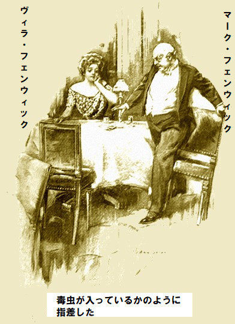
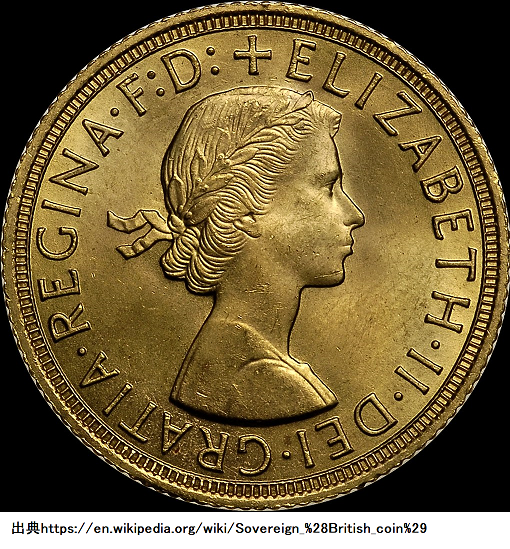
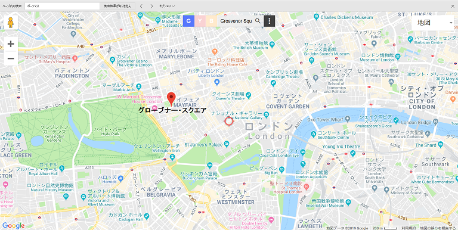
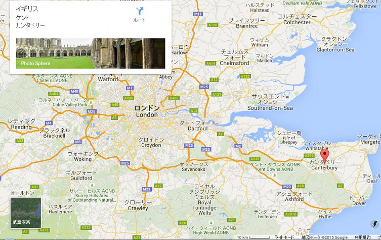
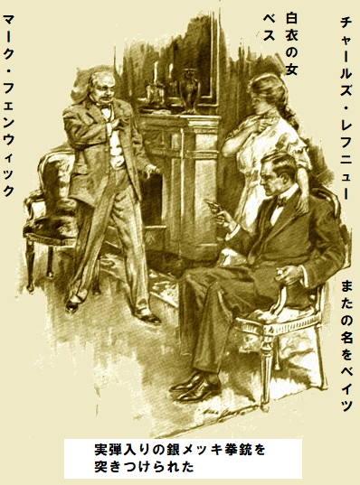
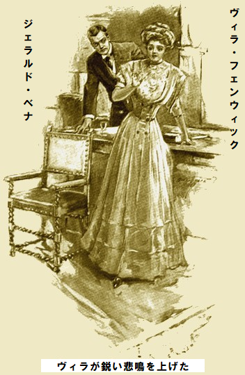
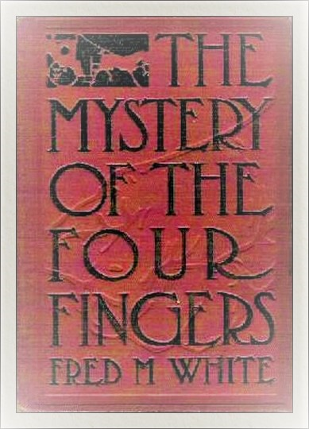

登場人物 備考
マーク・フェンウィック 億万長者
ヴィラ・フェンウィック 娘、実際は姪
ジム・ガードン 元陸上競技選手
ジェラルド・ベナ なぞの冒険家
チャールズ・レフェニュウ ベイツ
ジョージ・レフェニュウ フランス人
ヴァンフォート オランダ人
ベス 白衣の女性
チャールズ 同名が二人いる
ジェイムズ・テイラ 目撃者
ジェイムズ・デイリ ならず者
イーガン 刑事
グレディ 刑事
フィリックス・ザリ 謎の人物
チャールズ・イーヴォス 放蕩息子
マートン卿 農園の所有者
ジョーンズ 悪党の一味
ネッド・ブロセット 詐欺師
ドラモンド氏 仲買人
ジョーンズ船長 南米帆船の船長
レディ・グリン マートン卿の妹
第一章 黒あざ
冬の書入れ時だというのに、ロンドンのグレイトエンパイア・ホテルは珍しく混んでいなかった。おそらく最高級特別室を二、三部屋マーク・フェンウィックが借り切ったせいだろう。同氏の触れこみは米国の成金億万長者。誰も正確な素性や金づるは知らないが、ここ数カ月名前が
これまで顔を見せない理由は欧州への船旅で
美しく装飾された部屋には着飾った男女がもう、ちらほら食事していた。万事グレイトエンパイア・ホテルは最高だ。倹約の考えはなく、顧客を選び、静寂を保つ。
扉近くの小さなテーブルで、二人の男が食事していた。一人は用心深くて、生気があり、都会人の証しだ。身ぎれいにめかし込み、一目で紳士と分かる。
もう一人の男は更に長身、手足が長く、
二人の旧友は静かに食事しながら、時々客人を品定めしていた。やがてガードンが口を開いた。
「結局、文明は便利だと認めなくちゃ。なあ、薄い毛布一枚で夜明け前、凍え死ぬより良くないか」
ベナが冷淡に肩をすぼめた。
「さあね。危険にこそ刺激があるぜ。まさに唯一の生きがいだ。おかしいと思ってるだろう、堅気になって君らのように腰を据えないから。俺の話を聞けば突飛な生き方に驚かないぜ。少なくとも痛みを忘れさせてくれる」
ベナが最後の言葉をゆっくり哀れ気に話す様子は、自分自身に言い聞かせるようで、連れを忘れたかのようだった。目がトローンとして、ロンドンが消え去り、眼前のランが原生林に咲いているかのように見えた。
「俺が
「どうだか、ハハハ。今の世は王様より億万長者の方がいいな。例えばあのフェンウィックだ。新聞の騒ぎようったら、合衆国大統領や王族のお忍び旅行よりすごいからな」
ベナが多少
直後、別な男が足を引きずりながら、脇を召使いに支えられて入室して来た。とても若い男で、しかも美男、髭をきれいに剃っている。余りにも美男だったので、ギリシャ神の出現かと見まごうほどだ。
男の眼鼻立ちは完璧に彫刻され、やや哀愁を帯びて謎めき、バイロン男爵の若き頃を思い起こさせた。だが時々完璧な顔が痛みで
言うなれば、
病人が溜息をついてやっと大きな肘掛椅子に座った。専用椅子だ。召使いを人払いしたのは、用がないからか。メニューに目を通し始めたのは、ほかにやることがないからか。ベナが見過ごさなかったのは病人が両腕をよく使うこと、さらに目に止まったのがたくましい手首だ。
「あれは誰だい。前は立派な体格だったに違いない、ひどくやられているぜ」
「確かに魅力的な人物だな。どうも気になるのは、事故の犠牲者というより、運悪く何かひどい復讐をされて苦しんでいるようだな。小説にぴったりの人物だ。きっとわけありで、もし経歴を探り出せば、素晴らしい物語になるぞ。全くぞくぞくする。俺の想像によれば、あの病人はベッドから強力な意志で這いずり出し、裏工作して長年の恨みを晴らすつもりだな」
「こんな場所じゃやらないぜ」
「どうして。昔なら復讐する場所は
ベナは相棒の空想を笑ったが、わがこと以上に同情した。給仕にあれこれ下知した時、二人の人物に目が止まった。一組の男女が食堂に入ってきた。
男は中年を過ぎ、てかてか
ベナが珍しくごくんと息をのんだ。両目が驚いている。血の気が日焼けした褐色顔から引いて、ぞっとするほど白い地肌がのぞいた。恐怖のせいじゃなく、驚いた為であり、抑えがたい感情から出たものだ。さっとワイングラスをひっつかむと、シャンパンの泡が床にこぼれた。給仕に尋ねた。
「あの男は誰だ。いやいや、俺の言う男はあの男じゃない。太った男、白人の女連れの方だ」
自分の声色が余りにも緊張して耳障りだったので、我が声を疑った。
給仕が驚いて見返した。この何年どこにいたのかと、いぶかっている。
「あのお方がマーク・フェンウィックさま、米国の億万長者でございます」
ベナが給仕を脇にどけた。もうさっきの感情は消え、血の気がほほに戻った。気づけばガードンは礼節を保ちながらも、ただ驚いている。
「どうした、本当に様子が変だぞ。分かってるのか、ついさっきまで、あの肥満体の資本家を凶悪犯のように見ていたな。まさか、前に会ったのかい」
「ああそうだ。でも最後に会ったときはマーク・フェンウィックとかそんな英国風の名前は言わなかったぜ。見てみろ。肌は黄色、
「違うな。強いて言えば、ポルトガル人か、混血のメキシコ人だろうな」
「遠からずと言ったとこだぜ。今晩奴がここに現れたせいで俺が取り乱したと思ったろ。どんな驚きかは分かるまい。あとで教えるから、いまは言わない。それまで座って監視するぜ」
「個人的には連れに興味があるな、ハハハ。神の乙女に間違いないな。何と素晴らしい容姿だ。来た時、気づかなかったか」
「いや、あの男に釘づけだ。誓って、黄色い邪悪な大顔だけだ、奴に最後に会ったのは妙な場所だったぜ」
ガードンは聞く側に回った。前のめりになり、全神経を集中したのが別な男だ。肘掛椅子に丸まり、向うの小さなテーブルにいる。ベナの腕に触って指差した。その先に、何かにさいなまれた男がいた。ベナがつぶやいた。
「複雑になってきたぜ。おいおい、奴は俺と同じくらいマーク・フェンウィックを知ってるようだぜ」
肘掛椅子の身障者がなんとか両足で立ち上がり、強力な筋肉質の腕で、全身をテーブルに預けた。見事な
しばらくその場に立ちつくした様子は、無言の銅像のようで、
そのあと胸ポケットから絹布を取り出し、両目を拭き、明かりがまぶしいかのようにした。一挙一動を二人が監視していると、またポケットから小さな銀色の箱を取り出した。
大きさは普通の安全マッチと同じくらいだ。実際、木のマッチ箱に銀のカバーをかけた形に似てなくもない。粋な邸宅ならどこにでもある代物だ。
そしてもう何も関心がないかのように椅子にふんぞり返って、すっかり楽団に聞き入っている。おそらくベナとガードン以外、ちょっと異常だと誰も気付かないだろう。
「まさに劇だな。実際こんなおかしな舞台で悲劇が進行している。うれしいことにあとで君が解説してくれる。実はあのマーク・フェンウィックのことをもっと知りたいな。平凡な資本家にはちっとも見えないな」
「そうだ、そういうことだぜ。奴は三年前、捨て鉢の貧乏人で、毎夜ロンドンの街をほっつく惨めな浮浪者同然だった。一つ確かなことは、今から死ぬまでどこで飲み食いしようが、自称マーク・フェンウィックというただの極悪人と一つ屋根の下だっていうことだぜ」
ベナの口調が重かったので、ガードンの好奇心が
「何を話しているのかなあ。とにかくあの女は英国人だな。あんな上品な女は見たことがない。こっちを見ているぞ」
ほんの一瞬女が顔を向けると、ベナにもはっきり見えた。すぐ金髪を元に戻し、食事を再開したようだ。すると、ベナが椅子から飛び上がり、部屋を三歩うろついた。その場に突っ立って、気持ちを静めるかのようだった。
それから再び椅子に座り、両手で顔を覆った。ガードンが覗き込むと、顔が真っ青。本当に驚きっぱなしの夜だ、矢継ぎ早で、劇的で、息つく暇もありゃしない。
「まさか知っているのか」
とガードンがささやいた。
ベナの顔には妙に不安な笑みがあった。必死に自制心を取り戻そうとしている。
「ああ知っているぜ。ガードン、びっくりするぞ。こう言ったらどうだ、つまり、あそこに座っている女だ、俺の存在に少しも気付かず、
第二章 人差し指
ガードンは相棒が次に何か言うのを待った。自慢じゃないが人生の
この二十五年間、折りにふれベナのことは知っていた。実際二人の間にはオクスフォードを同期卒業して以来、ほとんど秘密はなかった。時々ベナは放浪中に手紙をよこし、旅のよもやま話を伝えてくれたが、ここ三年は便りもご無沙汰だった。数日前に会ったとき、ガードンは昔の友がかつてないほど
ガードンはじっくり待って、突飛な話の訳を聞きたかったが、ベナはガードンそっちのけだ。座ったまま顔半分を隠している。ボーイが不審げに、随時料理を給仕している。
ガードンがたまりかねて聞いた。
「それで全部かい」
「いや、すまん。すまんがこれ以上言えないぜ。ショックの大きさが分かるだろう」
「ああ、でしゃばりたくないけど、君、見誤っていないかな」
「全然。何も間違っちゃいないぜ。信じているけど、向うにいる女はまだ俺を愛しているし、俺もだ。知っての通りガードン、俺は女が苦手だ。事実オクスフォードじゃ、からかわれたものだ。社交場でガチガチだった。俺のような男でも生涯に一回は恋に落ち、あとは心変わりしないぜ。とにかくそういうことだ。あの女にぞっこんだ。喜んで命すら捧げるぜ。苦しんでいれば、この瞬間でも助けてやる。たぶん俺の顔を、今晩ここへ来た時見たと思う。そこから推定して、見当違いじゃないかと言ったのだろ。さっき、劇場仕立ての話をしてくれた。これから想像できない事を教えるぜ。こう言ったらどう答える。三年前、あの美女の夫になり、挙式の半時間後から今まで、一回も会ってない」
「信じられんな」
「ああそうだろう。でも本当だぜ。ここで俺の恋愛事は言えない。こんな状況じゃ無理だ。あとで君の宿に行って、ぶち明ける。涙もろい奴だと笑われるぜ。でも、もう少しここに居て、妻の言葉をいま一言二言聞きたいんだ。その花束を動かして、明かりをさえぎってくれれば、見られない。それでいい」
「まさか、あの女性が今をときめく老悪党マーク・フェンウィックの娘だと言うのじゃないだろうな」
「もちろん違うぜ。二人の関係は知らん。どんな運命でつながっているかも君同様俺も知らん。好かんが受け流そう。きっとヴィラは清廉潔白だ。給仕なら分かるかもしれん」
「そこの給仕、フェンウィック氏と食事しているあの女性は同氏の娘さんかね」
「さようでございます。フェンウィックお嬢様でございます」
二人が一瞬黙った。ベナが深刻に考え込んだようだ。一方のガードンがさっと見たのは、億万長者のテーブルと、病人がうずくまる肘掛椅子。
いま気づいたのは、向かい側に座っている身障者が、フェンウィックとその連れを、猫がネズミを狙うようにじっと監視していることだ。
夕食が首尾よく終わりに近づき、コーヒーと酒が回ってきた。フェンウィックの前にカップが置かれ、同氏が給仕に下知すると、給仕がすぐ承知した。命令が明白だったので、ガードンにもはっきり聞こえた。要求したのは火、キュラソー酒を燃やし、コーヒーに入れる異国のやり方だ。
「木製マッチを忘れるな。家庭用マッチだ。昨夜持ってきたヴェスタ・マッチだぞ」
給仕がご用命で急に席を外した。それを予想していた別な給仕がいた。どうやら何もせず裏側をぶらついていたようだ。小柄で
小柄な縮れ毛給仕がさっと部屋を見渡し、肘掛椅子の身障者の方を見た。身障者があたかも合図を待っていたかのように長い腕を伸ばし、意味ありげに銀色の小箱を指差した。ついさっき置いた箱だ。
小柄な給仕は部屋を横切り、慎重にテーブルから銀箱を取り上げた。そのあと、すっと億万長者の座席まで行き、肘近くに置いて消えた。部屋を駆けてヤシの葉に姿をくらました。葉陰で扉は見えない。これをガードンが興味深く見ていた。
ベナは
今度は全神経をフェンウィックに集中した。やがてキュラソー酒のグラスを傾けて、器用にコーヒーの中に入れ、脇の銀色マッチ箱に手を伸ばした。連れと話をしながらマッチ箱をもてあそび、手中の小箱など全然見てない。
不意に話を止め、黒眼が小箱に釘づけになった。毒虫が入っているかのように指を差し、立ち上がってぎゃっとあげた悲鳴が部屋中に轟いた。

ぴたりと会話が止み、全員の顔が億万長者のテーブルに向いた。事実上、食事客全員が黄色い禿頭を知り、突然の水入りで想定外の事態になった。
またしてもフェンウィックが恐怖の声を上げて立ちすくみ、目がおびえ、顔面蒼白、凝視する先に何の変哲もない小箱がテーブルにあった。
「誰が持って来たのか。給仕を連れて来い。すぐ探せ。直ちに探せ。ちっこい目で、ネズミ毛髪の小男だ」
ボーイ長がすわ一大事と駆け寄り、わけを聞いたが無駄だった。フェンウィックのやることは突っ立って、身ぶり手ぶりで声高にへまをした給仕を突き出せと言うばかりだった。
「ですがお客様、お客様のおっしゃる給仕はここにはおりません。今ここに全員を集めました。今晩この部屋に入った給仕全員でございます。ご立腹させた給仕をお教え願いませんでしょうか」
フェンウィックの血走ったびっくりまなこが、おもむろに給仕の列をなめ回した。テーブルの周りに並ばせて、首実験した。やがて、いらついた様子でかぶりを振った。
「奴はここにいない。ここにはいない。背の低いおかしな黒髪の男だ」
ボーイ長もいたく同意した。億万長者の怒鳴り声がますます大きくなったので、ついにベナが瞑想から目覚め、ガードンに何事かと聞いた。できるだけ説明して、外さなかったのは奇妙な銀色小箱のことだ。ベナのニヤリとした態度には、大いに内実を知る趣があった。
「想定内だぜ。あとで話してやるぜ。どこからあの美男の身障者が現れたのか、謎だが」
この頃になるとフェンウィックの抗議も弱まり、英語とポルトガル語でごちゃごちゃ言うので、ボーイ長が多いに困惑し、未だに立腹の原因を計りかねた。食事客のほとんどが億万長者のテーブルに集まり、失礼のないように好奇の目を向け、色々助言した。
「部屋に戻りましょう」
甘く優しい声がして、上背のある色白の女がフェンウィックの隣で立ち上がり、扉の方へ向かった。
まあ運の悪いことに、ベナも同時に立ちあがり、テーブルから離れた途端、女と鉢合わせになり、女がその場に突っ立ち、じっと見入った青い眼には苦痛のような表情があった。
一瞬後ずさりして、もしベナが腕で腰を支えなかったら倒れていただろう。あらぬ騒ぎで不意に混乱する中、誰にも気づかれず、ただガードンのみが、すぐその場を収めてくれた。
「女の部屋へ連れて行け。女一人では無理だ。フェンウィックは俺に任せろ」
ベナが友を見て感謝の念を投げた。少しもためらわず、小脇に抱えた女を見れば、差し当たり逆らう気配はない。強引に手際よく女の手を
「どちらへ？」
「大階段のほうへおねがい。二階です。でも一緒に来ちゃダメ、来ちゃダメ。一緒にいたことがばれたらどうなるか」
「まだ来ないよ。俺の友達が引き留めているので、五分間は一緒にいられる。ジム・ガードンのことを前に聞いたことがあるだろう」
「でもこわい。とても危険です。ジェラルド、わたくしの仕打ちを考えれば……」
「誓って、きみのことを冷淡とか
美しい顔がゆがみ、
「お言葉をありがとう。本当にありがとう。せめて、わたくしの苦しみと、降りかかった恐ろしい重圧をご存知なら……。これでも最善策を選んだのよ。どれだけ、あなたが消えて、忘れて下さっていたら……。時が経てば、ただの思い出になったでしょうに。しかし心底ではいつも会いたかった。幻じゃないよね、このように会えたのは」
「ちっとも幻じゃないよ。この三年間ずっと探し続けていた。今晩きみを見つけた時、あの男をこの手にかけやしないか、ひやひやだった。きみが惨めに苦しんでいるからだ。奴は何年英国人と名乗っているのか。億万長者になってからか。本当の億万長者ならばだが」
「言えないの。実際知らないもの。少し前は貧乏だったけど、突然お金があちこちから入ったの。聞かなかった。聞いても答えないもの、少なくとも正直には。さあ、出て行ってちょうだい。いつまた会うなんて、言えないわ。当分昔のように私を信じて。ああ、胸の内を察して。こんなことを言うはめに。いつも愛のすべてをあなただけに捧げてきたのに。ジェラルド、すぐ行って。あの人が階段を上がってきます」
ベナが
「見つからないだろうな。理由は簡単、奴は受け子で、俺の考えじゃ、給仕じゃないな。お察しの通り、あの身障者も消えた。大いに箱の中味を知りたいな、あの小箱に腰ぬけが死ぬほど怖がった。あんなビビリは見たことがない。酒を二杯も飲みほしてから自室へ上がった。ジェラルド、是非中身を知りたいな」
ベナがにやりと笑った。
「当ててみようぜ。君はこう言わなかったっけ、謎の給仕がテーブルからひったくった場所は、身障者のそばだと」
「その通り。俺が直接見たのは、フェンウィックが木のマッチを所望して、あのおかしな小男の給仕が銀の小箱を持って、フェンウィックのテーブルに置くや、用心深く消えたことだ。でも前に言ったように、箱の中身をぜひ知りたいな」
「じゃあ、行って見ればいいぜ。俺の目に狂いがなければ、箱はまだフェンウィックのテーブルにあるぜ。恐怖のあまり奴はすっかり忘れとる。あの給仕は従業員の中にいないし、上長やら下っ端を怒った原因も分かっている。俺の言うことを聞けば、箱の中身が覗けるぜ。見ても言うなよ、当ててやるから」
ガードンがテーブルに行き、小箱を手に持った。引き出して中を覗き、
「言うなよ。お見通しだぜ。箱の中身は乾燥した肉片、長さ八センチの、つまり人間の干からびた人差し指だろ」
第三章 消えた鉱山
ガードンが意味深にうなずいた。頭で謎を組み合わせたが、まだ解けなかった。ベナが言い当てても、少しも驚かなかった。
「ずばり当てたな。まさにぞっとするブツだ。どういうことだい」
この頃になると、夕食はとっくに終わり、客も全員退去した。あちこち明かりが消え、部屋半分が薄暗くなった。まさに秘密を打ち明ける頃あいだ。
「どうやって中身を知ったのかい。似た例は以前、本で読んだことがある。大体復讐前の警告だけどな」
「実は同じだぜ。
「この箱の始末はどうする？」
「絶対そのまま持ってろ。きっとフェンウィックは失せ物を探しに戻ってくるぜ」
予言はガードンの期待以上に早かった。暗闇から黄色い顔のマーク・フェンウィックが現れた。こそこそ、まるでさもしい盗人のようで、今にもけちなことをしでかしそうだ。明らかに何か探している。
がっかりした様子が見えたのは、食事したテーブルが、花以外きれいに片付けてあったからだ。近くの二人には全く気づいてないようだ。ベナが相棒から小箱を取って、フェンウィックの横に進み出た。
「何か失くされましたか。これをお返しいたします」
億万長者がベナを見て、うぉっと叫んだ。まるで子供が歯痛で苦しんでいるような声だ。ひどくベナを見下しているけど、ベナの表情はと見れば、両者初対面かと思われた。一瞬フェンウィックは棒立ちになり、黄色い顔をしかめ、自暴自棄の悲惨な自画像と化した。
「はて、お宅のものでしょう」
「おう、ええ、そうだ。よく分かったな、そのう、確認させてくれ、おお、何と言うか、実は、今晩は体調が悪いので、何も分からん、どうもすまん」
フェンウィックがベナの手から小箱をひったくって、あわてて扉のほうへ去った。
ガードンが言った。
「夜も十時を過ぎたから、葉巻を吸ってもよかろう。そういうことだから、一緒に吹かして話そう。今知りたいのは箱にあった指の意味だな」
こんな遅い時間であれば食堂で葉巻を吸っても異論はないので、やおら友人同士、ハバナ葉巻をくゆらせた。ベナがやっと話し始めた。
「たぶん君も同じだろうが、まず小箱の件に取り掛かろう。覚えているかい、三年ほど前こんな内容でメキシコを旅すると書いたぜ。全然行く気はなかったが、気まぐれであの国の冒険にかけた。数ある山のうち、むかし金が発見された所だ。全然疑わなかったぜ。大量の金が今もたっぷり山奥に埋まっていると思い、そこに腰をすえた。鉱山師は掘りつくしたと言ったが、全然気にしなかった。これを初めて教えてくれたのは混血のメキシコ人だぜ。自国の歴史をよく知っており、特に伝統や伝説に詳しかった。高等教育を受けた語り部だった。この男が俺に初めて四つ指鉱山の話をしてくれた。どうやらこの鉱山が発見されたのは数世紀前で、見つけたフランス人が住みつき、現地の酋長の娘と結婚した。この鉱山発見者は妙な男で、とても欲深い性質だった。並の資本家なら、労働者を集めて鉱山を開発するものだ。どんな価値であろうとだ。だがこのレフェニュウという男はそんな奴じゃなかった。全く秘密にして、掘削を自分一人でやった。きっとすごい体力の持ち主で、恐れ知らずだったろう。習慣にしたのが、ある季節だけ山に入り、一ヶ月か二ヶ月作業し、残りを家族と過ごす。また確実に、秘密を守り通し、成人した息子たちにも教えなかった。死んだ時、息子たちが鉱山の場所を全く知らなかったからだ。この話はレフェニュウの子孫から聞いたぜ。ここから面白くなるぜ。レフェニュウがある年の五月早々、山に入り、二ヶ月間いつものように一人で掘っていた。おそらく人生で初めて激しい病気に
ベナがちょっと止めて、話の山場を演出した。ガードンは無言だ。余りにも引き込まれたので、何も言えなかった。
ベナが続けた。
「これが第一幕だ。六か月が過ぎ、ヴァンフォート未亡人が
「もちろんわかるさ。オランダ人の薬指に間違いないな」
「その通り。詳しく話す必要もないし、退屈させたくないぜ。六ヶ月後に中指が同様に衝撃的に届き、年末に小指で完結した。もう一度言わせてくれ。この鉱山が四つ指鉱山と呼ばれていたのは一世紀以上も前で、そのあと、この変な出来事が起こったんだぜ」
「確かに異常だな。これ以上不気味な話は聞いたことがないな。それで、オランダ女は罪を認めたのか。大団円になると思うがな。
「いいや。理由は簡単だぜ。気がふれて
ガードンがゆっくりかぶりを振った。明らかに億万長者の異常に気付いていない。ベナが説明を続けた。
「この話をしようぜ。俺が結婚した当時、妻と乗馬を楽しんだ場所に四つ指鉱山があった。いいかい、結婚は内緒だったからフェンウィックは知らなかった。もちろん俺がヴィラに
「そうかい。そんな些細なことは三文推理小説のくだらないことだろう」
「でも重要だぜ。箱は右手で取ったけど、左手を伸ばそうとして、不意に心変わりして、左手はポケットにしまった。でも遅過ぎて、俺の目をごまかせなかった……」
「分かったぞ。左手の指が無いんだな。何ということだ。ぜひ真相を探らなくちゃ」
「まさにそうだ。飲み込みが速くて嬉しいぜ。俺は指が無いことに気づいて、一瞬よろめいた。もしフェンウィックが冷静だったら、俺に見られたと悟っただろう。言う必要もないけど、最後に会ったとき、奴の左手はちゃんと揃っていた。おそらく奴は
「その報いが来ているな。ぞっとするのは恐ろしい報いが、欧州まで不気味に到達するってことだな。でも忘れるな、原因はある程度分かったし、今晩向うのテーブルに座っていた身障者も忘れちゃいかんな」
「忘れてないぜ。そのうえ確実に、奴は我々より知ってる。今晩ここに来た時、奴が思いもしなかったのは、四つ指の謎をよく知ってる者が少なくとも一人いたことだ。奴を探り出し、必要なら締めあげて吐かせてやる。でも込み入っているから、俺の見る限り、危険が無いわけじゃないぜ」
ガードンは考え込んでしばらく黙って煙草をふかし、思いを巡らした。考えれば考えるほど、凶暴な手口だ。
「一つ有利なことがあるな。あの謎の身障者は明らかにフェンウィックの天敵だな。まず奴を見つけて交渉しよう、うまいやり方でな」
「確信はない。とにかくその方向には動けないぜ、全てを慎重に考え抜かないと。あの身障者は明らかにやり方が狂人的だし、単独じゃない。忘れるな、給仕係りを演じた小男を。残念ながら俺は奴に気がつかなかった。あんなことが大胆にできる奴はあなどれないぜ」
ガードンが立ち上がりあくびをして、寝る頃だと言った。もう十二時をとっくに過ぎ、ホテルは次第に眠りつつあった。グレイトエンパイアは
「さて退去するかな。あした俺んとこに昼飯を食いに来いよ。冒険話など聞かしてくれ。ウェイター、外の天気は」
「最悪でございます。土砂降りでございます。馬車をお呼びしましょうか」
第四章 エレベータ
ガードンはホテル玄関口から外を眺め、舗道に叩きつける雨足を見ていた。静寂だったはずが、絶え間なくぴしゃぴしゃ、ざあざあとうるさい。こんな夜に一キロ歩いたらずぶぬれになる。あいにく薄い上靴と、軽い上っ張りしか持っていない。五、六回夜勤の赤帽が笛を吹いたが、馬車の姿すら見えなかった。
「今晩はつかまらないぜ。馬車は
ガードンは一も二もなく同意した。実際それよりほかに無かった。眠そうな受付係から部屋鍵を受け取って、二階へ上がり、ベナの寝室へあがり込んだ。
「寝る前に一服しよう。まるで運命によって謎の首謀者のそばに、はべることになったな。ついでにあの身障者を突きとめるのも難しくないだろう」
「朝なら簡単だぜ。あんな目立つ男なら、見逃すことはない。ましては、ここに確実にいたのだから。思い起こせば、係員が左テーブルに連れてきて、予約したかのようだった。さてと、構わなければ俺は寝るぜ。どうも興奮して眠れそうにないけど。じゃあな、ガードン」
ガードンも自室へ戻り、ゆっくり上着を脱いで、あれこれ考えながらベッドの端に座った。おそらく興奮が静まらない為にベナも起きており、自分も全く眠る気分じゃなかった。いつもは熟睡するのだが、今夜は例外のようだ。
一時間経過したが、ガードンは依然として座ったままだ。ベッドに入って無理にでも寝た方がいいのじゃないかと自問した。じれて明かりを消し、意を決して頭を枕につけた。
だが駄目だった。眠れない。どっちみち部屋が真っ暗にならない。当階の寝室が背中合わせに造られて、間に大きな換気口があるからだ。そこから光が漏れている。明らかに隣客がまだ寝ていない。明かりが気になり悶々として、何で隣人がこのように自分を悩ませるのか。直後、押し殺した声が換気口から聞こえ、ドスンという落下音がした。
通常であれば、そんなことは何でもないだろうが、その時は神経が高ぶっており、謎解きに腐心していた。何か不気味で秘密めいたことが隣室で行われているように思えた。
普通、誰もグレイトエンパイア・ホテルに犯罪や陰謀を連想する者はいない。だがガードンはベッドから起きて隣室を換気口から見ようと決めた。簡単じゃなかったが、椅子二脚を上下に組んで目的を達した。慎重にガラスを外し覗き込んだ。見た限り怪しいものはない。部屋は無人だが、こうこうと明かりが点いている。
一瞬、自分の行動を恥じて、寝ようと半ば決めかけたちょうどその時、何か異常なことに気づいた。鋭い耳に、いびきのような音がはっきり聞こえたので、換気口に体を半分入れて、何とか隣室の寝台を見た。ベッドに制服姿のボーイが寝ており、間違いなく伝令係か、その
たぶん、こんなおかしなことはあり得ない。だって制服姿のボーイが靴を履いたまま寝ているなんて。しかも豪華な部屋だし、伝令係などが泊まるアパートじゃあるまいし、ましては若造が勝手に空き部屋に潜り込んで眠るなんてあり得ない。
「何か臭うな。ちきしょうめ、換気口を通って見てやれ」
難なくガードンのような陸上選手は換気口を通って、隣の寝室まで行けた。眠りこけている若造を揺り動かした。ボーイは泥のように眠っている。体をひっくり返して見れば、反対側のえりにエレベータと書いてある。
何が起こったか分かり始めた。グレイトエンパイアのような大ホテルはエレベータを止めることはないから昼夜、係が就く。何らかの理由でこのボーイはこの部屋に連れ込まれた。それに間違いない。いくら揺り動かしても、ちっとも気がつかない。部屋扉のところへ行き、施錠を知っても驚かなかった。
当初、自室へ戻って夜警を呼ぼうと思ったが、妙に突飛な考えが浮かび、止めた。心によぎったのはマーク・フェンウィックか身障者が、この
「ちょっと待て。俺の鍵でもこの扉は開くかもしれないな。とにかくやってみよう」
ガードンが自室へ戻り、数分後、自室の鍵を持って出て来た。嬉しいことに隣室の扉が開いた。それからエレベータ近くの廊下にじっと立った。エレベータは音もなく上下している。
辺りは全く静かだったから、そこに立っていれば姿を見られずに、違法な行為が見られるはずだ。ガードンがじっと立って、立孔を見ていると
ゆっくりと滑らかに音もなく、ガードンのいる階へ上がって来た。開放籠だったので、中味がよく見える。事実上、空っぽと思いきや、男が一人乗っており、床の上にごろり、意識が無い。籠はゆっくり上がって来たので、姿をじっくり見ることができ、そのまま上階に上がって行った。
二度見の必要が無いほどはっきりしたのは、中の人物が従業員であり、同じ薬を盛られている。その薬で、あのエレベータボーイもやられた。
「どういうことだ。誰だ、上階にいるのは。二名を排除して、都合がいい奴は誰だ。何を上げ下げしたいのか。通常の方法では危ないブツか。見届けてやる。今夜は寝ないぞ」
エレベータは同じく静かに消えた。上階でしばらく留まり、再び現れた。今度も空っぽと思いきや、鉄帯を巻いた小さい四角い箱が、床の隅に置いてあった。籠が降りている時、ガードンが突然行動を決めた。下降する籠の天井に軽々と飛び乗って、両手でロープをつかんだ。直後、暗闇に降りて行った。
どうやら、地下へ降りて、そこでしばらく留まるようだ。空気が生暖かく、湿ったカビの臭いがするから、ホテルの地下に違いない。暗闇に目が慣れてくると、眼の前に丸い光の輪があった。明らかに石炭搬入口だ。
じっと待つひまもなく、事件が展開した。ひそひそ声とガチャンという金属音がして、誰かがエレベータの扉を開けた。一人の声が分かり、興奮した。話し声はスペイン語かポルトガル語だ。すぐにひらめいた。この言葉に聞き覚えのあるのは自称マーク・フェンウィックだ。間違いなくそうだ。今晩早々に大騒ぎを演じたあの人物だ。
「ぐずぐずするな。もう二箱、上に運んで、さらに二箱降ろすぞ。幌馬車は来たか。さもないと朝まで待つことになるぞ」
「幌馬車は到着済みです。ブツは舗道に置きました。最後のブツをここへ持ってきて、すぐ上にあげます」
ガードンの耳に荒い息が聞こえ、姿の見えない男どもが重い荷物を運んでいるようだ。直後、何か四角い物体をエレベータの床に運んでいたが、手から滑り落ちてドスンと大きい音がして、エレベータが生き物のようにぶるっと震えた。
「まぬけ。俺の足に落とすところだぞ。手を離してどうすんだ」
「すみません。こんなに重いとは知りませんでした。縄が切れました」
「一晩ここにいるつもりか。まだあの男を下へ運ばんといかん。あのボーイも元の場所へ戻さんといかん。さあ、上にあげろ」
天井に乗ってロープにつかまり、ぞくぞくしながらガードンは次の展開を考えた。再び上昇し、すぐ明かりに包まれた。自分の階に来るまで待って、素早く飛び下りて、中をのぞけば、重たそうな箱がエレベータの床に乗っている。一角が落下の衝撃で割れて開き、砂のようなものが小山になり、電灯の明かりでキラキラ光っていた。
ガードンは立ちすくんで一瞬息をのみ、次にどうしようか途方に暮れた。再びエレベータが降りて来て、今度は前より小さい箱が二個乗っていた。
下へ降りて行き、また上がってきた時、かろうじて寝室扉の後に隠れ、籠に乗った二人の男に見られずに済んだ。ちらっと見えた一人は全く知らない男だったが、心臓の鼓動がちょっと早まったのはもう一人が馴染みのマーク・フェンウィックだったからだ。謎がだんだん見え始めた。
「間一髪だったな。自室へ戻って、様子を見た方がよさそうだ。用心に越したことはないな」
エレベータボーイはまだベッドに寝ていたが、表情がゆがんで、薬が切れ始めたか。少なくともそう見抜き、後述するけど、大きく間違っていなかった。素早く自室へ戻り、換気口側に立ち、待っていると、隣室から靴音が聞こえた。男が二人、はいってきた。少し危険を冒して覗けば、意識のないボーイを冷静にじっと観察している。
「あと五分で目が覚める。外へ出して、持ち場へ放り込め。気がついたら、寝ていたこと以外何も分からんはずだ。小僧も頭痛がなけりゃ、冒険も悪かない」
「いま全部上げるのか」
「全部だ。あのじじいも喜ぶぞ。奴の考えも悪かないが、こんな大ホテルで小細工をやるなんぞ。でもやっぱ、危険が無いわけじゃない。俺は本国へ逃げたい。そこで一、二週間過ごしたい」
それ以上聞こえなかった。頃よく半時間おいてから、再び換気口から侵入し、エレベータの隣室へ着地した。いまやすべてが正常で、何事もなかったようだ。エレベータボーイは自分の詰め所に座り、あくびをして背伸びしている。明らかに自分が受けたひどい仕打ちなんか知らない。ふとガードンに良い考えが浮かんだ。ボーイに言った。
「エレベータをこの階まであげてくれ。いや使うのじゃない。失せ物だ、エレベータに落としたかもしれない」
この階級が見せるいつもの無関心さを装い、ボーイが電気ボタンを押すと、エレベータが地下室から上がってきた。
「地下室へ行けるのか」
「ご要望があれば参ります。たまにございますが、これはお客様専用です。空気クッションが備わっており、つまり最悪事でも、エレベータはコンクリート製の井戸型筒に落下しますから、空気クッションが働いて止まります。ロープが切れて落下しても、コップの水はこぼれないそうです。まさかやってみようとは思いませんが、そういうことでございます」
ガードンがエレベータへ乗り込み、しばらく何か探すふりをした。実際は黄色い砂をすくっていた。箱から床に落ちたものだ。それを紙切れに包んだ。そのあと、寝ようと決めたものの、起きている気力はあった。
実際は頭を枕につけた途端に寝入ってしまった。それでも翌朝早く起きて、朝食前にベナの寝室に行った。ぞくぞくする話をするはめになった。ベナは興味深げにじっと聞いているだけだったが、やがて口を開いた。
「やったぜ。その前に、その黄色い砂とやらを一目見たいぜ。明かりの近くで見せてくれ」
ベナが黄色いブツをぽとぽと手に落とした。それからガードンに向かってにっこり。
「カスと思ったろう。大した価値はないと思っただろ」
「そうだろ？ じゃあ何だ」
「金だ。純金の最高級だ。こんな極上品は見たことないぜ」
第五章 ベナの困惑
ベナは座ったまましばらく指で砂をいじって、どういうことか考え込んだ。過去の特殊な経験に照らしてピンと来た。だが、ガードンには分からない。
「四つ指鉱山の金だと思うけどな。今まで純金を扱ったことは無いけど、もっとキラキラ輝くんじゃないか。本当に純金かい」
「絶対純金だぜ。金採掘は二通りある。一つは機械で鉱石を砕くやり方、南アフリカ方式だ。もう一つはバケツや、砂鉱から選別する方法だ。一般に豪州やメキシコで見られる。四つ指鉱山から来たとしても、ちっとも驚かないぜ」
「反論する理由はないな。ゆうべ君から聞いたけど、明らかにマーク・フェンウィックは謎のお宝の在処を見つけとる。でもそれが昨夜の理由になるかな。なぜゆうべのような無理をするんだ。堂々と正面扉からブツを運び入れて、別な箱を出せばいいじゃないか」
「その訳を探さなきゃ。奴は自分で億万長者だと言っているが、単なるやくざな山師だぜ」
ガードンが同意してうなずいた。何か切羽詰まってマーク・フェンウィックはあんな方法を取らざるを得なかったのだろう。なぜ知られたくなかったのか、ホテルで純金箱を受け入れ、同価値のものを搬出したのか。でも慎重に計画したのかもしれない。
エレベータ係に薬を盛るのは相当危険があるし、少しでも手順が狂えば、発覚しかねない。実際、全て順調に終わったようだ。ただしガードンにたまたま秘密を見られてしまった。
「捨て置けないな。一生に一度、素人探偵になってやる。よし決めたぞ、フェンウィックの特別室にはいって、中を見てやる。もちろん手間がかかるから、慎重に計画しなくちゃ。この件で、君の奥さんを利用できないか」
「まずいぜ。第一に気に食わん。第二に皆目見当がつかん、マーク・フェンウィックの握っている秘密が、ヴィラとどう関係しているかだぜ。ゆうべ話したように、妻は結婚後すぐに俺の元を去り、さっきまで二度と会わなかった。何か恐ろしいことが起こったに違いない、さもなきゃあのように俺を見捨てない。マーク・フェンウィックが結婚を知ったとは全然思わないが、この点は確信が無い。今日の遅く俺の部屋へ来てくれ。やることを考えておく。ツキはこっち側にあるぜ」
午後の時間がゆるりと流れたが、ベナは名案が浮かばなかった。フェンウィックの部屋を、ばれずに調べる方法だ。
ベナがホールをぶらついて、煙草をひとしきりふかしていた時、フェンウィックが階段を下りてきた。明らかに旅支度だ。大きな毛皮のコートをまとい、後ろで召使いがバッグ二個と
ロビーが少し薄暗かったので、ベナは相手を監視するも、気づかれなかった。見過ごさなかったのはフェンウィックの不安顔だ。
後ろを二、三度振り返り、半ば尾行を恐れているようだ。ベナが昔見た同様のコソコソ態度は警察のお尋ね者そのものだ。フェンウィックが受付に立ち寄り、鍵を二個、係へ渡した。指示がベナによく聞こえた。
「二、三日、鍵は不要だ。どんな口実でも鍵は誰にも渡すな。たぶん土曜日には遅くとも戻る」
ベナがすかさずフェンウィックを追い、通りまでつけた。なんとか行く先をつかみたい。耳をそばだてていると、チャリングクロスという言葉が分かった。ホールへ戻り一安心だ。明らかにフェンウィックは二、三日海峡を渡る予定だ。係に言ったのは土曜日まで帰らない。
ついに好機がやってきた。ゆっくり慎重に階段を上り、自分の部屋へ向かった。この頃までにフェンウィックの特別室が自室の真向かいと分かっていた。考えたあげく、三階まで昇り、特別室をよく調べることにした。
そんなに長くかからず分かったのはフェンウィックの特別室が平屋方式の独立部屋だということ。つまりひとたび外扉を閉めれば特別室へ出入りできない。
ベナが思案していると、扉が開き、ヴィラが慌てて出てきて、あわやベナの腕に飛び込まんばかり。ベナを見て真っ青になり、大扉を急いで締めた時、ヴィラの手に小さなエール鍵が見えた。この鍵があれば特別室へ入れる。バツが悪そうに悩んでいるようだったが、それはベナも同じこと、相当後ろめたかった。
でも、全くヴィラは上の空だった。不安と不幸の為に、あらゆるものが見えなくなっていた。
「ここで何をしているの？」
「きみを探していたのさ。いまロビーにいたら悪党のフェンウィックが出て行くのが見えた。一日か二日戻らないようだ」
もうすっかり立ち直っていた。
「ええ。でも行先は知らないの。決して言わない」
ほんの一瞬ベナは相手をキッと見据えた。理由を聞くこのチャンスを逃がしてなるものか。
「廊下の端に、休憩所がある。シダと花々に囲まれており、内緒話に最適だ。ヴィラ、いやでも説明してくれ」
ヴィラがたじろいで、顔色を失った。だが同時に訴えるような懇願のまなざしをベナに向けると共に、深い愛情を示した。
ベナはひどい仕打ちを受けていたが、一瞬も自分の妻になった女の本心を疑わなかった。でも世間では、こんな仕打ちを受ければ、ほとんどの男が我慢しないし、その後大いに恋をするものだ。手をヴィラの腕に置き、強くしっかり握ると、抵抗しなかったので、休憩所に連れて行った。
「さあ。教えてくれないか、なぜ挙式日にあのように奇妙に消えたのか。お色直しすると言ったまま戻って来なかった。こういうことかい、あの瞬間に何かあって、別れざるを得なかった。そういうことかい」
「そうよ、ジェラルド。寝室に手紙があったの。短文だったけど、幸せを永久に壊す内容だった」
「ちがう。永久じゃない。きみを絶対に無条件で信じろと言われたからそうしたし、きみの言葉を全て信じたし、辛抱強く好機が来るまで待った。でもここにじっと座って、きみの人生を傍観するつもりはない。フェンウィックのような悪党の為に壊されている。まさか奴の為ではなく……」
「そうよ。私が犠牲になったのはあの男の為じゃなく、ほかの人の為よ。その人の人生が奇妙な手段で縛られていたからよ。ジェラルド、最初に出会って求婚したとき、あなたは私の過去に全く関心が無かった。なぜなの」
「必要あるかい。僕は自由の身だし、思った以上に資金もあるし、事実上親戚もいない。きみだけで十分だし、きみだけを愛している。何も気にしない、過去も気にならない。知りたいのは、いつまでこの状態が続くかということだよ」
「言えないの。信じてちょうだいあなた、信じ続けて……」
急に黙った。誰か廊下でヴィラの名前を呼んだので、ベナのそばを離れた。ヤシと花の間から見れば、一人の女と熱心に話している。女はレディの召使いの格好だ。ベナが見落とさなかったのは召使いの平然とした怖い顔だ。それもほんの一瞬で、ヴィラが手に電報を持って戻ってきた。
「すぐに行かなくてはなりません。重要事態です。また会えるか分かりませんが……」
「会えるさ。今晩一緒に夕食しよう。今回だけでも、ハネムーンを思い出させてくれ。あの悪党フェンウィックはいないし、知らないのだから。さあ、約束してくれ」
「実際できません。危険なことを分かって頂けたら……」
だが、ベナの粘りが功を奏し、夕食の約束を取り付けた。すぐにヴィラは廊下を走り去った。視界から消える間もなく、見ればテーブルに小さなエール鍵が置きっぱなしだ。それを見て、ぞくぞくっ。待ちに待った好機だ。
たった一〇分しかかからず、電話したらガードンがグレイトエンパイア・ホテルに来た。大急ぎでベナが概要を説明した。ぐずぐずしちゃおれない。
「もちろん危ないぜ。全く正当化するわけじゃないが、妻のちょっとしたへまに付け込もうとしている。どう思う」
「たわごとだな。君は妻を愛してるし、無条件に信じているし、悪党のフェンウィックから救いたがっている。君の奥さんは自己犠牲という病的な考えを持ち、惨めな人生を送り、信念を裏切ろうとしない。ばかばかしいたらありゃしない、長々ためらいおって」
「じゃ、急ごう。見に行こうぜ」
錠に鍵を差し込むと、ついに大扉が開き、豪華な特別室が御開帳。見る限り、今ならやりたい放題だ。きっと召使いたちはフェンウィックの留守に乗じて休みを取っている。
ざっと見たところ、部屋に異常なところは何もない。この部屋は大金さえ積めば誰でも泊まれるのだろう。部屋の中には机があり、用心深く施錠されており、そばに耐火金庫もあった。
「どれも中味は見られないな。しかも危険すぎる。おい、何か音に気づかないか。機械のような音だな」
確かに遠くの部屋からカチャカチャ、ゴウゴウ、ブンブンという音が聞こえ、まるで小さなモータを近くで回しているかのようだ。同時に、間違いなく石油の臭いが漂っていた。
「一体全体何だい。この階に間違いない、遠くないな」
「知りたけりゃ、行って見ることだぜ。こっちの方向だ」
ついに小部屋にたどりついた。長い廊下の端だ。確かこの部屋から機械音がする。近づくほどに大きくなる。半開きの扉から中を覗くと、男二人が何か機械作業をしている。
炭火が火床で燃え、一対の小型強力ふいごが備わり、小型モータで回っている。炭火の中央に金属るつぼがあり、まばゆく白熱して、肉眼で凝視できないほどだ。
ベナが気づいたのは妙な作業をしている男どもが、顔を隠していることだ。少なくとも巨大な黒メガネをかけており、覆面同然だ。背後にもう一人男が立ち、どう見ても職長だ。口にキセルをくわえ、スリッパをつっかけ、幾分太った体にフロックコートを着ている。
やがて職長が合図をすると、長い「やっとこ」で、白熱したるつぼを炭火から引き上げた。外から確認するのは無理だ。何をしているのか。だが、明らかに職長は作業に満足している。なにやら判断を下した。
「それで十分だ。いい出来だ。さあて野郎ども、休んでくれ。俺は出かけて、ほかのブツを仕上げる」
「奴が来る。逃げようぜ。ここで捕まっちゃ、うまくない」
二人は一緒に廊下をかけ戻り、扉の奥に立って、次の行動を決めかねた。フロックコートの男が通り過ぎ、小脇に抱えた四角箱は写真家が写真を取った後、原版を入れるスライド箱に似ている。フロックコートの男はその箱を椅子に置くと、急いで引き返し、どうやら忘れ物をしたらしい。
「チャンスだな。中味を見よう。重要な手掛かりがあるかもな」
パッパッと手際がよかった。箱の中には、脱脂綿の間に、大量の金貨が納めてあり、明らかにソブリン金貨だ。保管状態は最高のようだ。照明で新品のように輝いている。
「一つ盗ろうぜ」
「骨折り損のくたびれ儲けになりそうだからなあ。二枚にしよう、君もいるし」
ガードンがポケットに金貨を忍ばせて扉へ行くと、フロックコート男が戻りながら洋洋と口笛を吹いて、まるで侵入者達に逃げる機会を与えるようだった。男が姿を現わさないうちに、大扉をそっと閉めてベナとガードンは再び廊下に出た。
第六章 へま
再び奥まった喫煙室へ戻った時、ベナが言った。
「何かおかしな所が硬貨に無いか。よく見ろ」
ガードンがそれに応えて、硬貨をひっくり返したり、重さを感じたりした。見た限り、状態のいい本物の英国硬貨だし、それぞれ二〇シリングの価値がある。
「ちっともおかしな点はないな。俺の判定じゃ本物のようだな。最初フェンウィックが
こう言いながら、硬貨を大理石のテーブルに放り投げた。チンと澄んだ音がした。
「一ポンドだな。重さもいい感触だ。いかな
「同じ意見だぜ。むかし
「お安い御用だ。一九〇一と一八九九の刻印だな。分からんな、日付を指摘しただけで。何が言いたいんだ」
「刻印が鮮明だってことだぜ。流通していればもっと薄れているもんだ。だが二枚とも造幣局並みの完品だし、日付も違う。フェンウィックが英国金貨の収集家になったと思うか。その上、フロックコートの男もこの硬貨に絡んでいる。もちろん脱脂綿で丁寧に包まれていたことも知ってるぜ」
「二重に確かめたいな。じゃあ、銀細工師の店に行って、本物か調べてもらおう」
それほど遠くへ行かず、近くに銀細工師がおり、そこで少し切ったり、試験したり、重さをはかった。助手がにこやかに断片をベナに戻して言った。
「それぞれ十八シリングと六ペンスをお支払いしましょう。これがこの金貨の本来の値打ちでございます。ご存知でしょうが、英国の金貨にはある程度合金が含まれており、合金が無ければ流通で、すぐ劣化します。昔のギニー金貨がよくそうなります。お客様の硬貨はちょっと切りましたので、どうやら三シリング損をさせたようでございます」

ベナが笑顔で店を後にした。実際、前よりちょっと戸惑っていた。二枚ともどこかに偽造を期待していたからだ。
「当分、あの鑑定は保留だぜ。やはり絶対どこか抜け穴がある。全く分からん。夕食の後、今晩このホテルへ来てくれ。コーヒーと葉巻を一緒に楽しもうぜ。俺は妻と夕食するけど、妻は緊急用事があって、夕食後すぐ外出する」
午後七時ちょっとすぎ、ベナがいらいらしながらヴィラを待っていた。全く残念というわけじゃないが、食堂が数日前よりも急速に混んで来た。一般的には大勢の方が安全と言えるだろう。
ベナは二人用の小さなテーブルを部屋の隅に確保して、扉側に立って、ヴィラが現れるのをそわそわ、いらいらして待った。かなり不安で神経質になり、何か起こって土壇場で来られなくなったのじゃないか。普段のベナは神経過敏でぐらつく男じゃないが、今晩はそんな感じだった。
かつてこんな奇妙な立場の男がいただろうか。同様に驚くのは辛抱強く待って、権利を主張しないことだ。十分な財力があり、金が必要なら、フェンウィックにすら払う覚悟だ。
こんなさもしいことを考えていると、ヴィラが入ってきた。そそと白い服を着て、花以外の装身具はつけていない。いまや顔が輝き、眼には幸せの期待があった。
ベナが女の手を握り締めながら言った。
「来てくれてうれしいよ。何か邪魔が入ったかと心配した。何か危険は……」
「危険なんてありませんが、マーク・フェンウィック以外の誰かに監視されています。でもホテルに知り合いはいないので、お約束通り夕食に来ました。込み合って嬉しいわ、ジェラルド、人目を引かないから。でも夕食が終わる前に行かなくてはなりません。そうなっても怒らないでね」
「もうそれ以上の大迷惑を受けているよ、はっはっは。全部腹の中で耐えた。さあ、不幸な過去は忘れて、今を楽しもう。ハネムーン中じゃないか。この部屋の人々は何と言うだろうか、我々の不思議な話を聞いたら」
「たぶんここにも悲しいお話はいっぱいあります。でも今夜は惨めにならないわ。全てを忘れて、信じましょう、ここはおとぎの国で、あなたは王子様……」
こうヴィラが言いながら、テーブルに席を取った。
無理に陽気だけど、ヴィラの声には少しひっかかるものがあった。ベナは気づいても、知らないふりをした。一時間ほど過去を全く忘れて、恍惚感に浸ったが……。余りにも早く夕食が終わり、ガードンがやってきた。
「ガードン、これが僕の妻だ。ヴィラ、こちらのガードン氏は僕の旧友で、隠し事はしない仲だ。でも昨夜まで結婚したことは知らなかった。きみが食堂に来て、僕の心が折れたからだ。ガードンは信用できる」
ガードンが笑顔で言った。
「信用できますよ。失礼ですが、お二人以上に奇妙なお話はありませんな。もし手助けが必要なら、いつでも喜んで私の力の及ぶ範囲で協力しますよ」
「それはご親切に。いつかは分かりませんが、そうしてください。申しわけないですが、まだですけど」
三人が座って半時間ほど喋っていた時、給仕が入場し、テーブルに来て、ヴィラに名刺を差し出した。裏側に走り書きがある。ヴィラが少し不安で困ったように見えたのは、名刺の文に目を通した時だった。
「残念ながら行かなくてはなりません。呼び出しをある程度、予想していました」
給仕に向かって、自分のメイドがいるかと聞くと、名刺を持って来たのがそのメイドであり、廊下で外套着を持って待っているという。ヴィラがガードンに手を伸ばし、立ち上がった。
「とても残念です。楽しい夜でした。おそらく一番楽しい夜、例外中の人生でしょう。ジェラルドなら意味が分かるでしょう」
こう言い終えると、ベナに優しくほほ笑んだ。ベナは無言だった。その時、
ヴィラの抱えた重荷は耐え難いどころの騒ぎじゃない。ヴィラがベナに手を差し出して哀願するような仕草はベナの心を読んだかのようだった。
「許してね。きっと許してくれますね。行きがかり上、行かねばなりません。ずっとここに居て、幸せでいたかった」
ベナは差し出された手を受け取り、優しく握りしめた。退出するヴィラの姿を同情して見送った。そのあと不意にガードンに向き直った。葉巻を夢中でふかしているガードンに話しかけた。
「助けてほしいんだ。妙なお願いだけど、ヴィラをつけてほしい。俺は疲れて気が滅入っている。とにかく今晩は悪い妄想ばかりだぜ。俺の考えじゃ、あの不幸な女は自らを危険に晒そうとしている。俺が追跡できないことは分かるだろ。でも君なら違う。もちろん断りたければ……」
「断らないさ。ちっとも恥ずべき事はない。よけりゃすぐ行くよ」
ベナが軽くうなずくと、ガードンはテーブルを離れた。通りに出たちょうどその時、細身のヴィラがホテルの階段を下りるところだった。姿を見つけるのは難しくなかった。今や全身を長い黒外套で包み、金髪も同じフードで隠している。
ガードンがむしろ驚いたのは女が馬車を呼ばなかったことだ。通りをすたすた歩いて行くのは、行く先を正確に知っており、最速で着く為のようだ。
ガードンは慎重に距離を取って後をつけた。必ずしも納得しなかったのは尾行している自分にだ。でも、これまで約束を果たしてきたし、今も破るつもりはない。
およそ十五分間つけると遂にヴィラが、ある家の前で止まった。グローブナ・スクウェアの近くにあり、角地の豪邸だ。ガードンが見る限り、地上からてっぺんまで明かりがついていない。ヴィラが戸口に行くので、ガードンがぐっと接近すると、電気ベルの音が聞こえ、玄関に明かりがつき、扉が開いた。

見れば、扉を開けた老人は長い白いあごひげを生やし、顔には深い
ガードンは立ち止まり、次の行動を決めかねた。できればヴィラにもっと近づきたい。ヴィラに危険が迫ったら、いま助けられない。あたかも町はずれに居るようなものだ。
ゆっくり邸宅の横を回ると、背後に庭があり、緑の小扉で
中を見るのは簡単なことじゃない。夜も暗いし、邸宅の裏側はさらに暗いからだ。やがて部屋の一室に明かりがつき、大きな温室屋根が見え、庭園と邸宅がつながっている。
「油断すると警察に
急に止めたのは、別な部屋の明かりがパッとついたからだ。大きな部屋が温室の横にある。しんとした庭でも声が聞こえ、怒号と泣き声がする。中で誰かが苦しんでいるようだ。
つい興味が湧き、ガードンが窓の所へ進んだ。だが二度と声はせず、再び静寂に包まれた。窓に顔を押し付けた時、何か足元が
おそらく知らずに立っていた
びっくり仰天だ。ガラスの割れる音が、ガードンの耳には地響きのようだった。よろよろ立ちあがり、神のご加護を願うと共に、見つかる前に逃げたかった。まだぼうっと混乱して、ずきずきうずく頭で、逃げるあてはないか、真っ暗闇を手探りした。逃げ道など、どこにも見つからない。こりゃ罠にかかったネズミ同然だ。
苦笑いし、混乱の余り、事の重大さを
夢心地でガードンが分かったのは、強力な腕力で床から持ち上げられ、階段に引き上げられたことだ。同様にぼんやり気づいたのは、明るくて暖かく快適な環境や、幾重にも囲む美しい花々。おそらくやがては目が覚めて、全てが夢だと悟るだろう。
一方、全く幻覚じゃなかったのは、ブランデーを誰かが口に含ませ、手で体を洗い、先ほどの汚れを拭いてくれたことだ。
「良くなられましたら、主人が会いたいそうでございます。興味津々で、裏庭の出来事を知りたいそうでございます」
「勘違いされたら困るな。ブランデーのおかげで気分がよくなった。ご主人の所へ連れて行ったら、事情を説明する」
召使いが案内した広い立派な部屋には、礼服姿の男が暖炉の前で大きな
「これは、これは。どういうことですか」
ガードンは返事の言葉が出なかった。だって、肘掛椅子の男が、美男の身障者、あの人差し指の張本人だったからだ。
第七章 白衣の女
ガードンは
会えると期待していたのは変人か、もしくは隠居老人が一、二人の召使いと暮らしている姿。なのに、対面した男は現時点でロンドン一興味深いあの男であった。身障者が言った。
「時間はたっぷりありますよ。信じ難いでしょうが、ちっとも急いでいません。問題は、身なりのいい紳士が今晩遅く地下室で見つかったことです。その紳士が全くしらふですから、当然どういうことか気になりますね」
口調はゆっくり明白だが嫌みがあり、ガードンはいかんともしがたい。身障者にしては言葉や態度の端端に強い意志があり、ひねた体に明晰な知性もある。ふざけた物言いにもかかわらず、明らかに脅しがあった。ふと、突っ立ちながら、これは敵に回すより味方にした方がいい。
「どうぞ座って。時間はたっぷりあります。言っても構わないでしょうが、ちょっとした喜劇でした。内緒ですが、我が退屈な人生にほとんど楽しみがありません。ですから多少は感謝しますよ。しかし別な見方もあります。私には
「もちろん一人だ」
「そうですか。自分で裏庭へ
最後の言葉は紛れもない脅しだ。身障者の顔を覗けば、激しい憎悪でこちらを見ている。灰色の瞳が冷たく無慈悲に光り、整った顔が厳しくきつくなっているものの、態度には狂人とか犯罪者の面影はなかった。
実際、とても高貴な顔立ちで、博愛主義者か、詩人か政治家を思わせる。後者なら自分の財産と能力を、お国の為に捧げるものだ。危険な状況にもかかわらず、そんな気持ちにならざるを得なかった。
身障者が再び促した。
「座りませんか。ちょっとお喋りしたいですね。ウイスキーもソーダ水も葉巻もありますよ。品質は保証します、私が輸入しましたから。おそらく、お花もお好きでしょう」
筋肉質の腕を振って、花々を指差した。部屋いっぱい、至る所にある。豪華な花々で圧倒され、素敵な家具さえ色あせる。奥の方で折り畳み扉が開いており、温室は紛れもなく華やかな色彩に満ちている。身障者が花々を見てほほ笑む様子は母親が子供にするかのようだった。
「これが唯一の友達ですよ、決して裏切りません。花と犬と幼子はね。私は世の中で辛酸をなめましたから。お気づきでしょう、この情けない体を。あなたは今さっき一人で来たと
ガードンがホッとした気分になりかかった。
「そうだ。急いで申し上げるが、ここへ来たのは一点も邪悪な目的はない。訪ね人が、この邸宅へ来たと思う。詳しく言えないのは許してくれ。私だけのことじゃないから。その上……」
ガードンがつっかえた。まさかあんな危ないことをこの変人に言えるわけがない。その為まずいことになったのだし、どっちみち信じないだろう。
「それ以上言わなくていいですよ。全ては行きがかりですね。一人で来られたと信じましょう。家を出られる時、ここへ来るつもりは全くなかった。もっとはっきり言えば、あなたがこの瞬間、姿を消し、友達も探せなかったら、警察も居所の手掛かりはありません」
ガードンがやや不安げに笑った。これは危険な狂人に出会ったなと思い始めた。致命的なもめ事やへまをしたら、敵に回す。明らかにご機嫌を取った方がいい。
「その通りですな。誰も私の居場所は知りませんし、もし
「そうですよ」
こう変人が軽い調子で言うから、ガードンの鼓動が少し速くなった。
「確かに予想はかなり当っています。来た理由なんか聞きません。言いそうもないですから。でもここを見張ってたんでしょう。さもなきゃ、腐った板を踏み抜いて、地下室で不名誉な結果にならないでしょう。さっき言ったように、私の敵はとても破廉恥で、
「絶対関係ないですな。誰の敵でもありませんし、今夜来たのは……」
ガードンが混乱して言葉を止めた。どうして言えようか、来たわけや、心の奥底を。下手な言い訳は不条理ギリギリだった。
「困っておられるようですね、フフフ。さて聞きたいのですが、マーク・フェンウィックという男を知りませんか」
質問が余りにも直球で、核心をついたので、ガードンが驚いた。ますます相手の洞察力と知力を思い知り始めた。質問をかわせそうにない。答えねばならない、なんとかして。
「見たことはありますな。これだけは断言するが、昨夜まで見たことはなかった」
「かもしれません。でも今知っておられる。それで十分です。さて、いいですか、私の手元を見てください。この種の武器はご存知でしょう」
こう言いながら、椅子でもぞもぞ動いて、どこからか取り出したものは小さな拳銃だった。銀メッキの銃身、象牙の握りだが、不気味な武器であり、使い手にかかれば死を招く。考えたくないが、ガードンの見るところ、拳銃が使えるようだ。
「子供のころから使い慣れています。狙ったところはピタリと撃てますよ」
「それは殺人ですな」
「そういうことになりますね、法律では。でもよくあることですよ、立法府の法律を無視したいことが。例えば前に何回か言いましたが、私には敵がおり、あらゆる事実から、あなたは奴らの手先か仲間ですね。私には忠実な召使いが二、三人いて、何でもやりますよ。今あなたを撃っても、銃声は扉の外に漏れません。倒れて死亡、脳を撃ち抜かれますよ。ベルを鳴らし、召使いにごみの片付けを命じ、どこかにこっそり埋めさせます。黙って指示に従いますよ。何も言いません。妨害などないことは無人島と同じです。早くすっきりさせたいですね。こんな些細なことで迷惑を
口調は物静かで、全く激していなかったが、間違いなく憎悪と、
ガードンが黙った。何も言えなかった。立場上、説明できない。ただそこに座って恐ろしい銃身を見つめるほかなく、何らかの展開を祈って救命を待つしかない。
やがて全く予想外の妙なことが起こった。張りつめた静寂の中、不意に声がして、暗闇に一条の光が差したようだった。女の優しい声がして、何か流行歌を自然に口ずさみ、とても感傷的、魅力的だ。
声が近づくにつれ、身障者が
ガードンが目を向けたが、女は全然気づかないようだ。見ればやせ形の美人で、全身を白衣で包み、長い髪が肩に垂れている。顔はとても悲しそうで物思いに沈み、青い目に、苦労と絶望感が漂っていた。二度見の必要もなかったのは、眼前の女が精神的に病んでいることだ。女が進み出て、身障者の横に来て、言った。
「忙しいそうね。忙しいが、暇だろうが、関係ないでしょ。私が会いたいのに」
身障者がとてもやさしく丁寧に言った。
「すぐ出て行きなさい、ベス。この紳士と話しているでしょう」
女がガードンに向き直った。素早く軽やかに部屋を横切って、両手を差し出した。
「来た理由は分かります。チャールズのことを伝えにいらしたのでしょう。やっと見つけたのね。連れ戻してくれますね。噂では鉱山で亡くなったとか。でもそうじゃない。チャールズはまた戻ってきます」
ガードンが聞いた。
「鉱山の名前は？」
全く予想外の返事があった。
「もちろん四つ指鉱山ですよ。チャールズは四つ指鉱山で死んだとされています。夢の中で、殺人死体を見ました。でもそのうち夢から覚めるでしょうし、チャールズも私の所へ、夕方戻って来るでしょう。いつもそうでしたから。太陽が松林に沈む頃に」
何かとても悲しそうで絶望しているようなので、ガードンは女の顔から眼をそらし、扉の方へ目を向けた。その時、必死に叫びをこらえた。
というのも薄暗い向うの通路に、ヴィラの姿が見えたからだ。じっと立って、唇に指を当て、静かにと言っているようだ。見れば、手に何か彫刻刀のようなものを持っている。直後、またさっといなくなり、どういうことかと頭がこんがらかった。身障者が言った。
「ごめんね。お前が偶然出くわしたのは神聖不可侵な場所だよ。実際、問答無用だよ。これで十分だろう。ベス、お願いだから……」
何を言おうとしていたにしろ、話は出来なかった。その時、電灯が突然消えて、全館真っ暗になったからだ。直後、靴音が玄関にドタドタ響き、声がして、計器のヒューズが飛んだので明かりをつけることは修理屋を呼ぶまで出来ないと言う。
すかさずガードンが立ち上がり、忍び足で扉の方へ進んだ。ここはともかく逃げる好機だ、だって命が今にも危ないもの。
扉へ行き着くや、細い手が自分の手を握り、向うの通路に導いた。かなりの確度で、震える細い指の持ち主を言い当てられたけど、何も言わなかった。導かれるまま進むと、階段につまずいた。ささやき声がした。
「こちらへ。何も言わないで。文句言わないで。全く安全です、危害はありません」
ガードンは言われた通りにした。やがて分かったのは階段の上におり、それから部屋に入り、そっと扉が閉まった。小声で言った。
「あなたのお名前は分かります。どうして正面扉か、庭の裏出口へ連れて行かなかったんですか。運がよかったのは明かりが危機一髪の時に切れたことです。こんな幸運は通常、小説だけのことです。でも、もっと安全だったかもしれない、正面扉を突破したら」
ガードンを助けたヴィラが反論した。
「不可能ですよ。どっちの扉も鍵がかかり、一階の部屋はすべて雨戸が降りています。明かりを消したのは私です。電灯のことはメキシコ鉱山で知りました。電灯を一個抜いて、彫刻刀を二極の間に差し込んで、邸宅のヒューズを全部飛ばしました。だから電灯が消えて、真っ暗闇になったすきに、あなたを救助できました。でも今晩死に直面したことはちっともご存知ないようですね。なぜ、どうして私の後をつけたのですか。最悪ですよ」
「ベナの考えです。あなたが危険に飛び込んだと妙に怖れています。私につけさせ実行しました。ここへ来た方法は……」
「承知しております。会話を聞いていました。あなたの関心はこの秘密邸宅ですね。でも当分離れた方がいいですよ。気が気じゃありません、あなたが通りに出るまでは」
第八章 失踪
ガードンが相手の言葉をじっと待った。覚悟して自分を無条件に女の手に委ね、これでよしとした。明らかに自分が居たのは狂人のやかた、少なくとも一人の住人が危険な殺人狂になり下がり、確実に分かったのはヴィラに命を救われた事だ。いま質問する時間はないし、後で済む。
「本当にありがとう。連中は誰ですか。なぜ狂ったことをするのですか。普通の家じゃありませんな、最高級邸宅のウエスト・エンドでは」
ヴィラが極めて冷淡な口調で、ガードンに遠くへ去れと促している。
「何も言えませんけど、一つ安心させましょう。私に危険はありませんし、そうなりそうにありません。今の最大関心事はあなたです。出来るだけ早くグレイトエンパイア・ホテルに戻って、ジェラルドに私のことを安心させて」
「戻れない、あなた抜きでは」
「でも行ってください。もう一度言いますけど、ここは自宅同様に安全です。さあ、こっちへ。明かりは
ガードンは自分の判断を捨てた。しばらくして天窓を登り、屋根のてっぺんにたどりついた。町の明かりで、今までの行動と居場所が分かった。屋根から見下ろすと庭が見えたが、まだ脱出方法は分からなかった。
「脱出はとても簡単です。前の住人が火事をひどく心配して、各階に
数分後ガードンは通りに出て、あと戻りしてベナの待つホテルへ向かった。
妙な話をするはめになった。とても興味深い冒険談だったが、結局ますますこんがらかって、ほとんど分からなくなってしまった。
「あの身障者に会ったのか。ひょっとしたら殺されたかもしれないぜ、ヴィラが手を打たなけりゃ。ヴィラが全く安全だという君の保証は認めるべきだろうが、誇張と思えてならない。とても心配だから、是非やりたいことがある。かなりの確率で、あの美男の身障者なら、内実を喋りそうだ。まして何もしなければ俺は狂いそうだ。どうだい、あの身障者をあしたの晩尋ねて、締めあげるってえのは」
ガードンがかぶりを振った。必ずしもベナの提案に感心しなかった。
「もちろんあの邸宅には簡単に侵入できるな。地下室の秘密を知ったから、侵入は難しくないだろう。でも馬鹿げていると思わんか、そんなことをして。君の奥さんなら全て話してくれるだろ」
「全部喋るとは思わんぜ。貝になると言ったし、全然説明してくれなかった、俺を捨てたわけもだ。夫婦になって半時間だぜ。無理やり吐かせてもいいんだろうけど。わかるだろ、それはできない。だから敵方として扱うべきだ。あの身障者に是非会いに行くぞ。最悪の場合でも説得して、我々が絶対マーク・フェンウィック側じゃないと伝える。とにかくやるつもりだ。君は来たくなければ……」
「おう、行くよ。あしたの夜、俺の宿に、そうだな、夜十一時ごろ来てくれ。その時方法を考えて、謎解きに期待しよう」
約束の時間通り、ベナがやってきた。黒い服に、黒い帽子をかぶっていた。ガードンも同じ格好をした。小脇にベナが小さな茶袋を持っている。
「中味は何だい」
「テニスシューズだ。君も持って行った方がいいぜ。俺の考えは、庭園の隅で靴を脱いで、これに履き替える。さあ行こう、やろうぜ」
簡単に庭に入れて、見つからなかった。直ちに窓際に行った。大きな部屋のそばで、邸宅裏にある。内部は全く明かり一筋すら見えない。慎重に進むとやがて敷板の所に来た。ここからガードンが昨夜荒っぽく侵入した。ポケットからヴェスタ・マッチを取り出し、火をつけた。地面に近づけて、手で覆って小さな光点にした。
「
「うまくいきそうだぜ。でも地下室の階段扉には鍵がかけてあるだろうし、敷板のことも忘れちゃいないだろう。英国の労働者はすぐ仕事しないから」
「さあ、行こう。すぐ分かる。階段を降りたら、マッチが使えるからな」
慎重に階段を下りて、じめじめしたカビ臭い地下室へ行き、それから反対側の階段を上り、そこでガードンがマッチをつけた。扉は閉まっていたが、押したら簡単に開き、遂に邸宅に侵入できた。そこは召使いが使う場所だった。
見たところ、無人だ。明らかに召使いたちは寝ている。でも、台所に
「変だぜ。食堂の方へ行ってみようぜ。明かりは点けない方がいい」
「危険すぎるからな。マッチはいっぱいあるから、きっと役立つ」
慎重にホールへ行くと、更なる驚きが待っていた。全くの空っぽだ。傘立てさえない。大理石床からすべてが消えている。大食堂も昨夜は豪華だったが、今は全く空で、花さえ残っておらず、奥の温室は棚板と、ガラスの背板しかなかった。邸宅をくまなく調べて分かったことは、全館空っぽ。
「もし君をよく知らなかったら、飲んでいたと言うぜ。まさか、昨夜この食堂に座って、豪華な食卓だったと言うのかい。まさか、ここに座って、合い向かいの身障者に撃ち殺される寸前だったと言うのかい。しっかりしろよ、その家なのかい。この点間違いないか」
「もちろん間違っちゃいない。二軒両隣が、二軒とも地下室の敷板が腐ってるなんてあるか。ここに間違いない。まさにここにいる時、明かりが消えて、君の奥さんの手助けで、俺は助かった。たぶんまだヒューズは交換していまい。とにかく見よう」
ガードンがスイッチに手をかけて、押し下げた。電灯がつかない。ポツンと部屋を照らすのはマッチの炎、ベナが手に持っている。
「それ見ろ、証拠じゃないか。身障者が警戒して、引き払ったな」
「なるほど。だが不可能だぜ、こんな大邸宅の家財を一日で持って行くのは」
「ベナ、一日で全部を持ち去ったわけじゃない。気づかなかったか、ものすごい埃が邸宅へ入るとき舞いあがったな。俺の考えはこうだ。わずか三、四室しか調度せず、残りは締め切っている。ゆうべ俺が逃げたから、あの身障者は警戒して、ここからあわてて退去したのさ。不可解な点は、君の奥さんなら説明できるかもな、
火の気のない暖炉から、ガードンが半分しけた葉巻を拾い上げた。珍しい銘柄と形だ。
「この小さな証拠品を見てくれ。昨夜、身障者が俺にくれた葉巻だな。楽しんだとは言えないが、奴をなだめる秘訣だったので、大いに吸った。白衣のレディが来た時、さりげなく葉巻を暖炉に投げ捨てた。この事実から幻覚だと言えないな」
葉巻を数本吸ってから、ベナが友の宿を去ったが、煙草の効力をもってしても、問題を一つとして解けなかった。あの身障者はどうなったのか、どこへこっそり消えたのか。
ガードンがそんなことを考えていた翌朝の遅い朝食時、ベナがやってきた。顔が紅潮し、興奮している。手に持っていたのは夕刊紙の早版だ。早版は通常、どの新聞も正午ちょっとすぎに発行する。
「手掛かりを見つけたぜ。全くの偶然だ。興味ある記事がコメット紙に出た。ある紳士が失踪、ベイツという人物がポーツマス・スクウェアから消えたそうだぜ。もちろんスクウェアの名前は知ってるだろ」
ガードンがコーヒーを押しのけ、煙草に火をつけた。何か重要なことが起こっているようだ。
「当然だろ、スクウェアの名前は。そこの家でこの前の晩、命を失う所だった。さあ、続けてくれ。何かいい情報を知らせに来たんだろ」
「その通りだ。良い情報が新聞にあるぜ。それによれば、前述のベイツ氏は交際嫌いの紳士で、風変わりな性癖だそうだ。情報によれば、友人がおらず、静かにポーツマス・スクウェアに暮らし、召使いにかしずかれ、長年雇っている。当然ベイツ氏は金持ちだ。さもなきゃ、あんなところには住めないぜ。家賃が年間少なくとも五百、六百ポンドだ。普通ベイツ氏は邸宅から出ないが、昨夜お供無しで外出して、以後姿が見えない」
「ちょっと待ってくれ。糸口をつかみ始めたな。ベイツの住所番号は？ スクウェアの番号だ」
ベナが新聞を開き、記事欄に目を通した。にっこり笑って言った。
「家の番号は七十五番地だぜ」
「わかったぞ。そうだと思った。失踪した男は七十五番地に住み、我々の冒険した場所、いや俺の冒険場所は七十四番地だ。さあ教えてくれ。誰がサツにベイツ氏の失踪を告げたのか。召使いだと思うが」
「あたりだぜ。召使いによればベイツ氏には謎の敵がおり、時々ひどい仕打ちをされるそうだ。さあ、ここから面白くなるぜ。記事の最下部だ、俺が持って来たコメット紙にベイツ氏のことが詳しく書いてある」
「続けろ。それを知らなきゃ阿呆も同然だな」
「君なら分かるぜ。ベイツという名前から想像されるのは中年で堅気だ。だがこのベイツは若輩でとびきりの美男だそうだ。さらに一種の麻痺に悩まされて、動きがのろくて、よろよろだとか。もう全て分かったよな。間違いなく失踪したベイツはあの興味深い美男の障害者だぜ。唯一ひっかかる点があるとすれば次の事実だ。つまりベイツ氏という堅気の家主はポーツマス・スクウェアの七十五番地に住み、一方君を殺そうとした男、君を歓待した男が七十四番地に住み、今は空っぽだということだ。今この謎を議論する必要はない。もっと重要なことに注目しようぜ。どうやら自称ベイツは誰かにさらわれたようだ。難しくないだろう、犯人の名前は」
「ああわけないな。名前はマーク・フェンウィックで決まりだな」
第九章 新展開
まごうことなく、ガードンが的中させた。現時点で見る限り、身障者が死ぬか消えて一番都合がいいのはマーク・フェンウィックだ。でも、うやむやにできないばかりか、忘れてならないのは、あの晩グレイトエンパイア・ホテルに身障者がいた時、噂の億万長者がミイラ化した指で警告されたという事実だ。
だから論理的に言えば、こう推測するのが正しい、つまりあの晩フェンウィックは身障者の正体を知らなかった。そうでなければ、身障者は敢えて姿を見せないはずだ、その場で身元がばれるからだ。
一方、可能性として、フェンウィックが過去に身障者を探していた事も考えられる。だがこれは多少不確定だ。ともかく大いに議論の余地はあるが、これが二人のたどり着いた結論だった。
「こう思うぜ。四つ指鉱山のことを知ってるよな。またレフェニュウ殺害後、オランダ人のヴァンフォートに起こったことも知っている。今鮮明に思い出すぜ。謎の代理人がオランダ人の指を妻に持ってきて、本人は二度と現れなかった。順当に推測すればフェンウィックはうまく同鉱山を手に入れたけど、凶暴な土地がまだ罰を下してないようだ。他の盗人はひどい目にあった。でも奴が左手指を全部失ったことは知っているし、証拠も握っている。復讐はオランダ人に起こったように妙な方法で行われるぜ。また、陰謀の張本人も分かっている。身障者が全て話すかもしれない。その気になればだが。明らかに身障者はフェンウィックの天敵だ。たぶんフェンウィックは敵の居場所を最近見つけている。奴は利口、大胆、無慈悲で、間違いなく身障者をやっつけるべく直ちに行動した。もちろん単なる
「大外れじゃないな。ポーツマス・スクウェアのどこだい」
「どっちの家だ」
「俺が冒険した方だ。家具が妙に消えた家だ」
「簡単に説明できるぜ。おそらくベイツという男と、身障者は同一人物だぜ。認めるか」
「ああ、すなおに認めるな、続けてくれ」
「さてこのベイツ、やつをこう呼ぼうぜ。ポーツマス・スクウェア七十五番地に邸宅を持っていた。隣家は空き家で、たぶんこれも同氏の所有だ。妙なことに、この空き家は一、二室しか家具を入れなかった。おそらく邪悪な目的が裏にあったのだろう。ともかく君があの場所でしくじって、九死に一生を得た後、七十四番地から消える必要があった。だから、家具をすぐ撤去した。邸宅を詳しく調べれば、二つの家の間に、どこか通路があるぜ。少なくともこれが考えた末の結論だ」
「御名答だな。君にいくらでも賭けるよ。残念ながら、妙な方法で消えた。最初調べなかったからな。最後の頼みは警察の介入だな。今となっちゃすべて新聞に発表されたから、大衆は興味津津だ。まさに低俗紙が取り上げるな。格好の噂ネタだ。ここに美男がおり、絵のような容貌で、しかも障害者、
「残念だけど当りだぜ。我々の事件を警察に言っても、何の助けにもならないぜ。知っての通り、俺はひたすら調べたんだ。愛するあの女の為を思い、降りかかった暗雲を払いのけてやろうと思ってだ。他の場合なら、警視庁へ行って、全てを話すぜ。だが、今は違う。君も同意してくれると思うけど、独自路線を進み、誰にも言わないことにしようぜ」
一日かそこらの出来事で、二人の怖れが証明された。ベイツ事件に食いついた大衆というものは奇妙な犯罪を喜ぶものだ。二日でほとんどの新聞が本件に紙面を割いた。
急こしらえだから、その週は何も目新しいものはなかったが、ベイツ事件は第一面だった。全く新情報はなく、一行すら問題解決に迫ってなかった。実際、ほとんどの新聞が連日三段も埋めていた
ガードンとベナはむなしく新聞を読み、失踪人の身元を突き止めようとした。失踪人の暮らしぶりが数行書いてあり、邸宅のことも正確にいくつか触れているが、それ以上はなかった。
召使いはとても口が堅く、たとえ主人のことを何か知っていても、警察には打ち明けるが、うるさい記者らには言わない。親戚一人すら現れなかった。当然失踪人は相当な財産家だと知られていた。
三日目にベナが糸口をつかんだ。ある夕刊紙に掲載された驚くべき手記が重要な手掛かりだ。警察にも知られていないものだ。
ベナがガードンの宿に、その夕刊紙を持ってやってきた。前に置いて、読めと勧めた手記は数行しかないが、すごく興味深いものだった。
「内容はわかるだろ。書いたのは職人のようだが、飲み過ぎて逮捕されているぜ。二日前に泥酔罪で判事に起訴・宣告され、四〇シリングの罰金か、十四日の収監だ。話によれば、金が間に合わなかったので、ムショ送りだぜ。二日後、友人が何とか必要な現金を工面して、釈放された。手記によればそういうことなので、世間を騒がしたベイツ事件は全く知らなかった。更に話が続き、ベイツ氏が失踪した晩、ポーツマス・スクウェアを通り、パブの馬鹿騒ぎから帰る途中のこと。しらふじゃなかったので、ぼんやりとしか記憶が無い。今はっきり思い出し、つらつら考えると、スクウェアの角、七十五番地の敷地内に馬車が一台見えた。同時に電報配達人が七十五番地を尋ねて来た。このとき手記の話者は立ち止まってキセルに火をつけた。風が強い夜のせいでマッチを数回使った。とにかくそこにじっと立っていたら、電報を渡す相手の紳士というのが難儀して扉に出た。配達人が去るが早いか、紳士はのろのろ痛そうに玄関階段を下りて、馬車の方へ歩いて行った。すると誰か馬車から降りてきて、身障者に近寄ったが、後者は明らかに謎のベイツだぜ。手記の筆者が言うことに、叫び声が聞こえ、そのあと誰かが何か言ったが、外国語で分からなかった。ポルトガル語だったらしい。仲間の職人にポルトガル人がいたからだ。そんな言葉だったそうだぜ」
「やったな。ちょっと漏らしたポルトガル語から明らかにフェンウィックだな」
「そうだぜ。これで全部じゃない。手記の続きによれば、何か争いが起こり、そのあと身障者が馬車に押し込まれ、去って行った。四輪馬車で、風変わりなことに天然ゴムのタイヤだ。普通の四輪馬車ではとても珍しい。手記の筆者によれば、争いはそれほどひどいものじゃなかった。助けを求める叫びが無かったからだ。実際、情報提供した労働者の考えでは、まあ浮かれ騒ぎの類だった。警察には何も言ってない。おそらく話をする気分じゃないし、しかも翌朝判事の所に出頭することになっていたからだ。これが手記のすべてだぜ、ガードン。警察には言ってないけど、我々には重要な情報だ。とにかく手記から明らかに、フェンウィックが犯行の張本人だぜ」
「全くだな。ちょっと漏らしたポルトガル語でばれたな。そのほかに手記で役立ちそうなものはないか」
「いや、これで全部だぜ。俺としちゃ、最善策は筆者に会いに行くことだ。名前と住所は書いてある。ちょっと気の利いたお土産のビールとかをやればべらべらしゃべるぜ」
相手は波止場近くに住んでおり、名前はジェイムズ・テイラ、その日の遅く見つかった。労働者にしてはかなりインテリで、港湾労働者として多少不安定な暮しをしていた。ふつう好況時は一日四、五時間働き、不景気で金が無い時は一日中寝ている。集合安アパートの一室に暮らし、二人が行って見れば、半裸でスポーツ紙を読んでいた。最初話をしようとしなかったが、酒をちらつかせたら、相好を崩した。
「その通りでさ。今日は朝食を一口しか食べておらん、家賃を払ったら六ペンス白銅貨が一枚しか残らん。旦那方、貧乏人を面倒なことに巻き込まんでくれ」
ガードンが慌てて相手をなだめ、人差し指で半ポンド金貨を意味深にもてあそんだ。
「傷めつける考えは全くない。情報が少し欲しいだけだ。証拠としてこの半ポンド金貨をやろう。好きな酒を飲んでくれ。釣りは取っとけ。条件が嫌ならこれで終わりだ」
「旦那、短気はよしてくれ。その提案に乗った。半ポンドでも収入にゃ不足でさ。ちょっと待った、すぐ戻る。そのあと欲しい情報を教えまさあ」
やがて男が戻って来て、何でも答えるからと言った。ベナがベイツの名前を出した時、態度が少し怪しくなった。
「旦那方はサツには見えないが、あっしゃサツが嫌いで、関わりたくないんでさあ」
「サツと
「どっちの男で？ 二人乗ってました」
「これは面白い。二人とも言ってくれればありがたいぜ」
「旦那、一人は無理だ。いつも後ろを向いていたから。想像じゃ言えません。でももう一人の顔はちらと見ました。馬車から顔を出した時、ランプの明かりで見えました。大きな外套を着て、あっしが見たところ、えりを首まで立てて、ソフト帽をかぶっていやした。馬車の窓から外を覗いた時、帽子を落とし、見たんでさあ。つるっぱげで、黄色くて、ペンキを塗ったようでした。これ以上は言えませんなあ、もう半ポンド乗せてくれなきゃ」
ガードンが聞いた。
「もう一つ質問だ。そしたらもう邪魔しない。歳は幾つぐらいだったかな」
テイラはしばらく慎重に考えてから、答えた。
「そうだなあ、五五か六〇というところでさあ。外国人みたいでしたなあ」
ベナが話を締めた。
「もう十分だぜ、ありがと。これ以上引き留めない。ついでにこの話は内緒にしておいてくれないか。もちろん警察に聞かれたら、答えなきゃいかん。でも我々が来たことは用心して黙っていてくれればいいぜ」
テイラが片目をつむりうなずき、二人は退去した。これで満足だ。カビ臭い汚いテイラの部屋から出た。まあ来て損はなかった。とにかく、しっかり確認した事実はフェンウィックがベイツ失踪の犯人ということだ。
「これからどうする。今運よく手に入れた一連の情報はたぶん警察にも重要だろう。だがこれをどう使うかは全く別問題だぜ。どう思うか」
「とにかくフェンウィックを見張ろう。その為に私立探偵を雇っても悪くないな。目的は知らせなくていい」
その後、ガードンが決めたのはベナと同夜、夕食して、話を詰めることだった。
第十章 中指
おそらく何よりツイていたのは、ベナが運命の皮肉でマーク・フェンウィックに顔を間近で見られたけど、身元を知られていなかったことだ。でも三年前はメキシコで隣同士だった。だからベナは食堂で噂の億万長者の近くに座れた。
さらに運のいいことに、フェンウィックがその晩町へ戻り、同夜ホテルで夕食するという。この情報をベナがガードンに伝えると、ガードンが午後七時半ごろ現れた。ベナが作戦の概要を説明した。慎重に考えた作戦だ。
「フェンウィックはあそこで食事するぜ。奴はいつも背中を壁に座るから、俺達のテーブルの向きを変えて、奴の動きを
「当然だな。でも何か変じゃないか、君がフェンウィックと他人同士ってのは」
「ああ一見そうだ。でも説明は簡単だぜ。いいか、俺が最初出会った時、ヴィラは都会の学生だった。四つ指鉱山から引っ越して来た。町で
ベナが話し終わった途端、フェンウィックとヴィラが現れた。ヴィラがちらっとベナを見たが、顔をそむけ、澄まして自分のテーブルへ行った。フェンウィックが後に続き、陰気にうつむき、幸せな億万長者じゃないかのよう。
尊大、不機嫌、荒探しする態度だ。ベナがもう一つ気づいたのは、奴がほとんど食べず、シャンパンを浴びるように飲んでいることだ。たぶん酒のせいだろうけど、次第に暗い気分が吹っ飛び、ヴィラと話し始めた。
別テーブルの二人は夕食を楽しむ風を装い、実はフェンウィックの言葉をじっと聞いていた。奴の口が軽くなり、邸宅が田舎にあって、冬場はそこへ行くと喋っている。ヴィラは澄まして関心なさそうに聞いていた。フェンウィックが言った。
「ケント州だ。カンタベリからそう遠くない。由緒ある邸宅で、豪華な家具付きで、お前が好みそうな場所だよ。手配済みだから、ロンドンを早く出た方がいいな」

「退屈でしょう。田舎の人たちとうまくやって行けるかしら……」
「くそ田舎者どもだよ。わら一本やるもんか。でも、奴らから押しかけて来るさ、億万長者のマーク・フェンウィックが来たと聞けば。しかし、邸宅の周りには素晴らしい公園があるから好きなだけ乗馬できる」
密かに監視していたベナはヴィラが初めて興味を示すのを見た。忘れざる記憶にヴィラは乗馬がうまかった。思い出せば、よく二人で豪勢に遠乗りした。ベナは奇妙な所に興味を持つし、それが人生の習わしだけども、この展開に希望が無いこともないし、ロンドンにいるより頻繁にヴィラに会えそうだ。
田舎ならヴィラと話ができる。実際に決心し、ヴィラがロンドンを発ったらすぐ行こう。さらにこの場合、義務と
「聞いたか。正確な場所を聞いて、近くに適当な一角を探そうぜ。何とかしてヴィラに会って出発前に住所を聞き出そう」
「心配するな。そのうち新聞に載るな。金持ちの動向は今や王室並に報道される。確実に明朝モーニングポスト紙を見ればフェンウィックの冬季滞在場所のみならず、邸宅の歴史まで分かるな。夕食が済んだら、俺のおごりで劇場へ行こう。これ以上今晩は聞けそうにないし、こんな謎やら心配ごとは神経に触る。どう、二、三時間ゲイエティ劇場は」
ベナがちょっと
その時、給仕が部屋にはいり、億万長者のテーブルに小さな包みを持って来た。
「お手紙でございます。速達がただいま到着しました。受取に署名していただけませんか」
「迷惑な連中だ。食事ぐらい半時間ほっといてくれないか。俺の部屋へ持って行け。お前が署名しろ、ヴィラ」
「はい、署名します。でも封筒は開けた方がよくなくて。重要かもしれないし。ふつう緊急でなければ速達はこんな夜中に送りません。私があけましょうか」
給仕はもう手紙の受領書を受け取って退出した。フェンウィックが身ぶりでヴィラに封筒を開けるよう促した。糸を切って、封筒を開けると、紙に包まれた小さな物体が出てきた。フェンウィックが受け取って、おもむろに紙を開いた。その時、静寂な部屋に、ののしり声が激しく響いた。
「くそっ」
黄色い顔が汗ばみ、不気味になった。青筋が額に浮き出た。
「恐怖の謎から逃げられないのか。どこから来た。なぜできるんだ、奴は排除したというのに……」
馬脚を現したからか、口を閉じた。紙にくるまれた小さな物体が置かれたテーブルはベナもガードンも覗けなかったが、見抜いた。ベナが相方に問いかけるように眼を向けた。
「なんだと思うか」
「中味は分かるな。いま手にしているかのように確実だ。中指だな。昔フェンウィックの手に付いていた代物だな」
「当りだぜ。いやはや、深入りすればするほど複雑になるぜ。一つ解くが早いか何十と疑問がわく。さて驚きだ。知っての通り、ベイツという男は向うの興味深い男にさらわれたのに、二番目の警告が届き、まるでベイツが自由に復讐できるかのようだ。どう思う」
「そうだな、理屈からベイツに仲間がいるな。そのほかに説明のしようがない」
フェンウィックは座ったまま
だが二人は全てを注意深く見ており、フェンウィックの不安顔に気づき、上気した息さえ聞こえる気がした。フェンウィックは気ままに食べ、更にブランデーを注文し、大コップで何も加えずに飲んだ。すると動揺が収まったらしく、やや元の血色に戻った。テーブルの小さな物体をまさぐり、ポケットに突っ込み、よろけ気味に立ち上がり、つぶやいた。
「ショックだ。否定はしない、とてもショックだ。お前には分かるまいし、知って欲しくない。呪い鉱山にかかわらなきゃよかった。いっそ海底下だと聞いていたらなあ。だが手を付けた以上、最後まで行くしかない。お前は良ければここにいろ、私は自室へ戻って、しばらく一人になって、考え事をする」
フェンウィックがよろよろ部屋を進む様子はいささか酒に酔っている風だったが、頭は明晰、肝も座っていた。でも手足が震え、扉まであちこちのテーブルを支えて進んだ。
ちょっと危険だが、ベナがすっと移動し、フェンウィックの空席に座った。ヴィラがはにかんで喜んだが、明らかに落ち着きがなかった。もしベナが引き留めなかったら、ヴィラは立ち上がっていただろう。
「軽率じゃありませんか。心変わりして戻ってきたら」
「その恐れはないさ。フェンウィックはしばらく一人になりたいようだ。ヴィラ、ショックの理由は」
「全く分かりません。恐ろしい鉱山と、それにまつわる復讐に関係があります。二回目です。同じ出来事がこの数日で起こりました。怖い、そのうち恐ろしい悲劇が起こりそう。昔の言い伝えを聞いたことはありますが、忘れました」
「心配しなくていい。全容が分かったら言わざるを得ないけど。今はもっと個人的なことを聞きたい。今晩聞いたんだが、フェンウィックはケント州の大邸宅へ行くとか」
「そのようね。きっと広くてつまらない田舎ね。個人的には全く期待していません。ここロンドンも良くないけど、常に守られているという安心感があります。しかし寂しい田舎は無力感が一層深まります」
「一人ぼっちにしないよ。行先を確かめ次第、ガードンと二人で追いかける。当然きみの近くに行くよ、でも嫌なら……」
ヴィラは反対しなかった。突然の申し出に顔が輝いた。愛する人が近くに行くと知って、元気が出た。
「危険じゃありませんか」
「全然。忘れないでくれ。俺とマーク・フェンウィックは面識がなく、ガードンも同様ということ。気まぐれで一、二ヶ月、カンタベリ近くで狩猟しても、何も怪しまれない。狩りのねらいはきみと一緒に遠乗りすることだ。たとえフェンウィックに見つかっても、簡単に言いわけできるし、乗馬で知り合いになったと言うさ」
「嬉しいわ、それを聞いて。もちろん私の間違いかもしれないけど、変なことが起こりそうなの。だからあなたが必要よ、勇気をちょうだい」
ヴィラはもっと言えたかもしれないが、給仕がそのとき部屋へ入ってきて、言づてを伝え、趣旨はフェンウィック氏がヴィラと話をしたい由。ヴィラがあたふた出て行った。ベナはガードンに同意するほかなく、劇場へ行った。
翌朝、朝食後ほどなくして、ベナがガードンの宿へ新提案を持って来た。
「ずっと思案してたぜ、厄介な事案だ。一つ考えた。君が冒険したあの家は空き家だろ。ハッと気づいたんだが、貸家に出されたかも。そうなら業者を訪ねて、借りたいと触れこもうぜ。知りたいのは家主の名前だ」
「なるほど。乗った」
少し時間が経ってから二人が本気で探ると、ついに目的の男にたどりついた。業者が言うには、いま所有者が決定を下せるか分からないとか。
「家は貸すと思いますが、指示されておりません。ずいぶん昔のことですし、外国暮らしです」
「住所は？ 直接交渉する。時間がはぶけるぜ」
「難しいと思います。あちこち放浪されていますから。さっぱり住所は見当もつきません。でも最善を尽くします」
「名前を教えてくれないか」
「いいですとも、レフェニュウ様でございます」
通りに出た時、ベナが
「どう思う？ 忘れたかも知らんが、レフェニュウの名前だぜ。俺の話を思い出さないか。四つ指鉱山の最初の持主はヴァンフォートというオランダ人に殺されたレフェニュウだぜ」
第十一章 意外な動き
概して驚くべき発見だった。はっきりしたのは自称ベイツなる男が、かつて四つ指鉱山を持っていた不幸な持主と、何らかの繋がりがある。ほとんどしゃべらず二人は通りを歩いた。ベナがほどなく立ち止まり、何か考え付いたようだった。
「俺の感じゃ何か分かりそうだぜ。必ず、業者の所へ戻って、空き家の鍵を何だかんだと言って、借りるぜ」
「何が知りたいんだ」
「確信はないが、何かあるぜ。漠然とおぼろげにやっと本筋にたどりついたけど、間違っているかもしれない。特にフェンウィックのような破廉恥な敵が相手だ。でも業者の所へ午後行って、鍵を借りるぞ。いずれ、俺もこの都市に家が欲しいし、ポーツマス・スクウェアが不適だとは思わないぜ」
ベナが本気で決心して、午後遅く再び不動産業者の所で話し込んだ。
「家を貸す気があるのか」
「これはこれは、お客様、お約束できかねます。前に申し上げましたように、家主と接触することは
「貸したくないなら、何でお前に
「依存はございません。はい、良ければすぐ鍵をお持ちください。持ち逃げするようなお方じゃございませんし」
ベナは鍵を持って別れ、ホテルへ戻った。自室へ戻るが早いか、給仕がメモを持って来た。ヴィラが緊急要件ですぐ会いたいとのこと、マーク・フェンウィックの特別室に来ても危険はない由。
ベナは直ちに応じた。なんとなく不安で警戒した。確かに何か不都合があるに違いない、さもなくばこんなに急な方法で呼び出しをかけない。全く分からなかったのは、なぜフェンウィックの部屋に危険なく入れるのか。しかし、もはや
「どうぞ。私一人です。フェンウィック氏は大急ぎで助手たちと退去して、私のメイドもしばらく戻ってきません」
「フェンウィックが戻ってくることはないか。ここで見つかったら、全てがお釈迦だ。ヴィラ、なぜここを去って僕の所へ来てくれないの。本当にみじめだよ、いつもあんな男と一緒にいるのを見ると。フェンウィックとは無関係だろう」
「ええ、無関係よ。自分の為ではないの、こんな屈辱に耐え忍んでいるのは」
「じゃあ、なぜ我慢する」
「そうせざるを得ないのです。ある人の世話をして、危害を防がなければなりません。いつかすべてが分かります。でも今は駄目、言えません。ここへ呼んだのは私のことを話すためではありません。他に緊急用件があります。確実に何か悪いことがここで起きています。けさ朝食後、フェンウィック氏が新聞を読んで慌てて立ち上がり、電報をあちこちへ打ち始めました。きっと新聞にとても恐ろしいことが載っていたのでしょうが、もちろん私には分かりません。手掛かりがないか見ましたが駄目でした。電報を打ち終えるが早いか、ここにいる三、四人が、助手だそうですが、書類と道具を全部まとめて特急便で送りました。フェンウィック氏の話ではカンタベリへ送ったそうですが、信じられません。どの箱にも荷札が付いていなかったからです。とにかく全部無くなりました。私はここへ残るように指示され、そのうちフェンウィック氏から連絡があります」
ベナが分かり始めた。豊富な知識に照らし、明らかに何か仕事を邪魔され、法律に触れるのを恐れている。
新聞を見たいと言った。トラブルの元凶だ。新聞が床に落ちていた。フェンウィックが投げ捨てたものだ。ベナが拾い上げた。
「くしゃくしゃになっていないぜ」
「好都合でしょう。両面見ましたが、新しい記事は見つけられませんでした。どこか紙面に関連ニュースが載っているのでしょうが、それ以上探しませんでした。あなたなら記事が見つけられるでしょう。時間はたっぷりあります」
注意深くベナが紙面の記事に目を通した。とうとう行き当った。これが突然の計画変更を引き起こし、フェンウィックを動かしたものだ。当該記事はデイリイヘラルド紙ニューヨーク特派員発だった。
『我社の情報によれば、警察当局が遂に国際詐欺団を追い詰めたようだ。二年前に銀行詐欺をやった一味だ。当然、当局は名前や詳細について一切語らないが、分かったことは事実上新しい犯罪、少なくとも古い犯罪に比べて、とても巧妙な変種とのこと。我社が判断する限り、警察が始めて掴んだ事実は一味の親分が最近、砂金箱をロンドンへ送った由。たまたま明るみ出たもので、当初警察の感触では盗んだ砂金との見立てだった。しかしながら一点の疑いもなく、問題の砂金は正真正銘一味の財産であり、当然ながらの疑問、何の目的か。金 は容易に現金に換えられるのに、砂金を欧州へ運ぶ目的は何か。この疑問を捜査課長が完全に解いた。大衆は以前から驚愕の展開を期待している。その間、ニューヨークの腕きき刑事が二人、欧州へ派遣された。両名は今日ルシタニア号でリバプールに到着予定』
「これが元凶だ。残念ながら内実は言えない。知らない方がいい。きみの顔を、マーク・フェンウィックの鋭い目に晒したくない。でも確実なのはこの記事が元凶だよ」「そうね。ときどき一人ぽっちで怖いわ。何か恐ろしいことが起こっています。逃げ出して隠れたい気がします。どうすればいいの、助けてくれないし」
「想定外の方法で助けるよ。当分とにかく、フェンウィックの言う通りにしてくれ。きみを一人にはしない、こんな機会もある。夕食後、劇場へ行こう。でも今はここを去るよ、やる事がたくさんあって、一刻も無駄にできない。マーク・フェンウィックからずっと離れられないのは、ちっとも鉱山のたたりじゃないよ」
ベナは一人で夕食に座りながら、厳しい目を辺りに向け、成り行きを見守った。時間と距離にちょっと心当たりがあった。大外れしなければ、真夜にならないうちに吉兆が起こるはずだ。
ゆっくり夕食を食べていると、見知らぬ男が二人はいってきて、近くに席を取った。正装して、くつろいでいるようだが、鋭い眼つきなので他の夕食客とは明らかに違う。まあ鉱山技術屋として長いこと働き、やっと文明社会に戻ってきた風情だ。
ベナが気づいたのは二人の飲み食いが質素で、そそくさ済まそうとしている。やがてラウンジへ行き、コーヒー後の喫煙だ。ベナもあとを追い、そばに座った。二人のうち背の低い方へ声をかけた。
「俺を忘れたのかい、イーガン。バワリー街のあの晩を忘れたんじゃないだろうな。札付きジェイムズ・デイリの逮捕を手伝った。危ないところだったぜ」
「あれっベナじゃないか。こっちは友人のグレディだ。聞いたことがあるだろう」
「もちろんだ。グレディさんは君同様に有名だ。ところで昔、俺が犯罪や犯罪者に興味があった頃、ニューヨークの経験は大いに役だったぜ。こっちへ来ると聞いた時……」
「聞いたのか。ぜひその出所を知りたいもんだ」
「警戒するなよ、ハハハ。誰も君たちの欧州への秘密任務を密告してない。変かもしれないが、大いに手助けできるぜ。たまたま今日、ヘラルド紙で記事を見たんだ。妙な詐欺師の一味が奇抜な犯罪を思いついて、砂金と関係があるそうな。記事の最後に書いてあったぜ、ニューヨーク市警の腕こき刑事が二人、ここへ来るとか。だから当然推測されるのは君がその一人だ。とにかく君じゃなかったら、君の同僚に自己紹介して、君の名前を使わせてもらうつもりだったぜ」
イーガンは安心したようだったが、何も言わなかった。
ベナが続けた。
「黙って当然だ。前に言ったように、本件では力になれるぜ。このホテルにいる男を逮捕したいのだろう」
「何か知っているな。実は我々がはるばるやってきたのは、ある男を逮捕するためで、有罪の十分な理由がある。まずよく監視して、慎重に捜査する。しかるにあの忌々しい新聞だ。なぜヘラルド紙に記事が出たかは知らないが、グレディと俺は大迷惑している。ざっくばらんに言えば、ここで奴を見つけるはずだったが、我々が到着直前に消えたとなれば、すぐピンと来る。誰かが情報を教えたに違いない」
「男の名前はなんだい？」
「教える義理はない。君のような信用できる紳士でも、注意しなくては」
「わかった。たまたまだが、その男に大いに関心がある。君と同じだぜ。言わせてくれ。背が低く太って、五〇、六〇歳、ちっこい黒眼、オウム似の小さな
「間違っちゃいない。まさにその男だ。教えてくれ、奴の居場所を知ってるか」
「当てはあるけど、まだ確証はない。二、三調べた結果そういうことだ。申しわけないがこれ以上長居はできないぜ。大切な約束があるんだ。いつまでエンパイア・ホテルに滞在するんだ」
イーガンの返事は状況次第とのこと。時間に縛られないし、公用出張だから、費用も制限されない。
今夜遅くまた会おうと言って、ベナは立ち去り、ヴィラを待つために階段の下に突っ立った。やがて降りてきたので、一緒に馬車に乗り込んだ。
「劇場へは行かないよ。演芸場へ行く。あそこならもっと話せるし、ボックス席が取れれば、顔を見られることはない」
「おまかせします。どこでも構いません、一緒なら。なんて奇遇なのでしょう、あんな風にあなたが現れるなんて」
「全然奇遇じゃないよ。単に運命で犯罪者をやっつけるだけだよ。鉱山の
「できないわ。もう一人いるのよ。その人の為じゃなければ、あすにでも重荷は無くなります。でも言えないわ。さあ、二時間楽しみましょう、機会を
時間はあまりにも刻々と、薄暗いボックス席で過ぎた。楽団が国歌を奏で始めると、ヴィラがすっと立ち上がった。永遠に時が十二時に近づくことが無いかのようだった。出し物のことは何も言わなかった。余りにも連れのベナに夢中だったので、舞台の芝居は上の空だった。
「さあ行こう。楽しかったが、あっという間だった。きみを馬車に乗せてホテルまで送り届けよう。僕はガードンの所へ行くから」
ヴィラは反対せず、やがてホテルへ戻った。一方ベナは考え込んで通りを歩いた。夜も遅かったが、新聞売り子達が声をからし舗道をうろつき、野暮な通行人に新聞を売りつけていた。
「さあ買った、旦那、号外だよ、びっくりの展開、ベイツ事件の謎が解けた」
「一つくれ。六ペンスやる、釣りは取っとけ。あそこの馬車を呼んでくれ」
第十二章 扉続きの邸宅
ベナが時を移さず友人ガードンの宿へ行くと、幸いにして在宅だった。何か書きものに熱中していたが、ベナが興奮して部屋に入って来たので、原稿を脇にどけた。
「どうした、新情報か。顔を見れば分かるな。ベイツを見つけたのか」
「いいや、違うぜ。見つかったようだ。今新聞をピカデリで買った。新聞には解決と書いてあるけど、俺は認めないぜ」
「よこせ。確かめよう。ああ、これだな。新聞協会がベイツ氏の手紙を受領した。同氏の言うことに、紙上いわゆる誘拐の件で、大騒ぎされて非常に迷惑している。さらに続けて、大陸へ渡ったのは緊急要件があり、召使いに言う暇が無く、絶対に深夜船のディエップ行きに乗らねばならなかった。新聞協会員によれば同氏が外国記者と面談。外国記者の身元は確実。さらに警察が同氏の邸宅を訪ねて分かったことは、召使いが主人から手紙を受け取り、すぐに来いとのことで、家を改装して向こう二カ月過ごすとか。そうか、ベナ、これで十分だな、あんな考えは捨てなきゃ、ベイツ氏が妙に誘拐されたなんて。ある意味残念だ、我々の考えが覆され振り出しに戻ったな」
「一言も信じないぜ。とんでもないだましだぜ。今晩とにかく君に会うつもりだったが、新聞を買ったあとは大急ぎさ。新聞協会の話はとても
「召使どもはそのアホな用件で呼び出されたのか。じゃあ邸宅には誰もいないのじゃないかな」
「いや、居るぜ。俺の考えじゃ奴らは邸宅におり、察しも付く。俺の手立てですぐ確かめられるぜ」
「どうするつもりだい」
「簡単だぜ。午後君と別れた後、不動産業者の所へ戻り、ポーツマス・スクウェアの空き家の鍵を手に入れた。詳しく見て、見積もりを取りたいと言いくるめた。言うまでもないが、ベイツの邸宅は空屋敷の隣だ。事実、明らかに二軒は同一人物が借りている。思い出すだろ、奇妙な方法で、家具があの場から消えたのを」
「思い出した。でも分からんな、何が言いたいんだ」
「簡単だぜ。家具は荷馬車で持ち去ってないし、正面扉から隣家へ運んでない。二軒はどこかで繋がっており、その隠れ扉を見つけてやるぜ。俺には鍵があるし、屋敷にはいる正当な口実があるから、調査を堂々と進められるし、いちゃもんをつけられることもないぜ。さあ、ついて来るか」
「あたぼうよ。隣家には正面扉から入るのかい」
「その通りだぜ。まさにその考えだ。ベイツの家主を突き止めてやるぜ」
「いつやるんだい」
「すぐだ。エンパイア・ホテルまで馬車を飛ばして、鍵を取ってくるぜ。そのあとは簡単だ。行こう。夜の冒険に感謝しろ。前回より面白いぜ」
ついに空き家に着いた。窓が閉じ雨戸も降りていたから、どの部屋でマッチを使っても外から見えない。
だが二時間以上探査しても、二つの邸宅をつなぐ通路は見つからなかった。壁を叩き、
「どこかにあるに違いないぜ。きっと家具類を前後移動させたのは、隠し扉か、もしかして大扉を通している」
「それじゃ一階に違いないな。思えば、家具の中にはとても重くてでかいのもあったから、普通の扉は通らないばかりか、力持ちの男が二、三人いないと上階へ上げられないな。ホールを探すべきだ。そこで見つからなきゃ、失敗とあきらめて他の案を考えなくちゃ」
「そのようだ。降りて探そうぜ。とにかく
ガードンは聞いてないようだ。ずんずん階段を下りてホールへ行き、しばらく突っ立って、じっと壁を見た。白く塗られ、精巧な装飾はアダム・スタイル式の花輪だ。
その時、上下二枚の壁が、造り扉のように見えた。壁を叩き、指ではじくと中空の音がした。横の壁を叩いても、そんな音はしない。勝ち誇ってベナを見た。
「ついに見つけたぞ。ポケットにナイフを持ってないか。大間違いしない限り、壁周りの飾りは
ベナが小さなナイフをポケットから取り出すと、ガードンが巧みに刃先を、
「ほら見ろ、言った通りだろ。最初石膏かと思ったが、見ての通り、精巧に加工された木材だな」
ベナが回り縁を脇に置いて、かたずをのんで見ていると、ガードンがもう一つに取り掛かった。簡単に取れたので、ついこの前、取り外したに違いない。回り縁をすべて取って、ナイフを壁の背後に差し込むと、壁板がとれて、裏に四角い大穴が現れ、誰でも簡単に通れる。ついに秘密の穴が現れた。
「まさに思った通りだな。あと三枚の壁から、回り縁を全部取ったら、広い空間ができて、ここから荷物が運べる。まったく運よく突き止めた。なんて利口で巧妙に造ったことか。さてこれ以上、壁板を外す必要はないな。もう簡単に通れるぞ。火は消した方がよくないか」
「ああ、火は消した方がいい。すぐ行って確かめようぜ」
邸宅が真っ暗になり、二人は恐る恐る壁を通り抜けた。向う側のホールに着いたのは間違いない。こっち側の大理石床を後にして、向う側の厚い
だが、のっけから驚きが待っていた。まさにホールは真っ暗、一帯もそうだったが、上階のどこからか紛れもなくピアノの音がして、誰かが甘く物悲しいソプラノで歌っている。ガードンが連れの腕をつかんだ。
「邸宅を間違えたんじゃないかな。真っ当なやり方じゃないんじゃないか。我々が不法侵入した邸宅は堅気の市民じゃないか。あんな美声の持主がワルをするとは思えないな」
「進もうぜ。うわべで判断するな。階段を上がって、この目で見ようぜ。不法侵入なら、即刻退却する」
ガードンがそれ以上反対しなかったので、一緒に階段を忍んで上がった。背後から召使いに注意されることはない。地下階が真っ暗なことを慎重に確認したからだ。
だんだん音の方へ近づくと、客間から聞こえてくるようで、扉が大きく開いており、中のまぶしい明かりが階段を照らしている。直後、音楽が止み、しわがれ声がした。
「もっと歌え。バカなことをするな、泣くな、こん畜生め、俺が惨めになる」
「あの声は誰だ」
とベナがささやいた。
「なんてこった。フェンウィックに間違いないな、あの声は。一体どういうことだ」
「そのうち分かるぜ。笑うか知らんが、こんなことだろうと思ったぜ。だから鍵を借りたのさ」
「とても異常だな。はて、フェンウィックが、まさか音楽をめでると思うか」
「さあ、分からんぞ。シーッ、歌を聞きに来たんじゃないぜ。歌手を一目見たいぜ」
「そうしよう。まったく大発見だ。危険はないな。扉の向うに鏡が見えるだろ。ピンと来たぞ。鏡に近づけば、部屋の様子が分かるし、俺の姿は見られないな」
そう言いながらガードンが忍び足で近づき、鏡で部屋の様子と住人をしっかり見た。青ざめた白衣の女がピアノのそばに立ち、フェンウィックがでかい肘掛椅子に座り、大きな葉巻をくわえていた。
そのとき女が床を進み、半ばおどおど半ば泣きそうに、細い手をフェンウィックの肩に置いた。
「なぜ私に不親切なの。なぜそんなに冷たいの。何回も約束したじゃない、あの人を返すって。待ちくたびれた。悲しくて疲れた。度々心が折れそうだわ」
「我慢しろ。もう少し待てば戻ってくる。さあ、ピアノの所へ行って、寝る前にもう一曲聞かせてくれ。わかったか」
最後の言葉が厳しかったので、女が暴力を恐れるかのように後ずさりした。ガードンは立ったまま、こぶしを衝動的に握った。自制がきかない。
「わかったわ。一曲だけよ。そのあと寝ます。疲れてへとへとなの」
再び、甘く切ない声で、何か単調曲を歌い、次第に声が消え、静かになった。ガードンが階段の端まで戻るが早いか、女が出て来て、上階へ上って行った。
階段下に立っていたベナは、女の疲れたかわいい顔と、悲しげな青い瞳をしっかと見た。連れの腕を痛いほど掴んだ。
「分かってきたぜ。今晩ここへ来て良かったぜ。似ていると思わんか。背の高さと気質はそれなりに違うが、あの哀れな女は俺の妻に似ているぜ」
「俺は間抜けだなあ、気づかなかったなあ。君の言った通り、良く似ているな。ベナ、ここに理由が無いか、君の奥さんが過去のことを言わないのは」
返事する間はなかった。不気味なフェンウィックの顔がぬーっと戸口に現れ、しわがれ声のスペイン語で命令を下すと、上階から同じスペイン語で返事があった。ガードンが相方にささやいた。何と言ったか聞きたかった。
「すぐに分かるぜ。しっしっ。もう一回驚くぜ。君が知りたいのはベイツがどうなったかだろ。大間違いしない限り、数分で分かる。自宅監禁されているぜ」
第十三章 白衣の女再び
おそらく軽率だろうが、二人はそこに留まり、今にも発見されるかもしれない危険を冒しながらも、完全に成り行きに魅せられ、夢中だった。
しかし一つ有利だったのは下階から攻撃がなさそうで、召使い全員が寝入っており、たぶん深夜お客が来ることもないだろう。重々危険を承知の上、現場で次の動きを待った。ベナが口火を切った。
「信じられないぜ、あの女が俺の妻にそっくりとは。扉越しに見たのは例の女か。つまり哀れな半狂人か。君がベイツと話していた時、偶然に部屋に入ってきた女か」
「ああ、同じ女だな」
「だとすればヴィラの妹だぜ。次の機会に聞いてみよう。しっ、静かに。少し降りようぜ。上から誰か降りてくる。ここなら姿を見られない」
確かに邸宅の上から声がする。一人が怒って命令し、もう一人が不機嫌に脅している。判断する限り、二人の男がもう一人を、意志に反して階段から引きずりおろしている。だがその割に邸宅は恐ろしく静かだ。あたかも馬車がじゃらじゃら音をたて、乗り遅れた旅人がぜいぜい息しているようだ。
信じられないことだが、都会の電灯や、法律や規則に監視されながら、こんな妙な悲劇が起こり、ロンドンっ子の目に触れず、レンガとモルタルに
だがそんな瞑想に浸る時間はなかった。足を引きずる音が近くに聞こえてきた。もう命令の声はせず、三人が荒い息を吐くだけで、あたかも囚人が抵抗を止めたかのようだった。
そしてその場に現れたのは美男の障害者と、両脇を支える介添人だった。障害者の顔はもう痛みにゆがむことなく、むしろ激怒の余り蒼白、両目がメラメラ燃えていた。
右側に見えたのがスリッパをはいた男、フェンウィックの部屋でソブリン金貨を扱っていた男だ。もう一人は見知らないけれど同類のようで、どっちも知り合いたくない男どもだ。明らかに障害者は自分の意思に反して連れてこられ、もう抵抗しなかった。
おそらく、体が貧弱なので連行は簡単だったろう。引きずられ、ぐにゃりとなり、へなへなになって連れ込まれた客間には、フェンウィックが椅子に座り、男どもは戸口で次の指示を待った。フェンウィックが怒鳴った。
「待たんでいい。用があれば呼ぶ。トランプでもしてろ」
二人の男が上階へ消えると、ほんの一瞬客間が静かになった。ベナとガードンは安全になって、客間の扉にまた忍び寄り、成り行きを注意深く監視できた。部屋の向かいに吊るした鏡のおかげで、全てを見ることができる。
障害者が椅子に座り、うずくまり、片手を頭に置いている様子は肉体的な痛みが襲っているようだ。荒い息遣いをする傍らで、フェンウィックが絶えず葉巻をふかしている。
その瞬間ベナに怒りがむらむら、まさに部屋に踏み込んで、
だが妙な外見の下に、強い意志があった。次第に震えと動悸が収まり、ゆっくりと椅子で体を起こし、フェンウィックに向き直った。顔はまだ真っ青だが、もうしっかり落ち着き、
「この悪党め。訳を知りたい。むかし奇妙な
「怒ったか。俺が誰だか知るまい」
「よく知っている。マーク・フェンウィック、未決囚の大悪党だ。今は米国の億万長者と称し、アホなら信じるかもしれんが私は違う。ここが肝心だ、私が誰か知っているか」
フェンウィックがせせら笑った。
「ヘッヘッヘッ、知ってるぞ。自称ベイツとか何とか言って世捨て人の振りをして、追跡に身をやつしているが、実はチャールズ・レフェニュウで、父は昔、四つ指鉱山の所有者だった」
ベナがささやいた。
「しめしめ。聞いて驚いたかもしれないが、俺はちょっと感づいていたぜ。ここのいわゆる不在
「ついてるな」
これ以上会話する時間はなかった。身障者がまた話し始めたからだ。その声はなお冷静で力強いばかりでなく、恐れ知らずだった。
「分かっていたのか。私は不運なフランス人の息子だ。父はお前がそそのかした為に、卑劣なオランダ人に殺された。お前は鉱山の秘密を知って、一人占めしようと考えた。うまくやったことは左手が証明している」
その言葉がフェンウィックにぐさり。真っ赤になり、椅子から半身を起こし、脅す仕草をした。身障者が続けた。
「さあ殴れよ。私は実際無力だし、足が動かない。さぞ卑怯なことをして、不浄な精神が喜ぶだろう。ここに無力、無益に座っているだけで無念だ。あらゆる不幸の元凶はお前だ。お前がいなければ屈強な男でいられたのに。でもお前は安全じゃないし、罪のつけを払わされる。もう最初の警告を受け取ったか」
フェンウィックが椅子でギクッ。鏡の中でベナ達は、奴の顔がぞっとするのを見た。
「何のことだ」
「嘘つきめ。卑怯な嘘つきだ。全身ぶるっている。お前の顔は絞首刑前のようだ」
「何の事だか」
「ああそうか。仲間のヴァンフォートが
フェンウィックは激怒の余り全身がふるえている。
「度胸があるな。俺様に逆らうとは大した奴だ。誰も俺の居場所は知らないし、貴様が自宅にいることも知らない。この場で殺しても、罪に問われないぞ」
身障者が声高に笑った。面白がっているようだ。
「そうかい。そんな見え透いた話は無駄だ。そんなことをして何になる。どんな利点があるか。私同様よく知っているのに、ごまかそうとするが、魔手が八千キロの海を隔てて届いた。時が来ればこのロンドンで確実、不可避に殺される。あたかもメキシコにいるかのように、鉱山の
フェンウィックが椅子から立ち上がり、いらついて行ったり来たり。この世の悪霊が一瞬この男を放心させたかのようだ。フェンウィックは困惑した顔を、椅子にうずくまる身障者に向けると、やや気持ちが落ち着いたか、片笑いして、再び本性を表した。
「ヘッヘッヘッ、たいした自信家だ」
「ああ、どうでもいい、私のような悲惨な廃人にとっては。医者はそのうち良くなると言うが、どうもあやしい、ここに座っているだけだから、単なる人間の
「はめやがったな。自分を満足させる為に練り上げたようだが、忘れるな、俺の言い分を。偶然にも貴様がロンドンにいることを知った時、俺も貴様を捕まえる計画を立てた。とてもうまい具合に、貴様の家にうまく隠れたが、侵入罪はさておき、終わっちゃいない。今は俺が
「聞こう。よほどの馬鹿じゃなければ分かるだろう、条件なんてあり得ない。だが続けろ。聞いてやる」
「いま言う。フィリックス・ザリの居場所を聞きたい」
不意に何の前触れもなく、身障者が大笑いした。さもおかしいという風に前後に体をゆすった。さしずめ、ともかく相手と波長が合ったのかもしれない。
「ハハハ、何が狙いだ。フィリックス・ザリを殺したら安全とも？ 本当におめでたい人だ、ほかならぬ利口なお前さんが真実に目をつむるなんて。フェンウィックさんよ、ザリの居所なら喜んで教えよう」
フェンウィックが明らかに戸惑った。ようやく分かり始めたのは敵が普通人の知能以上だということ。キッと身障者を見据えれば、反り返って目を半分つむっている。
「ちきしょう、この野郎め。今にも命が危ない。フィリックス・ザリと貴様を殺したら助かるはずだ」
「我々を消すのは簡単だろう。そうじゃないかね」
「ああ、やれるし、やりたい。お前ら二人が死ねば自由に息が吸える。夜、床に入っても朝生きている。何も邪魔するものはいない。
「馬鹿だなあ。じゃあ、ザリと私が死ねば、お前はベッドの上で、
「分かっとる。貴様に有利なことは、当然俺には不利だ。前に言ったように、たまたま居場所を知った。実際あまりにも変わり果てていたので、町で会っても分からなかっただろう。まあ、貴様はここにいろ」
この時ベナがガードンの腕をつかみ、あわてて階段の半ばまで引き下ろした。とても急だったのでガードンは理由を聞く暇もなかった。
「誰か階段を下りてくる。声が聞こえないか。白衣の女らしいぜ」
確かに上を見れば、細身の白衣女が階段をのろのろ下りてくる。女は降りながら歌を口ずさんでいる。客間へ入り、椅子の身障者を声高に呼んだ。フェンウィックが罵倒して、去れと身ぶりした。
第十四章 騒動の主役
「どうして戻って来た。さっき疲れたから寝ると言ったぞ」
女は夢心地だ。しばらく経ってフェンウィックの言ったことが分かったようだ。夢遊病のようで、正常な人間じゃなかった。霞みがかかったのか、目をこすり女が力なく言った。
「しらないわ。とても疲れたので服も脱がずにすぐ寝入りました。それから夢を見て、
「ばかな幻覚だ」
フェンウィックが
「ちがいます。すぐ扉を開けようとしたが、鍵がかかっていました。チャールズはあの部屋にいます。真実を確かめるまで寝ません。何で疑わしそうに見るの」
「狂ってる。三月ウサギだぞ。なぜ施設へ送らない」
身障者が妙に強く言った。
「狂ってない。ベスが何か見つけたようだ。この悪党め、ひょっとしてチャールズ・イーヴォスもこの邸宅にいるな」
フェンウィックは笑ったが、その割にはそわそわ、緊張している。
「なんでイーヴォスに構わなきゃならんのか。関係ない。たまたま……」
フェンウィックの言葉が不意の騒音でかき消された。上の部屋からのようだ。ドンドンという音で静寂が破られ、誰かが扉をたたき、痛みに耐えかねて悲鳴を上げている。
すぐフェンウィックが椅子から立ち上がり扉の方へ行った。二歩も進まないうちに実弾入りの銀メッキ拳銃を突きつけられた。身障者が頭をピタリ狙っている。

「座れ、座れ、さもないと確実に撃つぞ。正当防衛ですぞ。全て証言すれば、陪審団が信じないはずはない。恐れるものは何もない。あんな騒音で警察は介入しない。それどころか子分共が手札を切り損ねたようですよ。とにかく動くな。もし動いたら一巻の終わり、億万長者マーク・フェンウィック死亡だ。ベス、座りなさい。全身震えている」
「あの人の声だわ。確かにチャールズがいま呼んだわ」
再び叫び声が上がり、壁を叩く音がして、激しくぶつかる音が続き、わめき声が
ガードンが興奮してささやいた。
「助けようか。もしかして殺し合いかもな」
「もちょっと待とうぜ。やはり目立っちゃまずいぜ。必要なら手を貸すけど、
上階の格闘が突然やんだのは二発の強力な打撃が炸裂したあとだ。あきらかに拳骨が肉体に食いこんだ。うめき声が上がり、ドタンと倒れる音がして、スリッパ男が階段を転げ落ちた。
すぐそのあとを、髭を剃り、ノーフォークスーツを着た若い男が降りてきた。体格は強靭なようだが、顔色は真っ青で、たったいま
荒い息をしているが、一方では大した喧嘩じゃなかったようで、勝ち誇って現れた。まっすぐ客間へ行くと、直ちに中から女の泣き叫ぶ声がひとしきりあがった。
「わかったぜ。ただ残念だが、あのスリッパ男が意識を取り戻し立ち去るまで近づけない。もう一人降りてくる。相当やられているようだぜ」
もう一人の男が階段をふらついて、手すりにつかまりながら降りてきた。左目が大きく腫れ、唇がひどく裂け、血が垂れている。恐ろしい
「立て、起きろ。何で寝ているんだ。奴がずらかるぞ、その前に取り戻すぞ。親分が何と言うか」
スリッパ男がやっと体勢を立て直し、辺りをぼうっと見渡した。あばらを強烈に蹴られて、意識が少し戻ったようだ。
「まいった。あんな奴、見たことない。何カ月も長いこと寝てて不意に起き上がり、ナインピンズみたいに倒しやがるんだから。奴はどこへ行きやがった」
フェンウィックの声が客間からした。
「野郎ども、そこで何してる。部屋へ戻れ、用があれば呼ぶ」
二人はすごすご引き返し、失敗を決して言わなかった。奴らが去るが早いか、ベナ達が再び客間入口の扉に忍び寄った。親切な鏡が大いに役立ち、おかげで目の前に繰り広げられる活劇をわくわくしながら拝見できる。
ノーフォークスーツ姿の若い男が白衣女のそばにぴったり。腕を女の腰に回すと、女は男にしがみつき、顔を胸にうずめ、愛情を口にした。しばし二人きりじゃないことを忘れたかのよう。この世がすべて二人の為にあるかのよう。
またもや、夢見るがごとき表情が女の顔に漂い、もう男の眼には狂気で苦しむ女じゃない。女は今一度元気になった。
「ああ戻って来たのね。生きていると信じていたけど、みな死んだと、ひどい事を言う」
不意に身障者が叫んだ。
「そこまで。いま中断するのは冷酷で無慈悲なようだが、ベス、すぐ自分の部屋に戻りなさい。直ちに戻りなさい」
「もうちょっと居させて。久しぶりなのよ、チャールズに会うのは……」
「いや、私の言う通りにして。結局その方がいい。こちらは二人、敵は三人、もしかしたらもっと隠れている。私は無力だし、チャールズは墓場から生き返ったかのようだし。明らかに喧嘩で疲労困憊している」
「そうです、実は今にも倒れそうで。もう立っていられない。早く逃げなくちゃ。どのくらい
フェンウィックが唇に指を当て、指笛を
「よくお聞き。良いか、すぐ行きなさい。下へ降りて通りへ出て、近くの警官を呼びなさい。ベイツ氏とお客の間で喧嘩が始まって、殺人の恐れがあると言いなさい。分かった？」
女がうんとうなずき、十分理解した。すぐ出たのでベナとガードンはかろうじて隠れることができた。外扉の開く音が聞こえ、ぱあーっと風が吹きあがった。馬車の走り去る音がはっきり聞こえた。
女が外に出るが早いか三、四人の男どもが階段を降りてきた。客間へなだれ込んだが、足止めを食らったようで、どうやら暴力を一瞬、
ガードンがささやいた。
「チャンスだな。あの女は二分で警察を連れてくる。聞いて分かったけど、巧妙な考えは身障者ならではだ。奴らを閉じ込めろ。鍵は外からかかるだろ。すぐ回せ」
「いい考えだぜ。好きなだけ戦えばいい。とは言え、籠の鳥じゃ殺しはできないぜ」
騒々しい怒鳴り合いが扉の内側から聞こえ、すぐ鞭のようなバンという拳銃音がした。直後、誰かが扉を開けようとして、閉まってると叫んだ。
「おまわりさん、良く来てくれました。ここで喧嘩をしているようです。扉が開いていたので、勝手に入って様子を見ていました。確認してください」
警官が扉を開けようとしたが、当然開かないから、中に向かって大声で、法の名のもとに開けろと叫んだ。中から声がして、鍵がかかっていると訴えた。ベナが扉の鍵を開けた。
「たぶんあの若い女性の判断で閉じ込めたのでしょう。おまわりさん、入ってください。いえ、我々は入りません。実は不法侵入すれすれですから」
警官が部屋に踏み込み、事情を聞いた。見れば、家主が椅子に座り、ノーフォーク服を着た長身の若い男がそのそばにおり、反対側にフェンウィックが紅潮してブスッと突っ立ち、その後ろに子分どもがいる。敵は全部で四人、見た目は必ずしもよくなく、少なくとも二人は紛れもなく暴力を受けたふしがあった。
障害者が最初に我に返った。
「ご迷惑をおかけして申し訳ありません。遺憾ながら、みんな自制心を失いました。もちろん、私をご存知で」
警官が答えた。
「承知しております。ベイツ氏ですね。ある晩に誘拐されて、警部の話ではまだ欧州大陸とか」
「違います。戻ってきました、ご覧の通りです。向うの黄色い顔の紳士がマーク・フェンウィック氏、有名な億万長者です。聞いたことがあるでしょう」
警官が二人とも敬礼した。おそらくここへ踏み込んで、何人か逮捕して、
身障者が続けた。
「おそらくご存知でしょうが、つい最近までフェンウィック氏はグレイトエンパイア・ホテルに滞在しておられたが、
警官はまた敬礼したが、決めかねているようで、心の中では身障者が冗談を言っているのじゃないかと思った。でも身障者の声は陽気で、顔は真面目で落ち着いていた。
「了解しました。こちらの紳士方の誰も、相手を告訴しないと理解しました。メモしておきます」
「そうしてください。さて、心からお詫びして、フェンウィック氏とそのお仲間に言いますが、まったくばかげた誤解でした。おまわりさん、金山掘りは大酒飲みで、
フェンウィックがうろたえて叫んだ。
「行かなくていい。こんな夜遅く自宅から出ることはない」
身障者がおもむろに言った。
「お忘れですか。ともかくあなたがこの家の借り主ですから、私には留まる権利がありませんし、実際、警官もその権利はありません。召使いも退去させましたし、私がここへ留まるのは、実に良くありません。さあ、行きましょう」
狂言が余りにも巧妙で狡猾だったので、フェンウィックはただ椅子に座って息を飲むしかなく、一方の被害者二人は正々堂々と退出した。
ガードンがささやいた。
「ズラかった方がいいな。長居は無用だ。身障者のあとをつけよう。全くこれ以上の巧妙なやり方は見たことがないな」
第十五章 フィリックス・ザリ
おそらく容易にベナ達は邸宅から出られただろうし、そのあと障害者が階段を、若い自称チャールズ・イーヴォスに支えられ、下りるだろう。
正面扉が開いたままなので、進路を阻むものはない。その時、はっとガードンが気づき、今逃げたら隣家へ通じる着脱壁の秘密がばれる。
「このまま逃げちゃいかんな。あの通路をまた使う破目になったな。障害者に見せたらまずい。壁を開けっ放しにせず、召使達に翌朝見られないようにしよう」
ベナがすぐ理解し、やむなしと判断し、それ以上議論せず、急いで階段を降り、厚い
ほんの一瞬で壁をはめるが早いか、隣家からぼやき声がした。ガードンが背中を壁に押し付け、声がやむまで待った。
「危機一髪だったな。回り
運良く、回り縁がぴったりはまり、ガードンはなんとか釘を元の穴にうまく差し込み、職人並に修復できて満足した。
確実に秘密を知っていなければ、壁のずれなど分からないだろうし、今しがた取り除いたなんてつゆも思わないだろう。ベナが言った。
「いい仕事だぜ」
「そうですね。ところで何事ですか。実際、紳士が二人も、ここで一体何をしておられるのですか」
その声は不意打ちだった。良く澄んだ心地いい声には、冷静な響きがあった。
ベナ達がさっと振り向くと、眼の前にとても背の高い男がおり、異常な長身に、驚くほどの細身だ。その点、旅芸人などに見られるやせ形とは全然似ていなかった。更に黒服を着て、
一見、そんな
昔聞いたのは、その種の手は手品師のものだとか。いまにもハンカチが消え、ミカンかリンゴが出てくるかと、期待しかねない。すると、男はホールを静かに横切り、別な明かりをつけた。自宅のようにくつろぎ、奇妙な態度には、二人が来ることを知っていた節がある。
「まだ私の質問に答えておられないようで。ここで何をしておられたのですか」
「相棒が答えるぜ。お前は誰だ、ここで何してる」
男が変に笑った。大きな黒眼が火花を放ち、らんらんと光り、芯から怒っている。と同時に
「それでは申し上げよう。差し当たり名乗った方がよさそうですね。フィリックス・ザリという名前は聞いたことがあると思いますが」
ベナとガードンがびっくりした。フィリックス・ザリという名前は、つい先程の四十五分間で知った。実際フェンウィックが居場所を知りたがっていた。ここで更に謎の要素が出現し、この瞬間まで分からなかった。
「名前は知っているぜ。だが、ついさっき、実際この一時間以内だぜ」
「ほう、分かりますよ。あなた、隣で熱心に聞いていましたね。私の友人、身障者のチャールズ・レフェニュウと、自称フェンウィックという悪党の会話ですよ。私の居場所を知りたがっていましたが、ちっとも良くありませんね。そのうち願いを叶えてやりますけど、思わぬ方法で」
最後の言葉はフーフーうなり声、猫が犬を前に発する類だ。大きなまん丸い黒眼が激しく威嚇し、猫のように笑った。フェンウィックがこの男と鉢合わせしたら、ひどいことになる。
「図星でしょう。あなた方の名前を聞いたのは単なる礼儀上です。実は良く知っております。ジェラルド・ベナ氏とジェームズ・ガードン氏ですね。でも一つ分からないことがあります。なぜこんな
「いや違う。ひどい言いがかりだぜ、悪党の仲間だなんて」
「だがここにいた。友人のレフェニュウの動きを探っていた。家の鍵を手に入れたし、それ以外目的はない。なぜ？」
ベナが質問に答えなかった。この男に
「私を信用していませんね。用心するのも当然です。別な質問をしますが、ここで保証しましょう、私はチャールズ・レフェニュウと、その姉妹の友人ですよ。必要なら一家を救うためには命すら捧げます。ベナさん、なぜフェンウィックの娘とされる不幸な女を助けようとするのですか。教えてください」
ザリがベナに数歩近づき、顔を覗き込み、吸いつくような黒眼で尋ねた。その眼力にベナは逆らえなかった。真実が口から出て、隠し通せなかった。
「私の妻だからだ」
ザリの口から深いため息が漏れた。
「嬉しいです、とても嬉しいですね。
ベナとガードンがこの提案に食いついた。もしザリが引き止めなかったら、無言で通りへ出て、危うく一歩を踏み出すところだった。ザリが小声で言った。
「ちょっと待ってください。玄関の影に隠れて。隣家の出口に男が数人見えませんか。あの声は悪党のフェンウィックです。もし奴の間近に私が今いることを知ったら大変です。ここは盗み聞きしましょう。情報が得られます」
この一角はとても静かだった。時間も遅いから、玄関の声がはっきり聞こえた。一人が喋っている。
「もう用はないでしょう。なんで朝まで待たねばならんのですか。レフェニュウは逃げたし、すぐには捕まえられない。長い人生で最悪だ」
フェンウィックがすごんだ。
「奴は脳足りんじゃないし、空っぽでもないぞ。あんな狂言は俺が自慢したいわ。隙を見て毒殺すべきだった。直ちに殺すべきだった。だが自邸でさらって隠した方が安全だと思った。ここなら危険なく仕事が続けられて、忌々しい警察に邪魔されずに済むはずだった。そしてツキが回って、イーヴォスも捕獲したので、思いのままだったのに。このバカ者どもが、どうやって奴に負けたのか、理解できん」
もう一人が怒鳴った。
「ジョーンズのへまだ。奴が薬を忘れ、放置しよって。トランプに夢中になって、とにかくイーヴォスは六、七時間、薬なしで眠った。全く、親分、夢にも思わんかった。そんな訳で、トランプに熱中し、立場を忘れた揚句、頭を殴られ、床に転がされ、世の終りかと思いやした。あの野郎は馬鹿力だ」
フェンウィックが皮肉った。
「だらしねえ」
最初の男がぼやいた、
「油断したから負けました。でも奴は全く平気でした、
「一晩中喋っちゃおれん。お前らは気楽だ、心配が無くて飲み食いするだけだ。レフェニュウ
「良く分かりやした、親分。訳ない、扉に掛け金をおろし、豚小屋を出て、空にしまさ。でも白衣の女は？ まあどうでもいいですがね。でも哀れな小娘を置いて行くのはちょっと残酷だ。どう見ても反狂人でっせ」
「悪魔つきだぞ。女は好きな時にいつでも拾えるし、家から連れ出すのは一時間以内で出来る。俺達のしのぎはちっとも悪かない、天才が自動車を発明する時代だ。さあ、行け、さもないと終わらんぞ」
玄関の一団が解散し、一人ずつこそこそ闇に消えた。ザリが舗道に踏み出し、隣家の正面扉を開けにかかった。押したら開いた。
「しめた。情け深い悪党に感謝しなくては。哀れな女をこの家に一人で置くのを嫌がった。フェンウィックの荷物を解消してやろう。あの女のことだ」
こう言いながらザリが階段を上がりつつ、明かりをつけた。ベスの名前をやさしく三、四回呼ぶと、上階の扉が開き、白衣の女が現れた。満面に喜びを表わし、
「フィリックス、本当にあなた？ 自室に隠れていました。怖かった。チャールズが去った後、仲間内で激しく言い争っていました。チャールズは興奮して私を忘れたのです」
「いいえ、違いますよ。いずれ帰ってきますが、私がこの家から連れて行きましょう。ここは行き届きません。もう苦しむことはありませんよ」
「よかったぜ。でもどこへ連れて行く？ 女は一人ぼっちで無力だし、君は親族でもなさそうだし……」
「私は親族じゃありませんよ、フフフ。ベスお嬢様の行先は本来の保護者であり、いつも幸せを願っている人の所です。つまり、グレイトエンパイア・ホテルへあなたが連れて行ってください。今晩は姉さんと同じ部屋で眠れます」
ベナは急な提案にちょっと驚いたけど、まあ至極妥当であり、誰が不幸なベスを実姉以上に世話できようか。
もう時間は大分遅かったが、グレイトエンパイア・ホテルのような大ホテルは昼夜休みなく開いており、夜中一時にホテルの泊り客を起こすことなど、珍しくない。
「わかった。帽子と、上っ張りを着せたら、すぐ行こうぜ」
第十六章 フェンウィック再び
ベスはこの考えに反対せず、実際喜んでいるようだった。待たせませんと言い、必要なものだけハンドバッグに入れて、あとの衣装はあした取りに戻る由。ザリも一緒に来てくれと、ベナが頼んだところ、首を横に振った。
「いや、あなたが連れて行きなさい。私は重要な用事があり、一刻の遅れも許されない。ガードンさんは自宅へ帰った方がいいですよ。あなたの為に忠告しますけど、道の真ん中を歩きなさい。自分達が招いた危険を全く知らない。クマンバチの巣に頭を突っ込んでいます。すぐ二人とも屋敷から退去して、明かりを全部消してください。ついでに言いますが、ここの邸宅の鍵は私も持っています」
数分後、ベナは人通りの絶えた道を、かわいい女性と手を組んで歩いた。女が優雅に上品にいろいろ話しかけるけど、さっぱり分からない。全く知らないことを絶えず言いつのり、どうやら話の内容が良く分かっていると思いこんでいる。
ふと感じたのは、この女は完全に狂っていないけど、何かに苦しんでいる、おそらく大きなショックか、恐ろしい不幸に遭っている。
ホテルの大ホールに到着してみれば、明かりがこうこうとつき、客が仕舞い葉巻を求めて、たむろしていた。
「フロント係、とても遅いけど緊急にこのご婦人がミス・フェンウィックに会いたがっている。令嬢の部屋に上がって、夜中に起こして申しわけないが、緊急だと伝えてくれないか」
「フェンウィック様はご不在でございます。十一時過ぎに外出され、しばらく戻らないとのことでした。何時に戻ってもホテルに入れるかと念を押されました。ですから、おそらくお帰りになります。さもないとそのような質問はされないと存じます」
この情報にはとても困ったが、どうしようもない。ただ座って、辛抱強くヴィラの帰りを待つしかない。両人は少しも注目を引きそうになく、見渡せば正装の男達がご婦人方とホールに座り、会話の名残を楽しみ、劇場か舞踏会か歓迎会か、その帰りのようだ。
ベスは長い白服を着て、外套と頭巾で一部を隠していたので、劇場かダンス帰りに見られた。じっと一時間以上待ち、ベナがまさに不安になりかけた時、ホールの大扉が開き、上背のある優雅なヴィラが現れた。
「妹さんですよ。泣いたり、大騒ぎしたりせず、周りに気づかれないように、平然としていなさい。自室で二人きりになったら、思い切り感情を出しなさい」
ヴィラがホールをぐったり歩くさまは、疲労
「ジェラルド、ベス。どういうこと。何が起こって、ここへ来たのですか」
「騒がないで、お願いだから。出来るだけ落ち着いて。冷静にしないと妹さんが逃げて、この世の見納めになる。今晩異常なことが起こったと言わざるをえない。とても重要なことは、妹さんに隠れ家を提供して、きみ以外居場所を知らないことだ」
「どこで妹を見つけたの。誰がここへ連れて行けと言いましたか」
「ザリという男だ。明日ここへ立ち寄って、全て話すよ。もし危険があれば……」
「当然危険です。フェンウィックがいつ帰るかしれません。私は妹を知らないことになっています。私たち姉妹が再会したと知ったら、計画が壊れ、三年の犠牲が無駄になります」
「危険を背負わせてすまん。とにかく妹さんは朝までここに止め置かねば。好都合なのは妹さんが事情を分からないことだ」
どうやら妹は不安や感情がないようだ。自分が事件の中心になったのに。姉の手を取って優しく顔を覗き込む様は、久しぶり友達に会った子供のようだった。
「一点は当てにしていい。当分フェンウィックを恐れる必要はない。奴は今晩大打撃を受けて、計画が
「わかりました。ベス、行きましょう。とても眠そうだから姉さんが分からないようね、この三年で始めて会えたのに」
ベナが葉巻を吸い終わる頃、ヴィラが現れた。二人はホールの奥まった所に席を取った。ここなら邪魔されずに話ができる。
「さあ、全部話して」
ヴィラが催促した。
「全部は無理だよ。今までの中で、一番異常で複雑な事件だもの。最初帰国した時、きみの捜索に疲れ果てて半分あきらめかけた。世界中でここが最後の探し所だと思い、ホテルへ来た。そしたらきみは未決死刑囚・大悪党の娘と言うじゃないか。でもそれできみへの信用が崩れることはない。完全に信じ続けた。結婚当日、僕の所から去って以来、ただ無鉄砲な行動の訳を知りたかった。いまこそ全力で鎖から外してやる。ずっときみは束縛に甘んじているようだったし、僕の努力を拒否した。なぜだ。何が秘密なんだ、ひた隠しにして。困り事から救うためには何でもするし、きみを愛してる。本当に好きなら……」
ヴィラの目に涙が溢れ、頬が濡れた。
「もちろんわたくしも愛しています。自分の為じゃなく、上にいる哀れな妹の為です。妹を救うために、誰にも言わないと決め、あなたのもとを去り、愛を失なうのじゃないかと恐れました。ベスが朝良くなれば、約束を解くように頼んでみます……」
「ベスにそれは無理だよ。その代わり、ずっといいのは、兄さんのチャールズ・レフェニュウに相談することだ」
「え、えっ、知ってたの」
「そうだよ。今晩会った。ガードンも既に面会し、危うく命をなくすところだった。ここ数日、えらい冒険をしたけど、きみを救い、暗雲を晴らせたら、とても嬉しいのだが。いま詳細を聞かないが、言いづらいだろうし、馬鹿な約束をして、破りたくないだろうから。でも一つだけ答えてくれ。いま言ったけど、妹を三年間見ていないとか。でも兄さんと住んでいたのだよ、その兄さんをきみは最近訪れている」
「簡単よ。必要に迫られて、ベスに作り話を信じさせ、気持ちを安静に保ち、
「そうだね。でも変なことをしているとは思わなかったかい。僕はきみの為にひどい目にあったり、いつも行く手を邪魔されたり。今晩はこれ以上言わない。きみも疲れ切っているようだ。自室へ戻った方がいい。この件は明日また話そう」
場所は十分暗く、隠れており、ホールの奥まった一角だったので、ベナが体を抱き寄せ、唇に激しくキスした。ほんの束の間、ヴィラは夫の腕に抱かれ、それから軽く溜息をつき、体を離し、ゆっくりと上階に消えた。
ベスを自分の部屋に泊めて、今晩はとにかく同居するしかない。妹は穏やかに寝ており、笑顔で、唇が開いて、幸福そのもののようだった。寝姿も美しく、金髪が肩にかかっている。何か寝言を言ったのはヴィラがかがんで額に軽く唇を触れた時だった。ヴィラがつぶやいた。
「ああ、この暗闇はいつまで続くの。いつまでだろう、解放されるのは。とても怖い、夫の愛を受け、それを拒絶し、いや、拒絶の振りを強いられる。でもきっと幸せになれる、束縛を捨てさえすれば……」
ヴィラがそれ以上言えなかったのは何か喉から出かかって詰まったからだ。疲労
ロンドン中が騒々しい時計になったみたい。雑音や騒音がヴィラの耳にがんがん響き、頭がずきずきして、金づちで脳みそを叩かれるようだった。
やがて何とか眠ると、様々な夢を見た。金庫に閉じ込められ、誰かが外壁を叩き、解放しようとしている。はっと目が覚めれば、本当に扉をノックしている。
ベッドからよろよろ這い出すと、時計が深夜三時をうっている。明かりをつけ、扉を開けた。眠そうな部屋係が渡したメモ封筒に緊急と書いてある。ぎょっ、マーク・フェンウィックの手書きだ。どんな災難が起こったのか、いぶかった。
「誰か返事を待っていますか。伝令は下ですか」
「そうでございます。車に乗られた紳士が持ってこられました。就寝中と申し上げたのですが、重要だから起こすように言われました。お目通し願います」
手をふるわせて、ヴィラが封筒を破いた。ほんの二、三行、フェンウィックの
『カンタベリにて記す。着いたばかり。重要案件あり。車を差し向ける故 、直ちに来られたし。何があっても従うべし』
「すぐ行くからと伝えて。できるだけ待たせません」何をするつもりかしら、と一人で思い、命令に
でもこんな状況下ではベスを置き去りにできないばかりか、ベナをこんな時間に呼んで事情など説明できない。出来ることは走り書きで新事態の概要を少し説明するだけだ。
一〇分後、階下のホールへ降りると、人待ちする男を見つけた。毛皮を着て、運転帽を目深にかぶり、人に顔を見られたくないようだ。でも一目でヴィラは分かった。
「ジョーンズなの？ はるばるカンタベリから朝のこんな時間にわたくしを呼びに来たのですか。全くひどすぎます、このようにベッドから引きずり出して。全く不愉快です」
「あっしは何も知りません、お嬢さま。親分の命令でして。お嬢さま抜きで戻ってきたら、ただじゃ済まないぞって。ご勘弁を」
「しょうがないわね。ここに突っ立って言い合いをするつもりはありません。部屋へ戻って、毛皮を着てきます。それで準備できます」
「了解、お嬢さま。それでようがす。ところで、もう一人の若いレディは」
ヴィラの心臓が一瞬止まった。フェンウィックのメモには妹のことなど書いてなかったが、この男はここにいることを知っているようだ。手は一つしかない、図太く直ちに否定することだ。びっくり顔で相手を見上げた。
「何のことですか。ここにはわたくし以外おりませんし、いるはずもありません。これ以上言うことはありません。ちょっと待ってて、すぐ行きます」
第十七章 マートン農園
ヴィラがすぐ旅支度で降りて来た。今つらつら考えるに、今後のマーク・フェンウィックとの会話は恐ろしいものになる。確実に異常なことが起こったに違いない。さもなきゃ、あんな突飛な時間に呼び出さない。
自分は常に戦ってきた。忘れないし、実際忘れられないことだが、この三年、絶えず男の破滅をたくらんでいたけど、ついに知られてしまった。更にいつも思い知らされたのがフェンウィックの狡猾さだ。翻弄され続け不愉快だった。心底、忌み嫌い、憎んでいた。たびたび疑ったのは果たしてこの男が親戚かどうか。
ヴィラの知る限り、母の異父弟とかで、この男に大恩を受けていた。ヴィラが極貧の時に現れて、援助を断れなかったからだ。フェンウィックにも好都合で、身辺に優雅な名門女性を
だがこんなことをいま言えるはずがない。今やるべきは、フェンウィックの攻撃から身を守ることだ。驚いたのは運転手の一言、グレイトエンパイア・ホテルで一人じゃないと言った。大いにこの点を聞いてみたかったが、用心して何も言わなかった。
黙って車に乗り込むと、大型メルセデス車が前照灯をつけ、静かに無人の通りを走った。夜明けまでまだ三時間あり、目的地まで何時間かかるのか、尋ねた。運転手は町外れに来たらもう一段速度を上げた。ヴィラのほっぺに当る冷たい風が氷のように感じられた。運転手がぶっきらぼうに言った。
「大体一時間半。約九〇キロだ、前照灯をつけて、道がすいてるからぶっ飛ばす」
こう言ってレバーを入れると、車は平坦な道を飛ぶように走った。生垣や家々が飛び去り、この世が車の爆音と振動で震えるようだった。これがヴィラのレース初体験だ。恐怖で息ができなかった。ベールで顔を覆ったので、やっと息が吸えるようになった。
「車輪が外れたらどうなるの。こんな速度は危険です」
運転手がしれっと言った。
「危険は承知の上でさ。およそ時速七〇キロだから、無理もないが、最速で戻れという指示なもんで」
「もう怖くないわ」
「おや、そうですかい。皆すぐそうなる。速さに慣れれば好きになる。疲れた後のシャンパン気分になる。すぐ分かりまさ」
まさにヴィラは自分で感じた。恐怖や、もの珍しさが消えると、だんだん生気が出て、あたかも澄んだ高山空気を吸っているかのようだった。
風が耳を鳴らし、車が滑らかに走り、今や速度制限するものなく、ヴィラは楽しさのあまり大声で歌い出しかねなかった。車の本当の楽しさが分かり始めた。主要道を最高速で突っ走っても文句ない。目的地のはるか前、何もかも忘れ、ただ闇夜のドライブを楽しむばかり。
大きな鉄製の門をくぐった時、運転手が言った。
「着いた、お嬢さま。邸宅は並木道の約二キロ先で、正面に明かりが見える」
「本当に着いたのですか、あっという間でした。出発して、ほんの一〇分みたい」
運転手は答えなかった。ヴィラは周りをじっくり観察する暇もなかった。見たところ、広い公園に大きなカシの木が植わっている。あちこち薄闇を影が飛び跳ね、シカのようだ。
並木道の両側はニレの木がそびえ、その向うに庭がある。テラス付きの邸宅は後期チューダー王朝時代の極みだ。疑いなく古い豪邸、この邸宅をフェンウィックが当分借り切った。
「何という所ですか」
「マートン農園だ、お嬢さま。某領主の所有とかで、名前は忘れた。とにかく、しばらく家を貸し出して、外国へ行った。お嬢さまはここで降りてくれ。車は車庫に入れる。ベルを鳴らさず、邸宅へ直接はいれ。扉が開いて、親分が出迎える。きっと車の音が聞こえているから」
ヴィラが車を降りて歩いて行くと、踏み段の先に堂々たる玄関があった。カシ材の大扉があり、大男の力が必要かのようだったが、ヴィラが触れただけで開き、すぐに大ホールにはいった。
疲れて怖かったが、邸宅の美観と均整美は
ヴィラはここなら誰でも幸せになりそうな気がした。でもちょっと変だ、果たしてフェンウィックのような男がここを住居に選ぶか。あとでフェンウィックがここに来た理由を知ることになる。
ヴィラの瞑想は親分の登場で終わった。驚いたことに、青い服を着ており、船乗り機関員のようだった。両手も汚れ、機械修理をしていたかのよう。ヴィラにそっけなく会釈した。
「やっと来たか。なぜ呼んだか不審だろう。向うに小部屋がある、客間の裏だ、書斎に改造してある。中で持っていろ。手を洗ったらすぐ行く。必需品は持って来ただろうな。いま女物の備品はほとんどない。寝室は好きに選べ。一杯あるし、予備もある。お前に厳しいことを言わねばならん」
滅入った気分でフェンウィックの指定した小部屋に入った。ほかの場合なら、古い家具や、上品で趣味のいい純朴な調度品を愛でたかもしれないが、今はそれどころじゃない。突っ立って暖炉で手を温めていると、フェンウィックが来て、そっと扉を閉めた。
「さて要点にはいろう。なぜ呼んだか不審だろう、当分ロンドンに滞在させないぞ。今までお前は安全で実際、私の援助に対して感謝していると思っていたが、間違いだった」
ヴィラが受けて立った。今となっては対決せざるを得ないし、それを見越し、度胸を据えた。勇気を奮い起し、今こそ行動の時だ。
「今まで本当に親切でしたか。つまり私の為に、心から優しくしてくれましたか。大いに疑わしいですね」
「それが感謝の言葉か。お互い理解し合った方がいいな」
「十分話したつもりよ。こんな議論して時間の無駄ですし、わたくし大変疲れています。とても異常な時間に呼びつけて、知る権利があります、なぜですか」
「座れ。お前が信用できないからだ。約束を破ったからだ。やらないと言ったことをやっているぞ」
「何のことですか」
「しらばっくれて。三年半まえ、お前の父は生きていた。メキシコで死ぬ前のことだ」
「良く覚えています。忘れるものですか。どうぞ続けて」
「待ってろ、いま話す。お前の父は謎めいて死んだが、明らかに殺されている。誰も現場を見てないが、普通の人間なら背景は推測できる。事件はもみ消されたんだ、悲劇が世界の果てで起こったからだ。たぶん警察は買収されている。男の名前を言え、死亡現場にいた男の名前だ」
ヴィラの顔が少し青ざめたが、相手の顔をじっと見続けた。そろそろ
「騙すつもりはありません。その時、父と居たのはチャールズ・イーヴォス氏でした。弟子みたいに、何度も旅に同行しました。この若者の手にかかって父が死んだと言いたいんでしょうが、誘惑に負け、四つ指鉱山の秘密を探ろうとして、父を殺したとでも」
「私なら証明できる。今までも再三言ってきた。なぜこんなことをするか、お前の苦しみを救うためじゃないか。全て白日のもとに晒す事も出来るが、そうしない理由は裁判にかけても、私には何の利益にならないからだ。それにもう一つ理由が、お前も承知だ」
「ええ、知っています。絶対チャールズ・イーヴォスが凶悪犯とは言えないし、信じられません。とても明るく正直で誰にでも親切です。でも心が弱く、英国から追放されたことも知っています。悪い仲間に引き込まれたのです。ちょっと酒好きですし。ただ一点、身内のことは話しません。世襲地位が高いようですが」
フェンウィックがニヤリ。
「その通りだ。地位を知ったら驚くぞ。さあ続けろ」
「チャールズ・イーヴォスがそんな罪を犯すとは信じられません。子供が好きで、自分より弱い者に同情的な人が、仲間の命を奪えますか。また父を慕っていました。でもこれが一番の謎じゃありません。まさか、妹と婚約した人が、義父に手を下しますか」
「だがやった。ならば、なぜ変に消えた。なぜ逃げて、海で死んだと思わせたのか。我々が出来る最善の親切は恋人が死んだと妹に思わせることだったが、ショックで正気を失ってしまい、良かれと思ってやったことなのに、君の兄さんは私が極悪人だ、父の死は私のせいだと言う。なぜお前は、私と一緒に住み、兄さんと縁を切らねばならなかったのか。自分から進んでしたことだし、家族に背を向け、私と一緒にいる。なぜそうしたのか」
ヴィラは返事しなかった。どうやら安全は沈黙に限る。嬉しいことにフェンウィックが即座に言葉を継いだ。
「じゃあ、要点に行こう。お前は私の信頼を裏切った。英国へ来てから三、四回兄に会っている。こっそり会った。ポーツマス・スクウェアの妙な邸宅事情も、そこにベイツという名前で隠れていたことも全て知っている。なぜお前が約束を破ったか知りたい。今晩もお前を監視していたし、逐一電話で聞いた。沙汰があるまでここにいろ。もし逃げたり、再び
ヴィラにとって運が良かったのは否定しか返事できないことだ。もう少しあとなら、言えたかもしれないが、運よくポーツマス・スクウェアでつい先ほど驚くべき事態が起こったことは全然知らなかった。フェンウィックを見据えた。
「知りません。あの運命の朝以来見ていません、脅しても無駄です。兄に会ったことや、妹に会ったことは認めます。
フェンウィックが疑わしげにヴィラを見たが、ヴィラは厳しい視線で見返した。見事に自分の役を演じ、男を
「そういうことか。二重に確かめたいから手を貸せ。フィリックス・ザリを忘れちゃいないだろ」
「ええ。父の忠実な仲間は忘れません。是非再会したいですね。居場所を知っていれば……」
「ああ知ってるよ、フッフッフ。ドッキリでここにおびき出す。それをお前にやってもらいたい。ザリに手紙を書け、内容は、とても困っている、ここへ来てすぐ会ってくれだ。いま書け」
第十八章 二人の侵入者
何かフェンウィックの声色が変なので、ヴィラがハッと見上げた。たぶん気のせいか、ちらつく暖炉の明かりの中、男の顔が識別できないほど微妙に変化した。容貌が陰険で残忍になり、両目が復讐心でぎらり、ほんの一瞬だった。その後普段の様子を取り戻し、何事もなかったかのよう。激しくヴィラが身震いしたが、フェンウィックは気づかなかった。
「いま書いてほしいのですか」
「すぐだ。言っても構わんが、私は事業で大変困っている。敵が陰謀をたくらみ、落とし入れようとしている。もしかしたら塀の内側に落ちるかもしれない。救えるのはお前の友人のフィリックス・ザリだ。残念ながら私を非常に嫌っている。どうやら私がお前のお父さんを殺したと思っている。知っての通り、ザリはお前の父を犬のように慕っていた。もしザリをここへ呼んでくれたら、必ず勘違いを正す事ができる。だが私がここにいると知ったら来ないだろう。だからお前に手紙を書いてもらい、私が屋敷にいることを隠したい。お前の手紙なら、ザリはすぐ駆けつける」
「必ず来ます。ザリは絶対に拒否しません、身内の為なら。もしザリに危害を加えないと約束してくだされば……」
「危害だと。どんな危害を加えるというんだ。今さっき言わなかったか、私を助けてほしいって。助っ人は虐待しないものだぞ。さあ、いつものように座って、すぐ手紙を書いてくれ。そうしたらベッドに行っていいぞ」
「あした書きます。そんなに急ぐことはありません。明日の午後集配が閉まる前に書きあげても良いでしょう。疲れて今は書けません」
一瞬フェンウィックの目にまた怒りがぎらり。暴発寸前に見えた。だが暴言は吐かなかった。ぐっと抑えたからだ。
おそらく言い過ぎを恐れ、ヴィラの疑惑を恐れ、手紙を拒絶されて、自分の目的が駄目になるのを恐れたのだろう。過去の経験から知っていたのは、ヴィラが一旦こう決めたら自分同様、確実に実行する。
「わかった。今晩は疲れているようだ。旅で疲れたのだろう。それに結局そんなに急ぐことはない。部屋まで案内しよう。お前の為に取って置いた」
ヴィラはただ嬉しくて逃げなかった。妙な境遇やら危険が迫っていたが、ベッドに身を横たえると、疲れてぐっすり眠ってしまった。
正午になって目が覚め、長く休んだおかげで、元気を取り戻した。
ヴィラの見るところ、召使は今いないが、邸宅に長年仕えている老夫婦がいた。フェンウィックによれば家事要員は後で来るとか。ここでフェンウィックの身辺世話をする者は、この二年間で多少知ってる男どもばかりだった。食事はとても不規則なようだ。昼食すらフェンウィックはあたふた摂り、仕事が忙しいようだ。
「一時も休めない。手いっぱいだ。是非ザリあての手紙が見たい。今になって書かないなんて許さんぞ。郵便袋に入れたい」
「わかりました。書斎へいらっしゃれば、書くところを見せます。あなたは疑い深いし、誰も信じないですから、喜んで御依頼の手紙を書きましょう」
フェンウィックが何かに喜んだかのように笑った。それでもヴィラの肩越しに、最後の文言まで見ていた。ヴィラがゆっくりと手紙を畳んで、封筒に入れた。
「封筒の宛名は？ ザリの居場所は全く知りません。もしかしたら逆に英国にいないかもしれません」
「いや、いる。今ロンドンにいる。キャンバーウェル州パラダイス通り十七番地と書けば、ザリが明朝受け取る」
ヴィラがあて先をしっかり明確に書き、多少恥じて渡した。これで疑いは晴らしたし、自分の仕事は終わった。でも、フェンウィックを部屋から慎重につけて、手紙がほかの書類と一緒に、玄関テーブルに置かれるのを確認した。直後、居なくなり一人になったのですぐ行動した。
少しも
ホールを大胆に横切りざま、うっかり手紙の束を袖に引っ掛けて床にばらまくへまをして、我が身の不器用さをののしった。さっと目的の封筒を拾い上げて素早く差し替えた。直後、玄関扉から出て、あぶない手紙はポケットに隠した。
見る限り、思った以上にうまくいった。簡単な策略だが、単純なほど成功する。ヴィラは全身が震えたが、公園や池の新鮮な空気やら、
「やってよかった。誤解されるかもしれないが、きっとザリの命は救った。もしここへ来たら、二度と戻れない。だがまだ危険だから、警告せねば。なんとかジェラルドと連絡を取らねば。村から電報を打てないかなあ。どっちに村があるのだろう。まだ、まるまる午後が残っているから、ずんずん歩けばいいことがあるだろう」
しっかりとした足取りでヴィラが草原を横切り、森の方へ行くと、向うに本道が見えた。森へはいるが早いか、自分の名前を呼ぶ声がして、嬉しいことにばったりベナに出会った。
「なんて嬉しいのでしょう。こんなに早く来て大丈夫ですか。もしかしたらつけられているかもしれません」
「それはない。さあ、僕の所へ来てキスさせてくれ。ここに座り、瞑想しよう。あの幸せな日々、黒雲が無い頃を。そしてこれからの楽しい時を語り合おう。浮世のことはそのあとで」
ヴィラがうっとり身を任せた。すべてがとても重苦しく憂鬱だったので、陽光の陰りさえ懲罰に感じられた。
時間が経ち、十一月の太陽が沈み、ヴィラは邸宅に戻らざるを得ない。ゆっくりとベナの抱擁から身を離した。
「現実に戻りましょう。なにがあったか教えて。私がホテルを夜中に出てから」
「一見何もないよ。けさ尋ねて行ったら驚いたことに、真夜中に妙な運転手と、メルセデスに乗って消えたというじゃないか。運よく警官を見つけると、ナンバーをメモしていたので、メーカーというか代理店へ行ったところ、簡単に問題のメルセデス車が最近マーク・フェンウィック氏の注文で、カンタベリ近郊のマートン農園へ引き渡されたと分かった。そういうことだから別に驚かなくていい、直ちにここへ来られたし、隠れて双眼鏡できみを探していたのさ」
「そうなの。妹はどうなったの、とても心配だわ」
「心配しなくていい。見届けたよ。兄さんの所へ戻った」
「とても嬉しいわ。いい、よく聞いてちょうだい」
昨夜の出来事を詳しく話した。フィリックス・ザリ宛てに多少無理やり手紙を書かされたこと。また、策略で手紙を取り戻したことも。
「さあザリの所へ行って。私から頼まれて来たと、それに手紙のことも。いい、ザリには通常郵便のように行動させて。お分かりのようにフェンウィックに従わなければならないし、疑惑を完全に解きたいからです。初めてザリを見つけるのは難しいかもしれませんが」
「それはない。実はもう会っている。詳細は言えない。きみは自分の秘密だけを守ればいいし、僕もそうする。本件の謎と厄介事はすべてけりをつけるし、自分流にやる。とにかく、ザリに会って全てを伝えよう。実は今晩、急用で町へ戻る。そのあと明日戻って、午後同じ時間にここで会おう」
そこで別れ、ヴィラは邸宅へ戻った。見れば手紙がもう玄関テーブルにないから、投函された。
夜間はおとなしく澄まして過ごした。フェンウィックを多少よそよそしく扱い、まだ疑惑をもたれたことに機嫌を損ねているように装った。
一方のフェンウィックはいつもより愛想がよかった。明らかに何かに喜んでおり、不愉快な朝の出来事を吹き飛ばそうとしているようだ。
ヴィラもいま穏やかな気持ちだった。計略が見事に成功したからだ。ともかく、フェンウィックの少し歌えという要求を、とても疲れていると言ってはねつけたが、実際その通りだった。
「今晩は早く寝ます。最近、夜更かしがひどかったですから」
午後一〇時直前に自室へ戻り、寝てしまい、周囲の出来事に気づかず、やがて近くで金づち音が聞こえた気がして目が覚めた。ベッドに座り込み、全身を耳にすると、大時計が午前三時を打った。耳は騙されない。金属と金属のぶつかり合うカチン音が規則的にはっきり聞こえる。
どこか近くで人の声がする。何かおかしい、だってフェンウィックは純然たる金融業だし、機械の話などしたこと無いもの。
ハッと思いだしたのはこの邸宅に入った時迎えたフェンウィックの着ていた服がそろいの青い作業着、機械仕事をする人が着るものだ。
もう一つ思い出した。両手が真っ黒に汚れていた。何をしていたのか、なぜ昼間やらないのか。徹夜労働する工員が居ることは知っていたが、まさか私邸ではありえない。ただし、フェンウィック一味のやっている仕事が法の目を慎重にかいくぐっていれば別だ。
ヴィラは作業が見られたら好都合と考えた。発見したらもう一つ武器を手にしたことになる。ベッドから起き上がり、
スリッパをつっかけ、肩に黒い外衣をはおり、廊下へ出た。薄暗いので見つかる恐れはないし、壁につづれ織りが飾られ、あちこちに
フェンウィックが突っ立って、どうやら熱心に指図して、火床で金属を溶かしている。ふいごで白熱している。仲間は鉄製の台で鋳型や板をいじっているようだ。ヴィラが黄色い金属の輝きを見たような気がした時、誰かが扉を閉めたので、それ以上分からなかった。
とても奇妙で謎めいており、
急いで自室へ戻り、到着寸前、ばったり男と出くわし、男が不意に扉から飛び出してきたので、危うくぶつかるところだった。直後、片手で口をふさがれ、もう一人が手首をつかんだので、こりゃ、仲間がいる。
「どうかお静かに、お嬢さん。何があろうと声を出さないでください。あなたのことはすべて、名前も知っております。信じてください、我々がここへ来たのはあなたを助けるためです。同僚も同じです。シーッ」
男が口元の手を離したので、勇気が出た。
「でも誰なの。なぜ侵入したのですか」
「本官はイーガンと申します。こちらは同僚のグレディです。我々はニューヨーク市警の刑事で、重要任務で参りました。追っているのはマーク・フェンウィックです」
第十九章 幻の金
ヴィラはやっと正常心を取り戻した。男どもを冷静にじっくり観察できた。二人に邪悪や陰険さは全くないし、逆に態度が好きになった。とにかく奇妙で稀な体験だ。今までも様々な試練や苦難にあったが、こんなに身近に正義の手を差し伸べる男達が居ると知って、ぞくぞくした。
「私のことはどこで？ まさか私を疑いでは……」
「違います、お嬢様。ご存知でしょうが、警察は想像以上の情報を持っています。ここで警察の立場を利用して、つまりフェンウィック氏を裏切れと言うつもりはありません。運悪くあなたに見つかりましたが、フェンウィック氏には何も言わないようにお願いします。もし告げ口したら、被害者に大変な損害を与えます。あの男の為に大勢が苦しんでいます。ご理解頂いたと思います」
よく分かったが、ヴィラの正義感が微妙に乱れたのは、降りかかる危険をフェンウィックに警告せずにいいものかどうか。個人的には現状を正確に伝えて、逃げる機会を与えたい。おそらくイーガン刑事がヴィラの顔色で悟ったのか、こう続けた。
「気にいらないかもしれません。拒否されても別に驚きませんが、でもフェンウィック氏のあなたに対する仕打ちはほかの誰よりもひどい……」
「それをどこで」
「いいですか、情報収集は警察のお手の物です。お願いですから、よく考えて正義のはしくれを無にするようなことはしないでください」
「ええ。いずれにしろ、わたくしは大したことはできません。ここへいらしたのはフェンウィック氏を逮捕するためで、おそらく居場所も知っておられたのでしょう」
「そうではありません。いま容疑者を逮捕する立場にありません。危険は承知の上です。目的は聞かないでください。自室へ戻って朝まで静かにしておられたらとてもありがたいです」
ヴィラはそれ以上騒がず自室へ戻った。またしても寝ている間に事件が起こるような気がしたが、とても眠かった。何はともあれ、若いし健康だから、すぐ寝入ってしまった。
翌朝かなり遅く階下へ降りると、驚いたことにまだフェンウィックが朝食を終わっていなかった。食卓にぶすっと眠たそうに座り、ヴィラが朝の挨拶をすると、ただ
朝食が気に入らないのか、食べ物をひっくり返した。顔色を見れば明らかに、一晩中起きていたのみならず、相当ワインを飲んでいる。
「こんなごみを食べられるか。こんな食い物は犬も食わぬ。ベーコンを見てみろ」
「何も期待できませんよ。こんな豪邸を維持する場合、管理人夫婦の召使いしかいないなら、結果は我慢しなければなりません。あなたはとても利口ですが、一つ見落としています。御近所の噂です。都会のようにはいきません、都会なら隣人すら何も知らず気にもかけません。ここ田舎は隣人に興味津々です。醜聞になりますよ、マートン卿の邸宅に大勢の不審な男どもしかいない事が知れたら。私の見るところ、ここは、はるかに危険で、ロンドンの方が安全です。もちろん、間違いかもしれませんが」
「お前の方が正しいようだ。考えねばな。おしゃべり連中に仕事を詮索されたくない。おまえが午前中にカンタベリへ行って、適当な召使いたちを連れてこい。おや、どうした」
一人の男が電報を手に持って、部屋に入ってきた。乱暴にテーブルに放り投げ、口笛を平気で吹きながら引っ込んだ。余りに無礼で、すれているので、ヴィラがいらついて怒った。
「部下はもう少し厳しくした方がいいのじゃありませんか。資産家が職人になめられるなんて」
だがフェンウィックは聞いていなかった。眉を八の字に寄せ、電報を見ていた。薄紙を掴み、怒って暖炉に投げ捨てた。ヴィラには黄色顔が妙に白く、
「すぐ町へ行く。妙だな、最近は悪いこと続きだ。夕食までには戻ってくる。口にあう食事が用意できたら上等だ。いいか、町へ電話して召使いを何人か呼べ。構わん、いくら払おうが、よければいい」
フェンウィックがあたふた部屋から出て数分後、車がさっと玄関を出るのが見えた。どっちかと言えばフェンウィックが家を出て好都合だ。
また嬉しかったのは、召使い問題を決めてくれたことだ。もう邸宅は汚れ放題。朝の強い陽光に照らされ、至るところ
その後、はっと思い出した。あの小部屋を調べる好機だ。フェンウィックと子分が徹夜した部屋だ。ヴィラが見逃さなかったのは子分三人がフェンウィックと車で出発したこと。だからどう見ても街までついて行く。もし正しければ、残りはたった一人のはず。おそらくジェラルドの助太刀があれば、四人目の男は排除できる。
午後三時頃、ヴィラはなんとか夫のジェルド・ベナに会った。早口で前夜のことを熱く話したが、むしろびっくりしたのは夫が予想より驚かなかったことだ。笑っていた。
「いや、別に目新しくない。以前グレイトエンパイア・ホテルの特別室で見た。意味は全く分からなかったけど。きみの保護者が
「たった一人です。残りは全員ロンドンへフェンウィックと行きました。けさ朝食のとき緊急電報を受け取ったからです。もちろん管理人老夫婦は別です。全く無関係で一時的にいるだけで、召使いが来るまでです」
「それなら、なんとかなる。きみは邸宅に戻ってくれ、僕が尋ねて行くから。問答無用のことだけど、本名を言って尋ねて行くから、僕が来たら邸宅を案内してくれることだよ。ちょっと決まり悪いけど、奴らに用心し過ぎることはない」
ベナの指示通りの段取りで、少し経ってヴィラが自分の夫と握手する様子は全く他人のようだった。やがて二人は大階段を上がり、廊下を進み、ヴィラが邸宅の主人役を務めつつ、計算ずくで話す態度には聞くもの皆が
やがて立ち止まり、ベナの腕を強く掴んだ。指差す扉は小部屋に通じ、階段の下、廊下の端にあった。ヴィラがささやいた。
「あそこです。あの部屋です。見たところ誰もいません。今はいりますか。邪魔する人はいないようです」
ベナが一瞬躊躇したが、ちょうど良いかもしれない、用心し過ぎて、しくじるよりは。ちらっと廊下から覗いても何も分からないが、ただテーブルにワインボトルがあり、その脇に深紅の液体が入ったグラスがあった。ベナがさっと階段下に駆け寄り、小部屋を覗いた。
「今は誰もいない。だがフェンウィックの番犬は遠くへ行ってない、なぜなら吸いかけの煙草が台の端にあり、燃え尽きてない。僕なら独自の方法でうまく切り抜けられる。リューマチの老管理人が
「ないわ。どういうこと、管理人と
「気にしなさんな。下へ降りて、老人に
ヴィラが使いに走った。しばらくして老人に用向きを分からせた。すると宝物を手放すかのように、小さなべっ甲製の箱を渡しぎわ、これは六〇年愛用して、肌身離さなかったと言う。そのあとすぐヴィラが廊下の端へ戻って来た。ベナはその場を動かず、誰もいないことを確認した。
ヴィラから箱を受け取り、ヴィラを見張りに立たせ、小部屋に侵入し、嗅ぎたばこを少々ワイングラスに入れてかき混ぜた。これを終えると、ヴィラを素早くもう一方の廊下の端へ隠した。
「うまくいくよ。ただ待つだけだ、男が戻って十五分後だ。嗅ぎたばこは強力だから、ワインを飲めば数分で床にぐっすりだ」
まさにベナの予言通りになった。男がやがて戻って来て、ヴィラとベナを通り過ごし、何も疑ってない。小部屋に入り、扉を閉めた。
半時間経ってからヴィラが勝手な口実をつけて扉を叩いたが、中から返事はなかった。何度も叩いた後、強引に扉を開けた。ワイングラスは空っぽ、吸いかけの煙草が床にくすぶり、そばに男が前後不覚で眠っていた。ベナが足で体をひっくり返したが、反応無し。もう安全だ。
「一時間ばかり心配いらない。さあ、監獄の秘密を探らなくちゃ。今は何もしてないようだ。このテーブルは何のためだ。ガスレンジじゃない、料理用じゃない、小箱もある。ちょうど同じような小箱だ、あの謎のソブリン金貨が入っていた」
ヴィラが箱のふたを開け、熱く言った。
「見て、中に石綿があって、その上にソブリン金貨が積んであるわ。なんてきれい、新品のよう。こんな魅惑的な金貨は見たことない……」
ヴィラが突然中断して、鋭い悲鳴を上げ、金貨を床に落とした。驚いて親指と人差し指を見れば、やけどして腫れている。

「あつっ。触ってみて。でも気をつけて、やけどしないように」
まさに金貨は白熱していた。だから、蝋マッチを上に置いたら、瞬時に火が付く。ベナがいぶかった。理解できない。部屋に火の気は無いし、炉も、かまどもない。金属を溶かすものがない。その時、はっとヴィラの痛みに気づいた。
「かわいそうに。ごめん、すぐ老管理人の所へ行って、手当てしてもらいなさい。僕はここにいて調査するけど、余り期待できないようだ」
ヴィラがどうにか手当てして、やけどの痛みが和らいだころ、ベナが階段を下りてきた。首を横に振ってヴィラの目くばせに答えた。
「手がかり無しだ。金庫が壁にあったが、何年も経っており、たぶんマートン卿が延べ金などの貴重品を入れていたのだろう。当然フェンウィックが鍵を持っているだろうし、金庫は空だろう。フェンウィックが刑事に捕まるまで、この謎は解けないかもしれない。ゆうべきみを驚かした刑事だよ」
「でも金貨を溶かす装置があるに違いありません。金貨は炉から出た直後でした」
「そうだね。問題は炉がどこにあるかだ。しかもソブリン金貨は本物だ。さて英国通貨を真っ赤に熱して一体何の得があるんだ。唯一の解決方法はイーガン刑事とグレディ刑事を見つけて相談することだ。明日の午後、同じ時間同じ場所で落ち合おう。何か分かったら話すよ」
これ以上何もなく、ベナが立ち去り、ヴィラは慎重に食堂へ戻った。ちょっと気がかりなのは、上階の男が策略に気づきやしないかどうか、その危険は背負わねばならない。
第二十章 放蕩 息子帰還
お金があれば、大抵のことができるし、ましては大邸宅に有能な召使いをそろえるなど容易なので、午後六時ごろには厨房が順調に運営できるようになった。フェンウィックが町から帰って来ても、ヴィラの手配でどうにか立派な夕食を提供できる。
午後八時にあと十五分という頃、フェンウィックが現れ、ここ数日で初めて夕食に正装してきた。ぶすっと不機嫌なのは朝同様だ。可能ならもっとそうするだろう。
問いかけてもそっけないので、ヴィラは自分の殻に閉じこもり、黙ってスープを飲むしかない。余りにも無口なので、疑われていると思い、紅潮した。やおらフェンウィックがスプーンを置いて、ヴィラの腫れた指をさした。
「何をつかんだ？ どうしてそうなった？」
「やけどです。うっかりでした」
「わざとじゃないだろう。火加減に手は入れないだろ。聞きたいのは原因だ。質問に答えろ」
「うっかりでした。指をやけどしたのは……」
「ああ、お前が初めてじゃないぞ、関係ないことにちょっかいを出して指をやけどした女は。正直に言え、うっかりの原因を」
ヴィラが冷たく軽蔑して相手を見た。すぐ疑惑を招いたことが分かった。鮮やかに思い出したのは熱いソブリン金貨を床に落とし、狼狽して元に戻さなかったこと。
可能性として、フェンウィックが小部屋に行き、ソブリン金貨が無くなり、小箱の上層から消えたことに気づいた。更にもう一つ恐ろしい考えがヴィラに。
もしかしたら薬を盛られた男が意識を取り戻しておらず、フェンウィックに見つかったか。重要な点を、ベナと見落としてしまった。どうしようもない、敵の怒りを避けて、いやな質問をかわすしかない。
ヴィラがのらりくらり返事をしている時、食堂の扉が開いて、新採用の召使いがブロセット氏の到着を告げた。
フェンウィックが立ち上がって、くそっとののしった。それでも作り笑いを浮かべていると、赤ら顔で、いやに威張りくさった大男が食堂に入ってきた。きちんとした身なりで、衣服に全くおかしな点はなく、趣味がいいにもかかわらず、成金という字が体中に大文字で書いてあった。
ずうずうしい赤ら顔や、蝋で固めた派手な口髭やら、馴れ馴れしい態度の為に、ヴィラは身がすくんだが、この男に感謝したい気持ちだった。男の登場で局面が変わったからだ。
「よう、フェンウィックの伊達男。思ってもいなかったろ、こんなに早く来るとは。たまたまぶらついていたら、立ち寄って、肉片にあずかろうと思ったのさ。こちらが娘さんか。はじめまして、お嬢さん。マートン農園には美人が一杯おると聞いていたが、たった一人か」
ヴィラはただ会釈で返事した。男が余りにもあけすけで、どうしようもなく不作法なので、第一印象は
「まあ、座れ。好きなものを言え、もう一つ用意させる。スープが要るだろ？」
「スープは飽きたからいらん、ワッハッハ。実はゆうべ食ったから、固形食は口に合わん。そこの給仕、大コップにシャンパンを持って来い。はしなくも一杯やる時は若いお嬢さんに十分気をつける」
フェンウィックは返事しなかった。魚を乱暴に切るさまは、まるで侵入者の首を掻き切るかのようだった。当の侵入者は喋りまくり、一人悦に入っていた。
ヴィラは座って成り行きを楽しんでいた。まだ少し不安だったのはフェンウィックの掴んだ情報、つまりヴィラの午後の行動だ。すぐここを抜けて、薬を盛られた男が意識を回復したか確かめたかった。しばらく、会話に加わらなかった。侵入者がしゃべり続けたからだ。
「これは強い酒だ。給仕、もう一杯大コップでシャンパンを持って来い。我が波乱の人生でも、こんな酒はめったに飲んだことがない。酒の最悪なところは
「ばかもん、だまれ。部外者が一人いるのだぞ」
フェンウィックが爆発した。顔色が激して浅黒くなり、怒りで目の色も変わった。
「すまん。娘さんは全部知ってるんだろ。まったく、美貌と上品を売りにすれば、いいさくらになれるのに。トランプ好きな退役軍人の娘として通用しないか。意味分かるだろ。昔のジム夫婦がやっていたゲームだよ」
「だまれ。俺の娘は何も知らんのだぞ」
こうフェンウィックが一喝すると、さすがの石頭にも響いたようだ。
ブロセットが口ごもり、しどろもどろになり、態度が不機嫌になり、夕食がまだ終わらないのに、あけすけにワインをがぶ飲みだ。ヴィラが静かに言った。
「申しわけないですけど、席を外します。今晩はデザートもコーヒーもいりません」
「ああ、外してくれ。こんなことが二度と起こらないように気をつけるよ」
早々とヴィラが部屋から退出して、まだ不安にさいなまれ、ベナが薬を盛った男のその後を知りたかった。あえて小部屋に行かなかった。疑惑の目で監視されている恐れがあるからだ。可能性として、フェンウィックが子分に行動を見張らせている。だから出来ることは応接室に座って、扉を開けておくことだけだ。
やがて男どもが行き交い始め、しばらくして安堵したのはあの男を見たからだ。嗅ぎたばこを飲ませた男だ。見た限り何ともないようなので、ちょっと気が楽になってきた。
じっと座って、見ていると、フェンウィックとブロセットが食堂から出てきて、ホールを横切り玉突き場へ行った。ブロセットは訳の分からないことを大声で言いながら、相手の腕に寄りかかり、明らかに支えが必要な状態だ。いままであんなに酔った人をこの家で見たことは無いし、目の当たりにしてぞっとした。
どのくらい続くのか。どのくらい耐えなければならないのか。差し当たり耐えて希望をもつことこそ最善策だ。いまに何か行動を起こしてやる。邸宅が静まり返り、押しつぶされそうで、立ち上がって、何かやりたくなった。ここに座っているよりいい。
静寂がやがて破られたのは怒号が玉突き場から聞こえてきた時だ。五、六人の男どもが一斉に怒鳴り合っているようにヴィラの耳に聞こえた。そのとき不意に怒号が消え、あたかも誰かが口論に蓋をしたかのようだった。
ヴィラは事態を正確に読んだ。たぶん玉突き場の扉を閉めて、召使いに聞かれるのを恐れたのだろう。おそらく閉じた扉の内側で、ヴィラを悩ませる何かが行われている。
いま思い出したのは食堂と玉突き場の間に、かなり大きな温室があって、どっちの側にも出入口があり、問題の部屋に通じている。
可能性としてフェンウィック一味がこの温室を見落としているかもしれない。とにかくヴィラは好機にかけた。温室はヤシ類や植物や花々があふれ、その陰に隠れて成り行きを盗聴できる。
ヴィラは今後の身の危険を十分承知のうえ、もし見つかったら、ただじゃすまないと思った。でも一瞬も躊躇しなかった。すぐ温室へ入ると、失望しなかった。
玉突き場へ通じる扉が開いていた。生い茂るシダに隠れて、じっと待った。
「俺は渡さんぞ。お前は信用ならん。今晩重要な用事で来て、危険を知っているのに、食卓で酒を飲みおって」
「飲んどらん。女は当然……」
「誰が言った？ 一目で関係ないと分からなかったか。つまり、お前がバラしたかもしれんのだぞ。ここへ泊まって、好きなだけしゃべればいい。だが、あの小箱はロンドンへ持って行かせない。今の状態じゃ、夜が明ける前にサツに捕まるわ」
「俺は文無しだ。カンタベリからの馬車賃もない。トランプゲームすらさせない、清算できないからだ。職人は大勢いるが、全員勇気も能力もないし、二千ポンド相当のブツを一週間で現金に換えられない。さあ、前回の小箱の首尾を見ろ。俺の清算方法は、誰もただの金属だってことを見破れなかったぞ。お前らの中で誰がこんなことを言えるか」
「しらふであればだ。でも、二階の小箱はお前に渡せない」
ヴィラは聞いていたが、何のことやらさっぱりわからなかった。結局くたびれ儲けのようだ。間違いなく奴らは国家の貨幣制度を悪用しているが、にせがねの横流しとは信じられなかった。だってソブリン金貨は本物なのに。
別な男が口を挟んだ。
「それじゃ、なんとかしなくちゃ。これから数日で数千ポンドを調達する必要がある。ブロセットが言うように、奴ほどうまく金を工面できる者はいない。最善策は奴と一緒に町へ行き、回復するまでしっかり見張ればいい。その気になればしらふでいられる。酒乱が収まれば数週間は大丈夫だ」
ブロセットが吠えた。
「誰も連れて行かないぞ。俺はガキじゃない。いいか、俺様は一流だ。誰も代わりはいない。フェンウィックは狡猾だが、このネッド・ブロセット様に比べれば子供だ。ニューヨークの古参ギャングに聞いてみろ、なんなら
こう言って急に立ち上がり、よろめきながらフェンウィックの方へ歩き、不意に殴りかかったが、逆に頭から床に倒された。たちまち部屋中大騒ぎになった。
ヴィラは縮み上がって隠れ、次の行動を決めかねた。見ればブロセットが集団から逃げて、一目散に温室へ駆けこんできた。すぐ退却するほかない。向うに出入り口があり、庭に通じている。ヴィラは急いで抜けて、芝生へ走った。後ろで騒動やら喧嘩が続いている。
立ち止まり迷惑げに小さく叫んだのは男に出くわしたからだ。芝生の端で邸宅を見ている。ほんの一瞬だけ怪しんだ。そのあと嬉しい叫び声を小さく上げた。
「チャールズ？ イーヴォス？ ここで何をしているの」
「あとで話します。ここから見えていましたよ、騒動で困っておられましたね。喧嘩が収まったら、邸宅へあなたと戻って説明しましょう。はいるには、銃器室の裏に緑色の小扉があります」
ヴィラは連れて行かれるままに任せ、もう何にも驚かなかった。ついに邸宅の奥まった場所へ着いた。そこで止まって、連れの男を見上げて説明を求めた。
「妙にこの邸宅に詳しいようですね。暗闇を進む様子からまるで知り尽くしているみたいですね。前にここに来たことは」
「何回もありますよ。
第二十一章 薬指
ヴィラはもっと驚いてしかるべきだが、そんな感情はなかった。逆に当然、イーヴォスがここで異常事態を話すべきだろう。
邸内の口論や騒動が収まり、どうやら玉突き場の男どもは喧嘩を止めたようだ。聞こえる音はコルク栓を抜くポンという音だけ。軽蔑してイーヴォスが玉突き場の窓を指差した。
「あいつらは心配しなくていいですよ。見たところ休戦するようです」
「何をしているかご存知ですか」
「見当もつきません。きっと悪事です。いつも悪事にはフェンウィックがいます。変じゃありませんか、戻ってきたら、奴らが先祖の家に住んでいるなんて」
「会いに戻られたのじゃないですか」
「いや、戻ってきたのは私の一存です。半時間戴いて、安全なら全てお話します。でもまず一つ、約束してくれないと話せません。あなたの父上が奇妙な方法で亡くなったことは……」
「やめて。おっしゃろうとすることは分かります。約束というのは、あなたが父の下手人じゃないってことでしょう。チャールズさん、よく分かっています。ただ一点、不審なのは犯罪が分かった後、なぜ妙に弱気な行動をなさったのですか」
「それを言いたいのです。妙な話ですから、もし小説で読んだら、きっと疑うでしょう。でももっと異常な事件は毎日起こっています」
イーヴォスがテラス脇の奥まった場所に案内した。
「邸宅に戻る心配はしなくていいですよ。戻る方法はいつでも教えますし、誰にも気づかれません。残念ながら、この屋敷に詳しいことを
「ちょいワルだったのですね」
「ちょいワルですよ。不名誉なことをして、由緒ある家名を汚し、地区の物笑いになりました。間違いなく、いま考えれば母が死んだのも自分に多少責任があります。妙なことにイーヴォス家の男達が若い頃はこんな風なのです。一族の
イーヴォスが一瞬言葉を止めて、ヴィラの傍らを、行ったり来たりした。何か悩んでいるようなので、邪魔しない方がいい。
イーヴォスが続けた。
「
「町にいました。女友達が
「そうですか。現場にいないので知らないでしょうが、ベスに対する友情がだんだん熱く深くなっていきました。いいですか、ベスとお父さんは私が誰だか知らないのですよ。私を信用し、経歴なんて
「ザリの性格は理解できません。ザリは部族の生き残りの一人というより、ただ一人の子孫でした。部族が父に四つ指鉱山を譲ったのです。感謝の念から譲られたのですが、ザリはかたくなに金山から一銭も受け取りませんでした。お金を妙に軽蔑して、口癖は四つ指鉱山の
「どこまででしたかね。ああそうだ、お父さんに同行して鉱山へ、最後の運命旅をしたところでしたね。ある時、お供の候補として、オランダ人のヴァンフォートか、あなたの母の弟マーク・フェンウィックを連れて行こうとしました。だが止めて、代わりに私が行くことになりました。そうしてまでヴァンフォートと、フェンウィックを遠ざけたのは、二人を信用していなかったからです。鉱山の秘密を知ればどんな悪事をしでかすか、知れたものじゃありません。父上は常に私を信用、信頼してくれて、懸念を笑い飛ばし、運命の旅に出ました。あなたの感情を無用に乱したくありませんから、殺人現場は詳しく話しませんが、悪辣に殺され、間違いなく犯人はあのオランダ人かフェンウィックか、その両方です。ザリも同時期に妙に消えたから、私の話を裏付ける人物はいません。その後の怖れ、驚きと言ったら、ヴァンフォートとフェンウィックが共謀して、私を下手人に仕立てたのですから。奴らの陰謀はとんでもないもので、もしその時、裁判にかけられたら間違いなく縛り首でした。さらにベスにもそう告げたので、精神があのようになったのはご存知でしょう。この時点でヴァンフォートが消え、二度と現れませんでした。そのあとの奇妙な復讐については別な時に話します。たぶん私は神経が参って、マーク・フェンウィックの操り人形になってしまいました。奴は手荒く扱いながら、友達の振りをして、死刑の恐怖から逃れる方法が見つかったという。誰も奴の胸中は分からないけど、たぶんベスとの仲を裂いて、父上の財産をすべて横取りしたかったのでしょう。おそらくあなたの兄さんのことは考えに入れていません。そのとき無力でしたから。事故の為にヴェラ・グランツ病院で生死をさまよっていました。事故だとは全然信じられません。フェンウィックが全部仕組んだと思います。以上が全てです。自分が弱いアホだったばかりに、フェンウィックの暗示にかかり、完全に支配されてしまい、あなたがベスを探しに来たと聞くまで、動けませんでした」
ヴィラがその時の状況を完全に思い出した。イーヴォスの話をじっと興味深く聞いた。
鮮明に思い出したあの日のこと、結婚直後、恐ろしい手紙を受け取り、その為にジェラルドと祭壇の上で別れ、幸福の絶頂から自己犠牲へと激変した。いま明かりが見え始めた。遂に方法が見えた。これでフェンウィックに挑戦し、いつでも別れることができる。
「いまよく分かってきました。どうぞ続けて。非常に興味深いお話です。すぐに私も言いましょう。なぜベスと別れ、なぜ兄の所へ預けたか、なぜマーク・フェンウィックと残る方を選んだか。その理由を言いましょう、叔父と一緒に暮らした理由は父の本当の死因を探るためです。あなたが父の死に関係あるとは思いませんが、状況は極めて不利ですし、さらに悪い方をわざわざ選んでいます。でも今はこれに触れません。メキシコから逃げた後、どうされましたか」
「残念ながら昔の悪癖へ戻ってしまいました。無茶になり、やけになり、他人など、どうでもよくなりました。かつて真剣に過去を償いましたが、どうやら運命は残酷なようで、拝受に値しないようです。フェンウィックの子分にあちこち引き回されました。金には困らず、手当たり次第に散財しました。もちろん何度となく束縛を断ち切ろうとしましたが、そのたびに薬を盛られ、そのせいで神経が壊れ始めました。ある時はパリ、ある時はロンドンにいましたが、どうやって移動したか全く覚えていません。今にも狂いそうな状態でした。どのくらい続いたか分からず、やっと我に返ったのがロンドンの邸宅、二日間実に正常でした。これまで奴らの飲ませる酒が怖くて、この時も同様だったのですが、何らかの理由で、たぶん見落としたのでしょう、二日間放置されたので、急激に回復しました。その時全く偶然、ベスや兄さんと同じ家にいることに気づき、それが回復薬のように効きました。奴らの酒をすべて拒否して、外出を要求しました。奴らは拒みましたが、妙に血管に力がみなぎり、男二人を負かし、半時間後に兄さんと一緒に脱出しました」
すべてがヴィラには初耳だったが、質問しなかった。じっと立ってイーヴォスの話を聞いた。
イーヴォスが続けた。
「兄さんとはご一緒しませんでした。すぐ昔の友達の所へ行って体験を話しました。
イーヴォスが去った直後、ヴィラはゆっくりと用心して邸宅へ戻った。今や邸宅は完全に静かになり、玉突き場の扉もあけっ放しで、空っぽのように見える。どうやら家事係も休んでいるようだが、誰も戸閉めをしてない。明かりもほとんど消え、もう夜も遅かったのでヴィラは階段を上がって自室へ行くよりほかなかった。
二階へ着くが早いか半閉じの扉がいきなり開き、フェンウィックが突っ立ってあらん限りの大声で子分の名前を叫んだ。激怒の余り我を忘れ、同時に恐怖で真っ青になっていた。手に小さな物体を持ち、気味悪そうに嫌がっている。
「誰か出てこい。飲んだくれどもが、皆どこへ行った。罠をかけた奴を探し出せ。バラバラにしてやる」
二、三人現れて、やがて小さな一団が、激怒と恐怖に陥ったフェンウィックを取り巻いた。ヴィラは戸口に立って、すべてを聞いた。
「扉の鍵は夕食後にかけたぞ。特殊鍵だから俺の以外合わない。寝室へ行ったら衣装台にこれが乗っていた」
「別の指だ。薬指ですね。本当に鍵をかけましたか」
「絶対だ。お前らの中に、いやそんなはずはない。
フェンウィックが喉を絞められたかのように口をつぐんだ。
第二十二章 時は今
一同驚いて階段に突っ立ち、フェンウィックを見つめ、唖然とした。一人として言葉がなく、その時が近いのを感じるばかりだった。皆、腹の中で奇妙な四つ指鉱山の話や、オランダ人を襲った復讐劇を知っていた。
見えざる復讐が迫っている。既に三回目の警告を受けた。もうひとつ来ればやがて最終悲劇が襲う。全員、親分の切断された左手を茫然と見つめた。
誰かがぼそっと聞いた。
「どうして失くしたのですか」
「聞くな。思い出すたびに冷や汗だ。お前ら、なぜ俺の言いつけを守らない。なぜザリを見つけない。奴を見つけて連れてこい。そうすれば四つ指の復讐は笑い飛ばせる。だが、もう手をうったから対処は怠りない。さあ、ベッドに戻れ、俺のことは忘れろ。
一同は解散し、再び邸宅は静かになった。
朝が来ると、昨夜の騒動は気配すらなかった。この数ヶ月で初めて、ヴィラは幸運を感じた。同時に、やっと自己犠牲の成果をもぎ取り、くびきを
少し安堵して、フェンウィックが朝食に現れないので、これ幸いと食事を一人で摂った。
大股でテラスをうろつき葉巻をくゆらせているのが、自称ブロセット。何か待っている風だ。たぶん小箱だ、昨夜玉突き場で騒動を引き起こしたブツだろう。
ところで、ヴィラが気づいたのだが、フェンウィックが上を下への大騒ぎで、子分全員と廊下の端の小部屋に集まっている。さしあたり、ともかくヴィラは安全だ。これ以上危険を冒す意図はなく、朝食を終えるとすぐ、庭に出て、昼食まで帰らないつもりだ。
本街道へ続く森へ行き、ジェラルドに会う機会にかけた。だがジェラルドじゃなく、雑木林の茂みから出てきたのは細身のフィリックス・ザリだった。ヴィラの前に進み出て、うやうやしく手をとって、自分の唇に押し当てた。
「私だとは思わなかったでしょう、お嬢様」
「ええ、フィリックス。全然驚きません。ベナ氏があなたに会いに来て、白紙の訳を説明したと思います。私の手書き宛名封筒が届いたでしょう」
「ベナ氏に会いました。説明してくれました。必ずや、あなたの手紙が来たら直ちに馳せ参じますし、いとしいレフェニュウ家の方から呼ばれたら墓からでも出て参ります。あなたの為なら何でもいたします。この瞬間私の命はあなたの才能と勇気に委ねます。あなたの手紙で来たからには生きて家から出ようと思いません。フェンウィックに殺されるかもしれませんが、四つ指の復讐は無くなりません」
「なぜ止められないのですか。なぜこのように血で血を争うのですか。復讐して父が生き返りますか。でも近づいていることは知っています。マーク・フェンウィックがゆうべ三回目の恐ろしい物を受け取り、心底怖がっていました。お願いですからこれ以上……」
ザリが相変わらず静かに優しく言った。この男が殺人とか暴力に関わるとは到底思えない。
「私は賛否を言える立場にありません。単なる道具なのです。本能の命令に従うだけです。部族のしきたりから逃げられません。この二年間地上をさ迷いました。変な町や、おかしなことをたくさん見ました。先祖のアステカ族から受け継いだ魔術で
ザリが確たる霊感で語る有様は何かの儀式のようで、そらんじている。静かで臆病に見えるが、ヴィラの過去の経験から、何をしても決意は変えられない。レフェニュウの為なら何でもすることは承知済み、全てはほんの些細な親切へのお返しだ。
今やほぼ絶滅した部族の一人か二人に、父が親切を施した為であり、その人物から四つ指鉱山の秘密を教えられた。そしてザリが部族の最後の一人。後を継ぐ者はいない。
「わかりました。何を言おうと時間の無駄ですし、次の行動も尋ねません。聞いても答えないことを知っているからです。それでも知る権利があります……」
「何もございません。でも怖がらないでください。復讐はまだですし、警告は完了してないでしょう？ どうか私を一人にして、向うへ行ってください」
従うほかなくヴィラはゆっくりと森を通って、本街道へ行った。奇妙な笑みがザリの口元に浮かび、じっと立ち尽くす姿は黒い銅像のよう。唇は動いているが声は出なかった。何かつぶやいており、静かに祈っていたのかもしれない。壊れた金時計をポケットから取り出し、話しかけては心底満足している。
その時ザリが、不意に低木の藪に隠れた。早耳で近づく足音を聞いたからだ。たちまち太ったフェンウィックの姿がぬっと広場に現れ、しわがれ声でそこに誰かいるかと聞いた。ザリが前に進み出てフェンウィックに
「ザリか、お前に会えるとは思わなかった。ここへ来て会う人物は全く別な……」
「誰に会いに来ようが関係ない。ここへ来いと伝えたのは私の単なる策略だ。お前は殺人者であり裏切り者だから、ここの邸宅で私を捕らえようとした。中に殺し屋がおり、お嬢様に手紙を書かせておびき寄せた。アホか、お前の下劣な知能は」
「きさまといい勝負だ」
「たわごとを。私は栄光の子孫だ。何千年の伝統や探求や、闇の裏を覗いた結果、今の私ができた。科学者や魔術研究家はほとんど解明したと言うが、私に比べたら賢人と議論する子供同然だ。手紙を書く前に、空中の精霊が告げた。片手を上げるだけで、お前は陽光に照らされた一滴の露なみに消える。呪文を言うだけで、一発で悶絶死する。だが虫けら同然のお前は四つ指鉱山の復讐がお似合いだ。オランダ人と同じように死ぬし、その惨めな最後は理性を失い、神経が破壊される。お前が自分の顔を俺同様に見れば、両目に恐ろしい形相が漂い、死の毒薬がもう効き始めている事が分かろう。三回目の警告が昨夜来て、最終準備ができたから逃げられないと言うことだ。オランダ人はもういないし、恥知らずの妻も死んだ。廃人になり、感情も理性も失ったぞ」
「面白い話だ。なぜ敵対してそんなに脅すのか」
ザリが片手を空中高く派手に上げた。まん丸い大きな目が激しく光った。
「いいか。よく聞け、私は最後の部族だ。我が部族は過去三百年間、よそ者や侵入者に迫害された。むかし我々は偉大で強大、教養にあふれ、輝きは今日想像すらできまい。偉大な呪文で広大な土地を支配し、
「嘘だ。ジョージ・レフェニュウに俺は手をかけてない。若い男のイーヴォスだ」
ザリが激しく反発した。両眼が暗転し、激怒して長い細腕でフェンウィックの襟首をつかんで、すごんだ。
「間違いだ。なぜそんな嘘を言う、よく知ってるぞ、すべてだ。今詳しく語ってもいいが、無駄なだけだ。今お前の体を掴んでいるから、もう復讐など待てない。是非ジョージ・レフェニュウと子息に大恩を返したい」
返事に見せかけてフェンウィックがこぶしをザリの顔面に突き出した。ザリがさっと引いて打撃をよけ、長い細腕で太った体をねじる有様は、蛇が獲物に巻きつくみたいだ。ぐっと掴み、強力に絞めたのでフェンウィックはあえぐばかり。こんな細身にあんな馬鹿力があるとは予想しなかった。
骨ばった足でフェンウィックの背中を押すと、前によろけ、こけ
気がつけばザリのギラギラ目が憎しみに満ち、顔を覗きこんでいる。
「すぐ終わるぞ。
ここで、厳しい声がした。
「何をしてる。ザリ、正気を失ったのか。すぐ放せ、いいか」
ゆっくりとザリが刀を
「分かりました、ご主人様。我を忘れておりました。不面目を恥じております。あの男に触れるだけで、けがれます。それでは、イーヴォス様」
ザリが静かに去り、深い
「借りができたな。あの野郎に殺されかねなかった、ちょうどキミが来てくれなかったら……。運よくここへ来てくれた。邸宅まで行こう。個人的に言うこともあるし」
おそらくイーヴォスは、相手の顔色を見ていないから、ひねた勝利と敵意の入り混ざった表情に気づかなかっただろうし、思いもしなかっただろう、腹黒い裏切りが、あんな寛容な態度のすぐあとに出来るとは。何のためらいもなく、邸宅について行った。
フェンウィックが二階へ案内しながら、古いものが見られるとか、見せたいものがあるとかつぶやいた。ようやく部屋に入ると、ブツブツ言い訳をして部屋からぱっと出た。外から鍵をカチッと閉めると、イーヴォスは又しても囚われたことを悟った。
「俺が命令するまでここにいろ。俺にかけた策略を、今度はお前にかけてやったぞ」
「悪党め。二度も閉じ込められるか。廊下の端まで行って、戻ってこい。面白いものを見せてやる。恐れなくていい、私は丸腰だ」
おそらく何か不安になったのだろう、フェンウィックが途中ですぐ戻り、扉を開けた。イーヴォスの言った通りだった。お約束の驚きが完了していた。
「消えた。ズラかった、ちくしょうめ。奴はどこへ行った」
第二十三章 暴露
余りに腹が立った為、フェンウィックは他の感情を一切失った。今は全てが悪い方へ行くようで、良かれと思って曲がれば、邪魔者が行く手をさえぎる。狡猾な犯罪者に
しかるにいま対決しているのは多少正直な男達であり、その手にかかり無力な有様は自分が子供かと思うほどだ。何より腹立たしいのは自分が無能で、何も打開できないことだ。まるで謎の国で、軍隊を暗闇へ導く将軍のようで、見えざる狡猾な敵と常に戦わねばならない。
こんな考えが真っ先にフェンウィックの心に浮かんだのは、小部屋からイーヴォスが
あたかも運命が働いて、この瞬間イーヴォスを引き寄せたように思えた。今までイーヴォスは偽善者で、厳しい敵じゃないと思っていた。今になって初めて大間違いだと悟った。
「奴はどこへ行きやがった。どこでこの家の秘密を知ったのか」
壁を叩き、床を調べたが、何の手がかりもなく、イーヴォスにまんまと逃げられてしまった。
フェンウィックが激しくベルを鳴らし、老管理人をすぐ連れてこいと命じた。老管理人がよろよろ、息も荒く、走って来たかのようだった。
「一体どうした。幽霊を見たような顔だぞ。何を見た。言え」
「幽霊ではございません。二度とお目にかかれないと思っておりました。ちょっと悪童、ああ、稀に時々ひどうございましたが、皆好きでした。ここでまた会えるとは……」
「全く何のことだ。爺さん、もうろくしたな」
「若旦那さまで……。だって、びっくら仰天、一緒に部屋に入ってきた時といったら。見た途端にチャールズ様……」
「何様だと！ 分かったぞ。イーヴォスだろ。俺と入ってきたのは」
「そうでございますとも。イーヴォス様でございます。私共はチャールズ様と呼んでおりました」
フェンウィックが分かり始めた。
「けりをつけよう。今見た男だが、イーヴォスはマートン卿の一人息子か」
「そうでございますとも。お帰りなさるべきでございます。おめでたい日でございます、昔の邸宅で一緒に暮らせます」
フェンウィックが老人をあごで人払いした。知りたいことは全部分かったが、嬉しくない。妙な一致だ、すみかをマートン農園に決めたところ、選んだ邸宅が、かつて散々苦しめたあの若造の実家だったとは。
でもそれ以上に悩ましいものがある。考えが混乱したのはチャールズ・イーヴォスが手品みたいに邸宅の逃げ道を見つけたこと。更に悩ませたのはイーヴォスの結託先が、いわゆる億万長者を追跡している奴らかもしれないことだ。
何かが進行中で、極秘に保たれている。間違いなく、この古い邸宅には秘密の通路や壁がある。フェンウィックが考えてぞっとしたのは、おそらく奴は、既に廊下の端にある小部屋の謎を解いてしまった。すかさず子分を呼んで、手短に出来事を告げた。
「分からんか。チャールズ・イーヴォスがここにいる。実家に戻ってきた。もっと重要なのは監視されとる。確実に背後に誰かいる。どうも悪魔のザリのようだ。もしイーヴォスに手引きされ、警察に踏み込まれたら、袋のネズミ同然だ。ブツはブロセットに任せたくないが、すぐ持たせろ。昼十二時頃ロンドン行き列車が出るから、召使いを一人つけて軽装二輪馬車で送れ。ポカンと突っ立ってぼうっと見てるんじゃない。分からんか、危険が迫っている。すぐにブツを持って来い」
ブロセットは庭におり、大きな葉巻をくわえていた。
「正気に戻ったな。誰もそんな細かいことは気にせん。さあ小箱を渡せ、すぐ出発する。旅行カバンに入れてくれ。運がよけりゃ、今晩戻ってくる。あとで紙幣を分配して、手じまいにしよう。工具は全部掘りに捨てろ。俺は全然怖くない」
半時間後、ブロセットが車道を
グレディ刑事が言った。
「ちょっとギリギリ過ぎた。本官の見立てがまずかったばかりに。さて、最善策は？ 警視庁へ電話して、ブロセットがビクトリア駅に着いたら拘留してもらおうか」
イーガン刑事が反対した。
「まずい。俺達が英国刑事だったらどうてことないが、へまを英国警視庁に笑われたくない。
「刑事さん、馬鹿げているぜ、こんな田舎駅で臨時列車とは。米国ならやるかも知れんが、ここの駅長に臨時列車を要請すれば、おめでたい変人と思われるぜ。俺にうまい考えがある。ただし、状況次第だ。出発した列車は急行か、それとも
聞けば、列車は
「しめた。フェンウィックの武器でやっつけられる。全くちょろいぜ、ここからビクトリア駅まで車なら二時間以下だ」
グレディ刑事が冷淡に言った。
「その通りだ。臨時列車に匹敵するのが車だ。どこから調達するんだ」
「フェンウィックの車を借りるぜ。メルセデスの運転は分かるし、車の保管場所もだ。うまくやれば、成功間違いなし。君らは十字路で待ってくれ、拾うから」
イーガン刑事が疑わしげに応じた。
「わかった、どうぞやってくれ。失敗したら警視庁に電話せねば」
ベナは失敗するなど全然思わない。マートン農場の厩舎の馬は出払ったので、助手も作業場にいなかった。大型車がデンと置かれ、棚には始動に必要な部品があった。
あっという間にメルセデスを庭に出し、器用に動かして、すぐ公園に続く脇道を走った。古老曰く、運は強者に味方する。
この場合、矛盾しなかった。支障なく本道を見つけた。車の盗みが発覚することは、とにかく当分あり得ない。たとえ車の無いのが分かっても、ブロセットを追いかけているとは思わない。
だから三人は上機嫌で旅行としゃれこんだ。当然ながらベナが興味を持ったのは、何の罪名で告訴されているかだ。
「俺の情報も大したものだが、皆目見当がつかんぜ、奴ら何をやってる。もちろん何か不正な商売を通貨でやっている事は承知済みだ。でも本物の金貨だし、誰もニセのソブリン金貨に二〇シリング払わないぜ」
イーガン刑事がそっけなく言った。
「そうじゃない。そのうち証明してみせる。決定的な瞬間が来るまで待った方がいいんじゃありませんか」
「わかった、ハハハ。どんなドッキリを用意しているか楽しみに待ってるぜ」
大馬力車が道路を突っ走り、警察の検問やその種の障害はものともしなかった。ブロセットの乗った汽車が定刻にロンドンに着くかなり前に、三人はビクトリア駅に着いた。
手早く駅前のホテルに車を止めて、やがてほくそ笑んだのは、ブロセットが一等車から重い旅行カバンを持って悠々と現れたからだ。ブロセットは馬車を呼んで市内の方へ走って行った。
今度はイーガン刑事が別な馬車を呼んで、前の馬車を見失うな、と御者に厳命した。長い追跡になったが、やっとワルブルックの建物に止まった。ブロセットが御者に運賃を払い、カバンを持ち、ゆっくりと階段を上がって行った。
行きついた扉には、私用と書いてあり、更にドラモンド仲買人と記してあった。ブロセットが扉を閉めるが早いか、イーガン刑事が挨拶なしで続いた。あとの二人には残るように指示した。
事務員に調子のいい話をして、集めた情報によれば、ドラモンド氏はいま仕事で忙しいから、しばらく面会できない由。
「分かった。新聞を読んで待っている」
じっと五分間ほど待った。敏感な耳に、かすかな声が事務所の中から聞こえてきた。やがてチャリンという金属音がしたので、イーガン刑事がそっと口笛を吹き、同僚とベナを招き入れた。静かにイーガン刑事が部屋を横切って鍵をかけ、驚く事務員にこう言った。
「なあ、キミ、すまんが音を立てるなよ。本件には関係ないと思うし、キミの驚いた表情からも無関係なのは確かだ。さあ教えてくれ、今の仕事はいつからだ」
「約三か月です。もしかして警察の方……」
「その通りだ。繁盛しているか、顧客は多いか」
事務員が首を左右に振った。不景気だと言おうとしている。とても怖くて不安なので、話すのが難しそうだ。
時々、内側から金属のチャリンという音がする。その時、グレディ刑事が床を横切って、扉を開けた。素早く踏み込むと、悲鳴が上がったので、厳しく命令した。
「それまでだ。ポケットから手を出せ。こちらは三人だ、騒ぐと不利になるぞ。ブロセット、本官をよく知ってるだろ、ドラモンドさんも古い知り合いだけど、この名前じゃなかったな。二人とも来てもらおう」
「何の罪だ。俺はここで友人と合法的に商売中だ」
「硬貨偽造だ。すべて証拠はそろっている、はったりはいらん。馬車を呼ぶから、ボウ通りへ仲良くしゃれこもう」
尊大な態度がブロセットから消えた。相棒はと言えば、終始無言だ。
およそ一時間後、ベナと仲間達はコベント・ガーデンのホテルで昼食をとっていた。ベナはじりじりしながら、ブロセット一味を逮捕した罪名を聞きたかった。
グレディ刑事がニヤリ笑ったのはポケットから新品のソブリン金貨を取り出した時だった。
「これだよ。ニセ金だ。そうは思わないだろう。完全に本物のように見える。指で重さを測ってもぴったりだし、仕上げにも
「そういうことか。もう言ったよな、エンパイア・ホテルの出来事や、マートン農園の最近の事は。どうしても分からんぜ、ソブリン金貨を真っ赤に熱して何が得られるんだ。当然、本物のソブリン金貨だし……」
「まあ、実質上はな。ニセ金も英国金貨と同じ金含有量だ。原料はフェンウィックが四つ指鉱山から強奪したものだ」
「何だ、知ってたのか」
「捜査済みだ。我々はフェンウィックを何年も追ってきた。厳しい起訴になるけど、時機が来たら告発しなければならない。一点の疑いもなく証明すべきは、奴がジョージ・レフェニュウ氏殺人犯の一人だということ。でも今この点には深入りしない。君がソブリン金貨の謎を知りたがっているからだ。フェンウィックは四つ指鉱山をやむなく見捨てざるを得ず、期待したよりずっと金の量が少ないことに気づいた。そのときふと思いついた巧妙な計画、それをご披露しよう。奴の計画はソブリン金貨と、一〇シリング金貨を作り、本物として市場に流すことだ。この天才的な計画でいくら稼げると思うか」
第二十四章 虎穴
「頭が回らないぜ。全く分からん、なぜ金持ちになれるんだ、二〇シリングかけて作ったソブリン金貨を売って。当然ごたごたするし、手間はかかるし、ばれる恐れも……」
「実はリスクが少ない。全く偶然に本件の秘密に気づいた。いいかい、金貨は額面通りだし、きれいにつくってあり、どこでも通用する。だがこう言うことだ、どの金貨も皆一定量の合金を含み、実際の価値は二十一ペンス少ない。儲けが分かるだろう。例えば一日二千個のソブリン金貨を作ったとしよう、難しくないよな、あの設備があれば。もちろん金貨は容易に売却できる。儲けは一日当り百七十五ポンドだ。以上、全部話した。君この巧妙な考えに驚かないか」
今となってはすべて明らかだ。実際、説明を聞けばあほらしいほど簡単だ。
「これからどうするつもりだ」
グレディ刑事の説明によれば、次の段取りはフェンウィック一味をマートン農場で逮捕することだと言う。その為には地方警察の協力が必要だろう。だから暗くなる前に、米国刑事が逮捕に動くことはない。ベナは本件で同行しても構わないが、やはり米国刑事の希望はベナに同席しないでくれとの意向だった。
「フフフ、そうか。俺は出来るだけ早くカンタベリへ戻るつもりだぜ。君ら心すべきは、敵がとても賢いから、可能性として今頃フェンウィックは仲買人が捕まったと知っているかもしれない。あの種の男は他人を決して信用しないから、ブロセットを監視している可能性が高いぜ」
グレディ刑事とイーガン刑事がその可能性を認めた。間違いなく両刑事は作戦があったが、ベナには言わなかった。
ベナはすぐ出発したが、困ったことに、カンタベリ行き列車に乗り遅れてしまい、夕方六時近くまで汽車が無い。真っ暗になって、カンタベリ駅で客車から降り、悩んだのは宿まで歩こうか、馬車を呼ぼうか。宿はマートン農場近くにとってあった。
決めかねていた時、見てびっくり、美男の身障者が隣の客車から降りてくるじゃないか。また気づいたのは以前のように弱々しくなく、
その時、イーヴォスが合流し、前方からつかつか歩いて来て、暖かく握手した。二人はここで何をするつもりか、何を考えているのか、ベナには分かりかねた。二人はどう思うだろうか、俺がこんなに近くにいて、二人の行動に興味津々だと知ったら。陰に隠れた。なぜなら、そのときレフェニュウに知られたくなかったからだ。
「妙な巡り合わせだぜ。レフェニュウに話しかけたら、すぐ俺が父の友人と分かるだろう。俺に何と言うかな、俺が義弟だと知ったら。イーヴォスもだ。驚きを想像してみろ、今出て行ったら。まあ、二人の行動を見張った方がいい。もし
ベナの予想通りになった。やがてレフェニュウとイーヴォスが馬車に乗り込み、御者に指示した行先がマートン農場だった。ベナも決心し、二人の馬車をつけた。
馬車がやっと邸宅門の外側に止まった。そこでイーヴォスとレフェニュウが降りて、ゆっくりと私道を歩いて行った。身障者のレフェニュウにはつらいだろうが、ベナの予想以上にうまく歩いた。正面から入らず、逆にこっそり小さな脇門へ忍び込んで、消えた。残されたベナは芝生にたたずみ、どうしようかと思案した。
その間、イーヴォスは階段のある回廊に進んだ。連れのレフェニュウを腕に抱えて、二階の端の小部屋に行き、乱暴に扉を開けた。
部屋は無人だった。二人とも予想していたようだ。なぜなら、お互い意味深に笑い、うなずき合って、喜んでいたからだ。イーヴォスが口を開いた。
「どうぞ座ってください。歩いて大変疲れたでしょう。申しわけありません……」
レフェニュウがはっきりとしっかり返した。
「心配しなくていい。ちょっと疲れたかな。でも義務を果たさねば。それを思えば元気になる。その上最近とても調子がいいし、かつての自分に戻りつつある。さあ、奴を呼んで、けりをつけよう。奴が母の弟だからといって、悪党には容赦しないつもりだ。でも同じ血が流れているから、今晩はちょっと情けをかけてやろう」
イーヴォスが、二階の部屋から出て、階段を下りてホールへ行き、大声でマーク・フェンウィックの名前を呼んだ。食堂の扉がバンと開き、フェンウィックが出てきた。黄色い顔が明かりに照らされ、憎しみで激怒している。
「戻ってきたか。勇敢な男だな、
「他にもいるぞ。俺はいま気力十分だから、お前の
フェンウィックがギクッとした。明らかにイーヴォスの言葉が気になった。それ以上言わず、階段を上がって小部屋へ入った。またしてもびくっとして、半ば戻りかけた。青白い美男のレフェニュウを見たからだ。飛び出すとまずいから、イーヴォスが扉を閉めて鍵をかけた。
フェンウィックが棒立ち、黄顔が
「ハハハ、惨めな臆病者だな。少しも怖がる必要はない。復讐はほかの者に任せた。座ってくれ。正直者と一緒に座るのは似合わないがね」
フェンウィックが気弱になり始めた。
「俺の家で、キミらは……」
身障者のレフェニューが続けた。
「かまわんだろう。今度は我々の番だ。過激なことはしない。ついこの間、この友人イーヴォスがあんたに捕まり、以来精神を駄目にされ、希望を失い、生きる望みすら失くした。同時に、私を自宅監禁し、目的を達した。あんたに運が味方したのは私がロンドンでまあ一人住まいして偽名を使っていたからだ。でも常にあんたを探してたし、常に計画を練って、破滅させようとした。その時あんたに見つかってしまった。あんたの考えじゃ、私が大いに役立ち、惨めな道具になり下がるはずだった。このイーヴォス氏が落ちたようにだ。あんたはホテルにいられなくなったが、まだ機が熟さずここへ来れなかった。だから、うまい考えを思いついて、私を自宅監禁した。だが運命が、長い間待っていた運命が、邪魔に入り、私は再び自由になり、まさにその時イーヴォス氏も自由になった。その時から我々は何回も会って、あんたの悪行をすべて明らかにした。父を殺し、四つ指鉱山から血ぬられたお金を抜き取って、甘んじていればよかったかもしれないが、それで満足しなかった。まさに我が一族を皆殺して満足する。想定外だろうが、私はいわゆる事故で死なず、こんな身障者になった。すべてあんたが仕組んだことは時機が来れば証明できる。奇跡的に死を免れ、友人があんたの手の届かない所にかくまってくれた。その時ですら、あんたは少しも同情せず、加えた危害にも満足しなかった。自分の犯罪をイーヴォス氏にうまくなすりつけ、そのため妹のベスが正気を失ってしまった。当然あんたは全てを否定し、今もその準備をしていると思う。だが、もう嘘の上塗りは無用。全部知っているからだ」
「だまれ、お前ら、何のためにここへ来た。なぜそんなことを言う。俺は破れかぶれ……」
「脅しに来たのじゃない。警告しに来ただけだ。誰も知らない、何をすれば危害が及ばないかは。だが決して忘れちゃいない、あんたは私の血縁者だ。だから命は助けたい。でも天罰神が待っており、名前は言う必要もない。左手を見ると、実に気の毒だ。あんたは悪人だが、悲惨な運命を思えば、同情する」
レフェニュウが言葉を止めて、フェンウィックの切断された左手をじっと見た。後者は何も言わなかった。
「キミなら助けられるだろ。ザリのことだ。奴は全く人間じゃない。ただの冷血猛獣だ。でもキミや仲間の為なら何でもするだろ。奴に俺の命乞いをしてくれれば……」
フェンウィックが急に話を止めて、両手で顔を覆った。両肩がすすり泣きで震え、我が身を哀れむ涙が指から落ちた。一時、少なくとも神経がすっかり参った。だがどんな事をしても死を免れる魂胆だ。狼狽して
「俺は普通じゃない。ついさっき神経が参った。キミらには分かるまい、冷徹冷酷なフィリックス・ザリのような敵とやみくもに戦うのは。第一警告は来たかと言う感じ。第二警告は怖くて、夜中に呼吸困難になって起き上がり、心底死ぬかと思った。第三警告に対して入念に警戒したが、やはり来たので、それ以来飲んで恐怖を忘れようとした。だが何の役にも立たん。しらふの時は全く効かない。今言ったようにザリはキミら家族の為には何でもするから、止めさせてくれ、俺に降りかかった恐ろしい復讐を……」
「不可能だ。ザリは狂信者、夢遊病者だ。信奉する宗教は世界中でザリしか理解できない。堅く真面目に信じており、自分は神の力で動かされ、創造神の単なる手先だという。かつてある意味同じような人物がいた。シャルロット・コルディは自らを神に選ばれた戦士だと信じ、フランスの怪物マラーを入浴中に刺し殺した。私が何を言おうが、しようが、ザリの決意を変えることはできない。あんたが唯一出来ることは逃げて、姿をくらまし、ザリの追跡できない外国へ行くことだ」
「無理だ、逃げられない。もし言うような能力があれば、ブラジルの密林に隠れても探し出すだろう。俺は殺される。定めから逃れられない」
フェンウィックが椅子から滑り落ちて、苦悩のあまり床に這いつくばった。哀れな光景だが、軽蔑されるだけだ。じっと待っていると、恐怖感が収まり、再び我に戻った。やっと立ち上がり、惨めな黄顔から涙をぬぐった。
「思いつかん。思考停止したようだ。キミらのどっちかに案があれば、喜んで聞く。できないかも……」
フェンウィックが突然話を止めた。なぜなら階下から明らかに大声がして、必死に制止している。一瞬、子分どもが口論しているのかと思った。その時、早耳で妙な声を聞いた。立ち上がって、扉の方へ向かった。直後、扉をそっと叩く音がして、入れてくれとささやいた。
イーヴォスがもの言いたげにレフェニュウを見て、指示を仰いだ。後者がうなずくと、扉が開いた。スリッパをはき、よろよろと部屋に入った男は、赤ら顔が蒼白になり、おびえ、恐怖がありありだ。フェンウィックがささやいた。
「何があった？ どうした。何とか言え、突っ立ってないで」
やっと男が声を出し、一気に喋った。
「奴らです。アメリカ人です。意味分かるでしょう。すぐ逃げてください。一刻も早く。イーガン刑事とグレディ刑事の悪魔が下のホールにいます」
第二十五章 騎士の情け
フェンウィックは、言ってる中身が分からないかのようだった。どうやら心が乱れており、心労が積み重なり過ぎたためらしい。片手を額に置き、精神を集中して、新たな突発事態に対処しようとしている。
「もう一度言え。さっぱり分からん。サツのイーガンとグレディはニューヨークだぞ」
「二人は下のホールにいます。更に、あなたの居場所も知っています。今晩留置場で過ごしたくなかったら、すぐ脱出してください」
フェンウィックはただ力なく見つめるばかりだ。じたばたしても無駄のように思われた。どっちへ行こうと、道が無い。哀願するようにチャールズ・イーヴォスの方を見た。
イーヴォスが命じた。
「何とかできそうだ。おい、そこの男、名前は知らんが、すぐ部屋から出て、一階へ降りて、扉を閉めろ」
男がコソコソ立ち去ると、レフェニュウの合図でイーヴォスが扉を閉め、すっ飛んで部屋を横切り、壁にかけてある絵画のところへ行った。絵を脇にどけると、奥に暗い通路が現れ、フェンウィックの驚くまいか。じっと見つめた。
イーヴォスが言った。
「そこを通って逃げろ。古い邸宅の秘密を知っててよかった。ここには壁や通路が一杯ある。格好の隠れ場所に使ったのがクロムウェル時代の逃亡騎士たちだ」
「でも、どこへ通じているんだ」
イーヴォスの説明によると、通路の終点はちょっと離れた寝室だと言う。さらに続けて、壁を押せば、寝室の壁も開くと言う。
「青の間だよ。そこに着くはずだ。そこで待っていれば、方策を考える。たぶん邸宅の外へ、誰にも知られずに脱出できるはずだ」
フェンウィックが這って穴に消えると、イーヴォスが壁を引っ張って、部屋を元通りにした。そうするが早いか、外に足音が聞こえ、ノックもせず、米国刑事が入ってきた。
部屋の二人は十分な時間があったので平常心を取り戻し、刑事を冷静に見つめ、無礼を詰問した。米国人が明らかに狼狽した。イーガン刑事が尋問した。
「失礼ですが、ここの借家人はフェンウィック氏だと思いますが」
「そうです。いつも紳士の家にこんな風に不作法に押し入るのですか」
「用件を説明しましょう。マーク・フェンウィックの逮捕状を持ってきました。直前までこの家にいることは確認済みです。容疑はニューヨークで高級品を盗んだ窃盗罪、および通貨偽造罪です。ここにいるはずです」
「そういうことでしたらもちろん、ご自由に。私はマートン卿の一人息子です。喜んで私の力の及ぶ範囲で御協力します。どうぞ邸宅の捜査を」
グレディ刑事が何か言いたそうだったが、イーガン刑事が制止した。そんな暇はない、ジョージ・レフェニュウ殺人の全貌を知っているとか、イーヴォスがそれに多少巻き込まれたとか。今の目的は直ちにフェンウィックを確保して、ロンドンへ送還することだ。
「了解です。これ以上お手間は取らせません。容疑者が邸内にいるなら、探さねばなりません。行こう、グレディ」
刑事が部屋から勢いよく出て、やがて邸内を探しまわる音がした。残った二人がひそひそ話をしていると、扉が開いて、ヴィラが入ってきた。顔が怒りで紅潮している。珍しく感情をあらわにして震えていた。
「チャールズ。ここでまたお会いするとは」
兄のレフェニュウが口を挟んだ。
「チャールズ・イーヴォスに会って驚いたろ。二人で話をしていたんだよ……」
「もうチャールズには会いました。兄さんが来るとは言っていませんでした。でもそれは重要ではありません。あとで説明してもらいましょう。いま文句を言いたいのは我慢できないほどマーク・フェンウィックが無礼なことをしているからです。ずうずうしくも私の寝室に忍び込んで、私が文句を言っても……」
「これは、これは、運の悪いことで。ヴィラ、少しも思わなかったよ、きみが青の部屋を使っているとは。実際、使われていると思わなかった。そもそもフェンウィックをそちらへやった単純な理由は米国刑事が二人階下へ来て、逮捕状を持って来たからだよ。きみの兄さんの考えで逃がすことに……」
ヴィラが厳しく兄に詰め寄った。
「なぜそんなことをするの、あんな卑怯な恥知らずをかばうために。ごたごたや不幸の元凶じゃない。この三年間、皆の人生を破滅させたじゃない。もっと悪いことに、ここだけの話ですが、お父さんを殺したのはあの男ですよ」
「そうだ。私も奇跡が起こらなかったら殺されたかもしれない。私を殺そうとし、その気になれば全員殺しただろう。だが、ただ一つ忘れてはならないのは、母のただ一人の弟だということだ」
ヴィラがハッとして、唇をかんだ。見てすぐ分かったのは説得が効き、観念して兄の考えに同意したことだ。兄の言葉を謙虚に待った。
「分かってくれてありがとう。奴を裁判に引き渡してはならん。判決を受けるからだ。その気になれば助けられる。刑事はお前の部屋を含め、邸内をくまなく探す。刑事がお前の部屋に来たら、カンカンに怒ってくれれば……」
「ええ、分かりました。やりましょう、あのみじめな男の為に」
「奴は今何をしている？」
「衣裳部屋で縮こまっています。余りにも恐怖におびえていたので、事情がさっぱり分かりませんでした。とにかく自室へ戻ります。もう心配はいりません」
事情が分かり、ヴィラがすぐ部屋に戻るが早いか、刑事が扉の前へ来た。ヴィラは部屋から出て、冷ややかに怒って、理由を問い詰めた。ごく自然だったので米国人達は心から詫びて、卑屈なほど丁寧だったが、業務を遂行しなければならず、もしマーク・フェンウィックを見かけたら、逮捕状が出ているので、と言った。ヴィラが澄まして答えた。
「ここにいるなんて思わないでしょう。もちろん職務上レディの部屋を家探しするなら、お邪魔はいたしません」
完全に冷淡な態度を、相手にまじまじ印象付けた。刑事は鼻が効くけど、まさかこの女が片棒を担ぐなど思いもしなかったし、更に今までのフェンウィックの経験則から、ヴィラがお尋ね者を隠す理由が無い。
「失礼しました。単なる形式上です。容疑者があなたの部屋にいるなんて馬鹿げています。おそらく我々が来ることを知って、仲間に知らせず逃げたのでしょう。あの類の男がやりそうなことです。一味の残党はすべて確保しましたが、親玉はどこまでも追跡する覚悟です。誠に申し訳ございませんでした」
ヴィラがフンと刑事を人払いした。背中を向けて顔を見られないようにした。いまひどく震えが来て、勇気が急になえてしまった。
しばらく廊下に立っていると、やがて二台の馬車が走り去る音が聞こえた。そのとき刑事が退去した事を知り、深いため息をついた。自室の扉を開けて、フェンウィックを大声で呼んだ。何度も呼んだが返事が無い。
「出て来なさい。怖がらなくていい、刑事は出て行ったから」
直後、黄色い恐怖まみれのフェンウィックの顔が廊下へこそっと現れた。ぶるぶる手足を震わせ、下品な口元が恐怖にひきつっていた。まるで茶番劇を見ているようだ。ちょっと前は強欲、傲慢、強情だったのに。
フェンウィックがとぼけてのたまった。この数分で二十歳も更けたようだ。
「とても怖かった。お、お、お前は冷静で度胸があるなあ。俺にはとても真似できん。親切な娘だ」
前に進み出てヴィラの手を取ろうとしたが、ヴィラが背を向け、嫌悪した。何が一番嫌いかって、冷血残酷、極悪犯、いやこの惨めな廃人が、援助者なら誰にでも、ほいほい頼ることだ。
「触らないで。お礼なんかいらない。だって本来なら引き渡すべきところを、そうするつもりだったのに、兄の一言で同じ血が流れていることを思い出して……。記憶すべきは自分が嘘をついて、罪に問われる危険があることです。だって逮捕状が出ている盗人をかくまったら、刑務所行きの可能性があるもの。それに兄のレフェニュウがあなたのような人にそんなことをするなんて、びっくりです」
フェンウィックがごますり声で言った。
「そうだね、お前。女の尻に隠れるとは思いもしなかった。最近すっかりおじけづいて、深酒して憂さを晴らすほどに不利になる。でもそんなに悪く思うな、わしは誇張されるほど腹黒くないぞ」
「もっと腹黒いでしょう。あなたより堕落した人がいるかしら、いないでしょう。考えてみて、三年前あなたの悪事を何も知らず、運命を共にした理由を。現に全てを知りました。卑怯な殺人の罪を、妹ベスの愛する人になすりつけたことも知りました。妹の為に私は知らないふりをしました。妹の為にあなたと一緒に住み、策略を暴こうとしました。その間の苦労は私以外誰も知りません。でも今すべてを知った上で、今日あなたをかばったのです。ずっと、もくろんでいた復讐を捨ててまで。ああ、何も言わないで、否定しないで。悪徳の山に無用な嘘を重ねないで。すぐ出て行って。これが見納めです、二度と顔を見せないで」
憤りを爆発させても、どうやらフェンウィックには効かないようだ。全然聞いていない。我が事で精一杯、神経が参っているけど、後悔する気もない。打ちのめされ、脅え、壊れてしまい、ヴィラに小馬鹿にされた。泣きごとを言って、全く無力だと言うばかり。目に涙を浮かべてつぶやいた。
「俺に何ができる。昔ほど若くないし、皆が思う以上に年寄りだ。金も友人も帰る家もない。追い出さんでくれ。ここに置いてくれ、安全な所へ」
「だめです。十分やったし、過ぎた以上のことをしました。さあこっちへ来て。兄とイーヴォス氏へ渡します。私より賢いから、何か方法を考え、国外へ逃がします。なぜ来ない」
フェンウィックは泣かんばかりだ。
「出来ない、手足に力が入らん。手を貸してくれたら、小部屋まで行けそうだ」
男に触れるのはけがれる気がしたけど我慢した。召使い達が興奮気味に階下でひそひそ話すのが聞こえ、いつ何時上がってくるかもしれない。召使い達には容疑者が逃げたと思わせた方がいい。そうしないと、噂でたちまち刑事が戻ってくる。
自分の役目を終え、
フェンウィックが言った。
「ありがとう。罰を受けるよりずっといい。ここにいられないと言ったが……」
兄のレフェニュウが冷たく言い放った。
「その通りだ。絶対に置けない。今晩はいいが、イーヴォス氏と私とで計画を練ってみる」
ザリは？ とフェンウィックが小声で訊いたが、恐ろしい名前を言って、震えた。
「ザリのいないところへ頼む。散々怖い目にあったが、名前を言うだけで心臓が止まり、息ができん」
兄のレフェニュウが妹のヴィラに言った。
「お前はもういいよ。惨めな男は我々に任せろ。少しの間、ここに隠しても問題ない。誰も知らない部屋が二つある。イーヴォス氏と父親だけ知っている」
ヴィラは嬉しさの余り、悩みの謎がやっと終る喜びに浸った。同時にベナに会って経過を話したかった。たぶん例の場所で待っているだろう。心も軽く、浮き浮き、しばらく味わったことのない気持ちで、外へ出かけた。
第二十六章 第四指
普通の場合であれば、また今晩の異常事態が無ければ、おそらく夜のいま時分、夕食が終わり、家族が居間に集まって談笑している頃だろう。
なのに夜七時頃、米国刑事がマートン農園に来て、もう九時になろうとしている。とても気温は夜の散歩を楽しむどころじゃなかったが、先程の出来事が非常に強烈だったので、ヴィラは家の中にじっとしておれなかった。
月も顔を出し、風景が全く違った。歩きながら一人でニヤついてこう思った、なんて奇妙だろうなあ、自分の行動は、ごく普通に暮らしている常識人が見たら。何回も自問して、夜のこんな時間にジェラルドに会うなんて馬鹿げている。それでもずんずん庭を進んで行った。
思ったほど遠くへ行かず、やがて遠くに葉巻の火が見え、ベナがやってきた。ヴィラが小さく歓声を上げた。
「とてもついているわ。なんて運がいいんでしょう、こんな風に出会うなんて」
「きみがうずうずして出てくるだろうと思ってたよ。つまり、ツイてたわけじゃなく、僕が邸宅をうろついていたのさ、暗くなったらきみに会えると思った。ヴィラ、いつもより動揺して不安なようだ。また厄介事じゃないだろう。力ずくでも田舎から連れ出してやるよ。なぜこんな風に惨めに暮らさなきゃならない、手に手を取って楽しめるのに。また新事態が起こって、さらに一、二年別居するなんて言うなよ。ところで、今晩誰か来なかったかい」
「何で分かったの。フェンウィック氏のことで何か分かりましたか」
「そうだよ。謎の通貨のからくりを突き止めたよ。実際ロンドンでイーガン刑事とグレディ刑事のお供をして、傲慢なブロセットの逮捕現場に立ち会った。イーガン刑事とグレディ刑事は僕の古い友人だから、妙な通貨やら、きみが指をやけどした事実を全て話した。ここへフェンウィックを逮捕に行くと言ったから、同行を申し出たが、断られたので、一人で舞い戻り、家の周りをぶらついて、事態を興味深く見ていた。フェンウィックはもう逮捕したかい」
「そのフェンウィック氏のことをお話したいのです。イーヴォス氏もここへ来ました。ところでご存知かどうか、イーヴォス氏がマートン卿の御子息だってことは」
「その話を聞かせて」
「それでは。イーヴォス氏がここへ来ました。妹のベスと婚約していたのです」
ベナがヒューとうそぶいた。やはりそうだったのか。記憶が素早く戻った。あの場面、ちょっと前にポーツマス・スクウェアで起こった出来事だ。
ありありと思い出した、青白い若い男が、捕獲者に散々いたぶられていたが、レフェニュウ、別名ベイツと居間で一緒になった。その時、嬉し喜び、女があの男にしがみついたが、男はまるで墓場から生き返ったようだった。
「話し合うことがたくさんあるね。だが今はフェンウィックのことを知りたい。いまどこにいるんだ」
「邸宅に隠れています。秘密の部屋にかくまっていると思います。場所はチャールズ・イーヴォスしか知りません。当然、フェンウィックは留まる気がないでしょう」
「でも一体なぜ、あんな悪党をかくまうんだい。散々ひどい目に会っておきながら……」
「忘れていませんか、私達の身内なのですよ。私もほとんど忘れておりました。もし兄が強く言わなかったら、うっかり無視するところでした。とにかくそうなので、共謀して国外へ安全に逃がすことにしました。今フェンウィックはすっかり壊れて、自分の面倒もみられません。お願いがあるの、ジェラルド。手を貸してちょうだい。警察が必死に追っているから、イーヴォス氏や兄が今目立っちゃいけないのよ」
「ヴィラ、きみの為なら何でもするよ。哀れな老悪党を国外退去させ、厄介払いするのであれば、喜んで損得抜きでやるよ。兄さんに会わせてくれれば……」
「それじゃ早速行って会いましょう。いずれ会わねばならないし、弁明にこれ以上良い機会はありませんよ」
レフェニュウとイーヴォスが食堂で煙草を
「誰だい、ヴィラ、その人は」
「ジェラルド・ベナ氏です。名前はよく知っているでしょう。時々私と一緒に長い時間すごしましたから、父が死ぬ前ですけど。父は大いに関心を持ち、兄さんもそうだと思いますので、そのわけを言いましょう」
「お会いできてうれしいです。こちらは私の友人チャールズ・イーヴォスで、邸宅主の一人息子です。ベナさんに会えて嬉しいですが、実は胡散臭い扱いをせざるをえず、最近実際……」
「謝罪はいりません。私をうまく使ってください。ここへヴィラと来たのはあることを説明するためです」
「ほう、そうですか。妹とずいぶん親しいようで……」
ヴィラが笑って、ぱっと赤面した。
「フフフ、当然よ。兄さん、ベナ氏は私の夫なの」
「それを聞いても全然驚かない。実際何事にも驚かない。その種の感情は卒業した。でも、いきさつや、聞きそびれた理由は教えてくれ。兄として知りたい」
「当然そうでしょう。父の死亡直後に、私はジェラルドへ誓いを立てました。結婚は秘密にすると、一人で決めました。いいですか、事実上自分の運命を叔父のマーク・フェンウィックにかけました。そのわけは父の死の真相を探るためでした。確実に、ここにいるチャールズは全く無関係です。ただし、愚かだったり意志が弱かったりして、ある男の思うつぼにはまりました。その人が、実際に手を下したのです」
「みんな犯罪の下手人は知っている。名前を言う必要はない」
「ええ、分かっています。今説明している相手は夫であり、あなた方じゃありません。夫は寛容で思いやりがあり、全てを知る権利があります。結婚した直後、恐ろしい事実を知りました。フェンウィックが殺人の罪をチャールズ・イーヴォスに着せようとたくらんだのです。その結果、妹のベスはかわいそうなことになりました。すぐ大決心しました。夫に手紙を書き、もう二度と会わないと告げ、とにかく長い間会いませんでした。あらゆる状況は不利でしたが、私を信じるように頼み、夫はそうしました。もう私が変な行動をしたわけが分かったでしょう。あなた、一杯聞きたいこともあるでしょうが、今は自制してちょうだい。目下の悩みはかわいそうな妹ベスの様子です」
「ああ、ベスはすっかり良くなっている。ここへ来る前だ。安全なところ、とても優秀な僕の主治医に預け、医者家族と一緒だ。良ければ明日ここへ連れてくる」
「これ以上嬉しい事はありません。ところでマーク・フェンウィックを厄介払いする方法は何か考えつきましたか。退去するまで息が休まりません」
兄の話ではまだ結論が出ていなかった。生情報として、遅れは致命傷となる。マートン卿の代理人が電報で本人に問い合わせた所、今にも帰宅しかねないとか。だからマーク・フェンウィックの件で直ちに何かやらねばならない。ヴィラが夫を指差した。
「だから夫のジェラルドを連れて来たのです。夫が役立つと思います。夫はあらゆる人種や階級の人々を知っています。おそらくロンドンの聖域を知っています。そこなら二階の哀れな男でも隠れて、安全です。脱出するまでは」
「その線で何とかできます。僕の老召使いが、夫婦でポプラー地区に住んでおり、頼みごとは何でも聞いてくれます。世界中を一緒に旅して、万事役立つ人物です。頼めば一人ぐらい下宿させますし、そういう事情ならポプラー地区は最適で、国外脱出希望者が露見することはありません。川に近いし、いろんな小舟が絶えず往来します。どう思いますか」
「すばらしい。これ以外ない。今晩遅く訪ねても嫌がりませんか」
「全然。一つ難点があります。移動が危険なことです」
兄の話ではフェンウィックの車を使えば問題解決という。車は刑事らが容疑者捜査に来た時、運よく乗ってきた。ちょいとフェンウィックに女ものを着せて一階へ連れ出し、
やがて一階へ降りてきたフェンウィックは情けない姿だった。気持ちはまだ不安なようだが足を踏ん張り、かつての自分に戻りつつあった。行動予定を説明したからだ。あの男が退去すると、ヴィラが深い安堵のため息をついた。
「やれやれ、二度と見たくないです。早速何か食べたくなった。ここ何日かで始めて食事が楽しく思えてきたわ」
その間、ベナとフェンウィックはロンドンへ車をぶっ飛ばしていた。たぶん身の安全が分かった為か、車の快走で気持ちが浮き浮きする為か、都心に近づくにつれフェンウィックがだんだん地を表わした。
「親切なことで。赤の他人とはいえ。不運な私の話を知っていれば……」
「よく知っていますよ。故ジョージ・レフェニュウ氏には友情を賜りましたし、イーヴォス氏と若いレフェニュウ氏とは知り合いです。秘密を
フェンウィックが無言だったので、ベナは助かった。やがてポプラー地区の小さな家に着き、フェンウィックをこっそり押し込み、船乗り亭主と、気安く優しい女房に要点を打ち明けた。ベナの頼みごとなら喜んで何でもするという。
「この人に居間と寝室を与えてくれ。あしたこの一〇ポンド紙幣で質素な作業着を買いに行き、自分用と言いなさい。この男を一日か二日、かくまってほしい。指示はあとでする。私はすぐカンタベリへ戻らねばならない」
大きな喜びにうちふるえ、やがてフェンウィックは快適な居間に座り、家の裏側に落ち着いた。掃除が行き届き、気持ちがいい。持ち前の自立心がいくらか戻ってきた。はしこい頭で、行く末を考え始めた。急に飲み食いしたくなった。
ベルを鳴らすと、女房が答えて、冷肉なら少しあるし、まだ遅くないのでご希望ならワインも取り寄せますと言う。
「それでいい、冷肉でいい。それから旦那に言ってブランデーを調達してくれ。弱い酒なら益々結構だが、長く待たせるな、奥さん。今ほど腹がすいたことはない」
数分後フェンウィックが居間に戻って見れば、まともな食事が並んでいた。チーズとバター、それに蓋をした冷肉がある。お皿の横にはブランデー瓶と、ソーダ水瓶があった。ごっちゃにたっぷり飲んだ。ギラギラと生気が血管にみなぎった。もう世間をだましかねない。
「さて食い物だ。牛肉だろ。こんな時は牛肉に勝るもの無しだ。では……」
皿のふたを取った。その瞬間、飛び上がって、ののしった。全身ガタガタ震えて立ちすくみ、眼前の皿を金縛りのまま見るほかなかった。
「神よ、お助けを。逃げられない。最終警告の第四指だ」
第二十七章 天罰神
長い間フェンウィックは突っ立って、両手で頭を抱えた。ずっと忘れられなかった。早晩恐ろしい事態が起こるに違いない。
数年前、死の危険を冒し、四つ指鉱山の秘宝を探った。多少予期していたというのも、神聖な場所だったし、消滅部族の霊場だったからだ。その部族がレフェニュウに秘密を教え、どんな侵入者も罰するようにした。
フェンウィックの知る限り、最後の生き残りがフィリックス・ザリだ。狂信的な動機を除けば、深くレフェニュウ家に
良く分かっていたのはフィリックス・ザリの人間性、利口で神出鬼没だ。今まで小馬鹿にして、ザリの手口は何かちんけな手品だろうと思っていたが、今になって分からなくなった。思い知らされたのは自分が殺される運命にあり、ロンドン警察もザリの魔手から守ってくれない。
そしてここで、事実が証明された。二時間前、誰も、フェンウィックでさえ、ポプラー地区の小さな家で夜を過ごすなんて思ってもいなかった。もうザリが嗅ぎつけた。長旅に出発する前にだ。安全な場所へ行くはずだったのに。フェンウィックが全く考えも及ばなかったのは、何の肉を夕食に用意したのか、どうやって巧妙にすり替えたのか。
座っていると次第に、元気と勇気が湧いてきた。何が来ようと、負けてなるか、敵に降伏してなるものか、戦ってやる。お皿に蓋をかぶせ、ベルを鳴らし女房を呼んだ。すぐにやってきた心安い笑顔は初老のご婦人そのものだった。一目見るなり、この最終警告に無関係なことを悟った。
「ご足労かけて申しわけない。ほかに下宿人はいないか。私は眠りが浅く悪夢にうなされるから、夜中に他人に迷惑をかけたくない」
「おやまあ。ほかにいません。主人の生活は安定しておりますから必要ありません。もちろん喜んでお客様のお世話を致します。ベナ様の要請が無ければお泊めしませんでした。ベナ様の為なら何でもします」
「なるほど。亭主は昔の仲間と頻繁に会っているのか」
「いいえ。この二カ月、あなた様以外は家に入れていません。夕食はお楽しみいただけましたか」
「ああ、平らげた。もう一つ聞きたい。夜も遅いが、すぐ外出せねばならない。鍵みたいなものがあるか。なければ正面扉の鍵でいい」
老婦人が鍵を持って来た。やがて老夫婦が二階の寝室へ上がる足音が聞こえた。心が休まらなかったので、家じゅう嗅ぎ回り、すべて確認した。それから座ってじっくり考えた。勝手にブランデーを二杯しこたま飲んで、三杯目に無意識に手を伸ばしたが、引っ込めた。
「これ以上飲んじゃいかん。悪魔の思うつぼだ。俺に付きまとってやがる」
断固決意して、フェンウィックはブランデー瓶に栓をして食器棚にしまい、窓から食器棚鍵を投げた。今の精神状態は、自分が信用できない。服を少し緩めて、腰のなめし革ベルトを外し、財布から大量の金貨と、紙幣の束を取り出した。全部で数百ポンドあった。先見の明にほくそ笑んだ。計画を実行するに必要だ。たっぷり、しかも十分すぎるほどあり、外国へ脱出できる。ただし、フィリックス・ザリを排除できればの話。
遂に決心した。真夜中に家からこっそり這い出して、波止場へ行こう。常時いろんな船がロンドン港から出ており、たぶん金さえ出せば希望地へ運んでくれる船長が一人ぐらいいるだろう。
また川岸には多くの酒場があり、船員相手の終夜営業をしている。容易にそこらで聞きだして、次の満潮で出港する船を見つけ、取引をすぐまとまめよう。フェンウィックの場合、アルゼンチン行きの大型帆船に乗るつもりだ。決行を前に期待がだんだん高まった。足取り軽く、浮き浮き寝室へ向かった。部屋は明かりが無かったので、ポケットのマッチ箱を手探りする羽目になり、指からすべって、床に落としてしまった。
「しまった。どこへ行った」
暗闇から落ち着いた声がした。
「慌てるな。私のマッチでガスに火をつけてやろう」
あやうくフェンウィックが大声を上げるところだったが、出来なかった。マッチでガスをつける理由もないほど、話者の顔が分かった。実際、声でよく分かった。直後、まじまじ見たのは無表情のフィリックス・ザリの顔だった。
「ここで会うとは思わなかっただろう。私から逃げ切れたと思っただろう。絶対、私はへましない。何をしようと無駄だし、今から十二時間以内はお前もほかの者も無事だ。分かるか、たったその時間だけしか生きられない。分かったか」
「俺を殺すのか」
「その点は安心していい。お前は丸腰だし、私は折りたたみナイフすら持ってない。私が手をかけることはない。お前みたいな者の為に、我が魂を汚す事はしない。別な方法や手段があり、お前の知らぬことだ」
「どうやってここに来た。どうやってあの恐ろしいブツを台に置いた」
ザリが妙に温和な顔で笑った。平然と言えるけど言わなかった。私のような知識を持った男なら水キセルで出来るとか、またこの数時間、ブラッドハウンドの如く、しつこく獲物を尾行し監視していたことなどだ。だがフェンウィックは理解不能な恐ろしい事態に、震えて
「お前の理解できないことだ。昔を振り返ればわかる、四つ指鉱山を横取りした男の断末だ。言うまでもなく、その男はお前だ。
ザリが話しながら、部屋を横切ってガス栓の方へ行った。栓をひねった直後、部屋が真っ暗になった。窓の開く音がして、冷たい空気が吹き込んだ。フェンウィックがマッチを見つけ、ガスを再点火する頃にはザリの後姿すらなかった。
「食器棚の鍵を捨てなきゃよかった。ブランデー一杯の為なら財産を半分やるぞ。だが、降参するものか。負けてたまるか。とにかく俺の意図は分かるまい。夜が明ける前に乗船するって知るまい」
半時間後、フェンウィックは家を出て、波止場へ直行した。近くの酒場で、渇望したブランデーを飲むと、少し元気が出て勇気が湧いた。
やがて欲しいものが見つかった。ラプラタ川行きの大型帆船だ。大柄な黒あごひげ船長がひどく酔っぱらっていたが、泥酔してなかったので、取引に支障はなかった。船長が言った。
「お前さん、行きたいのかい。何とかするぜ。客は乗せんから、船員と不自由に耐えねばならんぞ。五〇ポンドでどうだい」
「高すぎる」
黒ひげ船長が意味深に片目をつぶった。
「密輸には危険がつきものだ。五〇ポンドぐらい大したことないだろ、密出国したいんだろ。ひとたび俺が命令すれば、お前さんに指一本触れさせねえ、船員もそうする、つまり訳知りってことだ。さあ、そこの黄色いの、金を払え、そうすれば半時間で安全、大西洋の反対側にいるようなもんだし、ロンドン警察は居場所すら分からん。いま契約するのか、しないのか」
フェンウィックはそれ以上文句を言わず、条件をすぐのんだ。正直者の振りをしても何も得るものはないし、ちょっと怖れたのはいとも簡単にこの無頼漢が逃亡犯と見抜いたことだ。
「この場じゃ金は払えない。金は体に隠しているから、こんな雑踏で大金を出したら危なすぎる」
船長がうなずき、軽食を勧めた。フェンウィックも大賛成し、猛烈に腹がすいていたので、ほかのことはどうでもよくなった。すっかり黒ひげ船長に身をゆだね、船長も契約した手前、世話をするだろう。
結局、船長の純朴さを疑う理由はなく、船長も仲間に受けがよく、隣人に馴染みの人物のようだ。一時間楽しく過ごしてから、船長がふらついて立ち上がり、ろれつの回らぬ声で乗船時間だと告げた。
やがて両人は波止場へよろよろ歩き、フェンウィックが船長を支えたが、果たして自分の船が分かるのかといぶかった。外は真っ暗、小雨も降りだし、川面も東風で波立ってきた。船長が桟橋につまずいて小型ボートに乗り込み、転覆しなかったのは奇跡だ。
やがて黒い船体に横着けして、フェンウィックが脂まみれの
船長が下へ降りて、船長室の狭い寝台を指差し、航海中は船長室を自由に使っていいと言った。フェンウィックが叫んだ。
「よければ俺は寝る。疲れてへとへとだ。神経が電線みたいにピリピリだ。ここは安全か」
「自宅と同じだ。一時間ほどで川を下る」
まさに言った通り、フェンウィックは寝台に転がり込むと、すぐ寝入ってしまった。目が覚めると、船は縦揺れ、横揺れ状態、船体や帆柱がガタガタ、ギーギーきしんでいる。
狭い船室に、出来たての甘い匂いが漂っていた。逃亡者に元気が出た。やっと身の安全を実感した。船長は明らかに朝食を終え、甲板へ登っている。なぜなら、料理がテーブルに置かれ、缶入りの生ぬるいコーヒーが客用にあったからだ。
「少ないな。金を払ってるから、もっと出せってんだ。あとで甲板に上がって、黒ひげ海賊に文句を言おう。とにかくもう絶対安全だ。フィリックス・ザリの脅しは笑える。もしあの男が……」
フェンウィックが言い淀み、ナイフとフォークを冷えたベーコンの上に落とした。余りにも残酷だ。運命の皮肉はきつい。
なぜなら眼前の砂糖容器に立懸けたキャビネ判の写真がまさしくあの男だったからだ。フィリックス・ザリそっくり、平然、超然とした表情、ペルシャ猫みたいな大きな目。
全部思い出した、恐怖事態だ。頭がぐるぐる、眼の前で場面が踊り、脳内の糸がどこかでぷつんと切れた。ザリが背後のすぐ近くで復讐に燃えている。
ギャーッと叫び、フェンウィックが階段をかけ登り、ぬめる甲板に出た。周りは荒海白波だ。船が傾いた時、フェンウィックが船べりを駆け……。
第二十八章 釈明
夜が朝と戦い始めるころ、ベナがマートン農場へ戻った。誰も起きておらず、邸宅は真っ暗だったので、車を
総じて夜なべを自画自賛したい。自分もほかの誰も、フェンウィックがどうなろうと知ったことじゃないし、もう片付いた。二度と悪さはしないだろう。晴れて妻を求めることができる立場になった。
幸せな気分だったが、寝付けず、翌朝十時ちょっと過ぎに、マートン農場へ行った。イーヴォスが丁寧に挨拶して言うことに、まだ自分しか起きておらず、ほかの人達はおそらくこの機会に乗じてよく休んでいる由。
「分かるでしょう、ベナさん。どんなに休養が必要か。私も芯から休んだのはいつ以来か分かりません。同じことがレフェニュウお嬢様にも言えます、奥さまのことですけど」
「よく分かる。私も同じだが白状すれば、昨夜は嬉し過ぎて全然眠れなかった。ところで何か、父上のマートン卿の情報は。ご存知だろう、今頃、自宅が詐欺師一味に使われたことは」
「知っています。電報が今朝来て、それによれば今日中に帰るとか、実を言えば父に会うのは不安なんです。でも説得してみせます。本気で実家に腰を据え、農園で一緒に働きたいのです。ベスを見て話を聞けば、歓迎すると思います。これで私の冒険も終わりです。ここでベスを紹介したいのです。昨夜あなたが行ったあと、話し合った結果、ヴィラが約束して今日、都心へ行って妹を連れて来ます。ところであなたの友人はどうなりましたか、名前はガードンだと思いますが。つまりあの晩、命を失いかけた人です。地下室の穴に落ちて、ポーツマス・スクウェアの邸宅に侵入した人ですよ」
「ガードンなら大丈夫だ、ハハハ。今日中に知り合いになれるはずだぜ。あのときチャールズ・レフェニュウの秘密場所で会ったようだが。教えてくれ、ポーツマス・スクウェアの謎だ。もちろんレフェニュウがベイツを自称したこととか、その類の理由は聞かない、よく分かっている。ベイツの名前で潜伏して、フェンウィックをやっつける計画を練っていた。案の定フェンウィックは強すぎた。実際、ガードンと私が妨害して、逃げる機会を作らなかったら、そのままだった。奴は巧妙に考えて、ベイツを自宅で誘拐して自宅監禁した」
「ええ。しかも邸宅を不法目的に使った。質問に答える前に一つお聞きします。なぜガードンはあの晩ポーツマス・スクウェアをうろついていたのですか」
「簡単だ。私が頼んだ。事の始まりはあの夜、始めてマーク・フェンウィックをグレイトエンパイア・ホテルで見たときだ、億万長者と偽称し、連れの女が娘だという。にせフェンウィック嬢が自分の妻だと分かった時の驚きと言ったら。理由はもう聞いたと思うが、なぜ結婚式当日に逃げたかだ。もし私が納得していたら、誰も巻き込まなかった。実際それで満足して、文句はない。だがヴィラにホテルで出くわした時、訳を一切知らないから、奇行の原因を探った。ある意味敵対し、何も言わないので調べるほかなかった。問題の夜、ガードンをポーツマス・スクウェアにやったら、へまをして馬脚を現した」
「死ぬところでしたよ。チャールズ・レフェニュウはあの時激怒していました。フェンウィックのスパイだと誤解したのです。でもなぜあそこへ」
「私の妻をつけさせた。以上、全て説明した。だが、君はまだ言ってないぞ、空き家の二、三部屋しか家具を入れなかったわけは」
「誰からそれを」
「大した若造だぜ、逆質問するとは。我々が空き家に入った時、いわゆるベイツ誘惑後と思われるが、驚いたことに豪華家具類が消えていた。わら屑どころか、外へ持ち出した形跡もなかったので、結論としてこっちの家からあっちの家に運んだのだろう。さんざん苦労して、着脱壁を見つけ、それをはずして家に入ると、そこで君とレフェニュウが囚人になっていた。我々が屋敷にいるとき、君がスリッパ男と仲間をやっつけた。会話はすべて居間で聞いた。フェンウィックとベスとレフェニュウの会話だ。実際に我々が手引きして警察を邸宅へ入れた。何と巧妙にレフェニュウが言いくるめて、疑惑を招くことなく邸宅から脱出したことか。とてもうまくやってのけた。さあ、空屋敷の話と、なぜ一部しか調度しなかったか、その訳を話してくれないか」
「いま話します。全てフィリックス・ザリの巧妙な考えです。フェンウィックに何か罠を仕掛けましたが、全容は分かりません。運命によってフェンウィックは別な方法で始末されましたから。ところで、朝食を一緒にどうですか」
そのときヴィラがはいってきた。人懐っこい表情がベナにも分かったが、こんな明るくて、かわいいのはこれまで見たことが無い。暗雲が顔から消え、もはや両眼に悲しみと憂いが無い。幸せいっぱいだ。
「戻って来て嬉しいわ。知りたいのよ、ゆうべの退去後の全てを」
ベナが説明した知る限りの事情は、既にイーヴォスに話したものだ。今欲しいのはヴィラを取り戻すこと、すぐ思いを告げた。
「遠くへ散歩に行こう。ちょっと厳しいことを言わなくちゃ。もう両肩に重荷が無くなったから、はっきり言える……」
「まだよ、フフフ。あとで好きなだけ言っていいけど、いまは散歩しません。時間になったら駅に行き、十一時十五分発ビクトリア行きに乗ります。今日、ロンドンへ行ってベスを連れて来ます。ベスは気分転換でよくなります。もちろん私達はこの家に居れないから、近くの農家に部屋を三人分借りました。ベスにすべてを説明して、愛する人が無実だと教えれば、かわいそうな妹もきっと良くなります。ベスの心にはぽっかり穴が開いていますから、幸せなことがわかれば、すぐ私達と同じように良くなります。一緒にロンドンへ行きましょう、ジェラルド」
「ヴィラ、もちろん行くよ。きみの為なら何でもする。早速やろう、そうすれば新婚旅行に出発できる。些細なことで三年遅れたけど。どんなに待ち焦がれたか」
ヴィラがつま先立ちして、両腕を夫の首に巻きつけて、二回キスした。両眼に涙が浮かんでいたが、幸せの涙にほかならないことを、ベナは見逃さなかった。
「親切どころの活躍じゃありませんでした。ああ、とてもさみしかった、怖かった。もし私の言葉を真に受けて、運命に見捨てられたら。だって当然だもの。でも常に妙な感覚がして、信じてくれると思っていました。しかし連絡は取らず、住所も教えず、一行すら書きませんでした。怖れていたのはあなたの猛烈な要求を呑んだら、目的が変わりかねなかったからです。いいですか、私が戦いを誓ったのはベスとその恋人の為、ほぼ三年を費やしました。何が一番皮肉かと言えば、夫であるあなたに全てを秘密にしたのに、あなたこそが最終的に、謎の核心を直撃してくれたことですね」
「ああ、うまくいったよ。なぜ最初、秘密を打ち明けてくれなかったの。こう思ったのかい、僕が事件に全力を尽くさず、きみの身内を助けないとでも」
「どうかしていたのよ。でも三年分の後悔に時間を浪費しないで。時間を無駄にしないで。列車に乗り遅れます」
「ハハハ、いきなり現実に引き戻された。すぐ行って、けりをつけよう。そうすればあとが大いに楽しみだ」
やっとこぎつけた。ウエスト・エンドの医者の応接室で、長いこと説明して、遂にベスが複雑な話の内容を理解したようだ。注意深く聞いて、あれこれ尋ねた。そのあと、座っていた長椅子にわっと顔を伏せ、激しく泣きじゃくった。ヴィラが頭を優しく抱え、二人だけにしてくれとベナに合図した。
「泣くのが一番いいのよ。一時間後に戻ってくれば、全く違ったベスが見られます。いまは話しかけないで」
まさしくヴィラの予言通りだった。ベナが応接室に戻ると、明るい表情の小柄な女性が毛皮を着て、しきりに外出したがっていた。舞うようにベナの所へ来て、唇を突き出し、キスをせがんだ。
「すべて、いま分かりました。ヴィラが全部話してくれました。なんて親切で気高いのでしょう、自分の幸福を犠牲にしてチャールズと私の為に尽くすとは。なんて私は悪いのでしょう、ずっとチャールズが殺人犯だと思っていましたから。あれ以来、心に暗雲が垂れ、うつうつした気分で、何もかも霞んで来ました。何も感じず、涙さえ出ません。感覚がマヒし、凍りついてしまい、今さっき涙を流したら、氷がすっかり解けて、再び我に返りました。全く変わったでしょう」
「大泣きして介抱されて良くなったね。温暖地で、
「ガードン氏は一緒に行かないのですか」
「ああ、電話したら、最終列車で来るそうだ。夕食後、顔を見せるよ。僕の宿に泊めよう。さあ、行こうじゃないか」
カンタベリにやっと着くと、マートン農園の玄関で、レフェニュウとイーヴォスが待っていた。マートン卿はまだ到着しておらず、実際イーヴォスによれば今晩着くかどうか不確定だと言う。
「大した問題じゃない。皆さん、一緒に夕食しましょう。私としては、ベスと一緒に泊まりたいのですが」
ヴィラが叫んだ。
「何ですって。付添人なしで」
兄のレフェニュウが口を挟んだ。
「無しの方がいい。お前のことだよ。もう忘れたのかい、お前は、れっきとした既婚婦人だぞ。ベナさん、どう思いますか」
ヴィラが頬笑み、ほんのり赤面した。自分の幸せなど考えておらず、妹の顔に浮かんだ喜びと輝きだけ見ていた。
玄関に入ると、ベスが少し恥ずかしそうにイーヴォスから離れ、イーヴォスも固まってぎこちなかった。ヴィラが気を利かして、夫と兄を二人から引き離した。
「あの二人は食堂へ行かせましょう。我々はどこへ行こうと問題ないでしょう」
「でもベスは刺激に耐えられるかい。とてもつらい日だったに違いない」
兄のレフェニュウが不安そうに尋ねた。
「大丈夫、問題ありません。もちろん最初、とても興奮して動転しましたが、完全に正気に戻り冷静になりました。ジェラルドが話した通りです。ベスに今必要なのは静かに気分転換させて、苦難が終わったと実感させることです。さあ、大広間へ行ってお茶しましょう。あの二人がお茶に来なくても、気分が害されることはありません」
二人はお茶に来ないばかりか、夕食の着替えまで姿を見せなかった。確実にヴィラの予言が当たった。なぜなら、ベスが恥ずかしそうに幸福をかみしめている様子は当日を乗り切ったことを示していたからだ。後の食事は静かだったが、それでも楽しいものだった。
食事が終わり、煙草が食卓に出されてから、ガードンが現れた。手に夕刊を持っており、いつもの沈着冷静と違って、興奮しているようだったので、ベナが立ち上がり、新聞に手を伸ばし、こう促した。
「新ネタを持って来たようだぜ。みんな聞こうぜ、言いなよ」
「あたりだな。夕刊ヘラルドにすべて書いてある」
「何ですか」
とレフェニュウが聞いた。
「当ててみな。でも無理だろう。劇的な結末だし、これしかないな。宿敵フェンウィックが自殺した」
第二十九章 必殺
ガードンの発表で、特に衝撃が走ったとは言えない。四つ指鉱山の内幕を知るものなら、至極当然の結末だ。ベナが鉱山秘話を口にしたが、その前に新聞を見たいと言う人はいなかった。ベナが義兄のレフェニュウに聞いた。
「ザリの仕業だと思いますか。私は鉱山に一、二回しか行ってないので、お父上が亡くなられる前は、鉱山の伝承知識が乏しいです。信じる気になれないのは、鉱山が復讐に取付かれているとか、その種の話です。二〇世紀、そんなのは
レフェニュウが答えた。
「真相は分かりません。当然、人の力が働いたに違いありません。ザリの口癖は、自分が最後の部族で、死んだら鉱山の秘密はレフェニュウ家だけになる。実際は父が先に死んだから、ザリのみが
「有り得るどころじゃないな。でもこの新聞発表によれば、フェンウィックの死は全く普通なようだ。どうやら記事を読んだ方がよさそうだな」
同意も得ず、ガードンが大声で読み始めた。
『海峡で不可解な自殺』
『マーク・フェンウィック氏死亡』
『本日午後遅く、三本マスト帆船 ブリティッシュ・クィーン号がロンドン港へ二本マスト帆船レッド・クロス号を曳航 して引き返した。当該三本マスト帆船の行先は南米ラプラタ川、朝の潮汐で川を下った。テムズ河口で悪天候に遭遇し、ひどい状況下、突風と乱風によって動索 を多数失った。午前十一時ごろ、暴風雨が船を襲い、ルーサー・ジョーンズ船長は引き返す決断をして、次の潮汐を待つことにした。この時レッド・クロス号の遭難信号が見えた。船長や船員にとって相当危険だったが、ブリティッシュ・クィーン号の船長は二本マスト船を何とか曳航し、短時間で川を上った。これ自体は海の危険を示す単なる海難事件に過ぎないが、結果として大事件につながった。ジョーンズ船長の供述によれば、当日早朝、一人の男が酒場で声をかけてきて、ラプラタ川まで乗せてくれとせがんだ。料金をたんまり払い、ブリティッシュ・クィーン号に乗り、すぐ寝台に潜り込んだ。船長の見た限り、この乗客はとても無口で、世間の目を避けていた。事実、ブリティッシュ・クィーン号の船長は逃亡犯とにらんだ。だが、何も尋ねなかった。おそらく口をつぐんだのは、運賃をたっぷりもらった引き換えだろう。ジョーンズ船長の知る限り、この乗客は熟睡し、明らかに朝食も取った。その後の行動はちょっと言い難い。というのもジョーンズ船長は甲板に出て、船の安全確保に忙しかったからだ。事件が起こったのはレッド・クロス号を発見する少し前だった』
『その時ジョーンズ船長が確認したのは、船室から叫び声がして、乗客が事故に会ったか、何か異常なものに怖がったかのようだった。直後、当該客が甲板に上がってきたが、危険人物を発見したのか、見えざる恐怖から逃げて来たようだった。実際、あらゆる状況から判断して出した結論は、禁断症状だ。ジョーンズ船長はこの見方にくみしないが、船員はほぼ認めている。誰もこの不幸な男を止めて、手を差し伸べて引き留める暇もあらばこそ、男は船べりに近づき、荒れ狂う海に身を投げた。当時そんな状況だった。救助はまず不可能。当然ジョーンズ船長はできる限りのことをした。その後、奇妙なことが起こったが、海ではよくあることだ。五分後、大波が前甲板を洗うと、ジョーンズ船長の足元に黒い物体が打ち上がり、不幸な男の死体と判明した。絶命しており、実際、体中に致命傷を負い、溺死は考慮する必要ない』
『前述したように、ジョーンズ船長はそのあと、レッド・クロス号を救助して、無事プールに帰港し、直ちに警察へ連絡し、警察が自殺者の遺体を引き取った。警視庁が連絡を受けて、刑事を一人派遣したところ、すぐ遺体はマーク・フェンウィック氏、米国億万長者だと分かった』
『たぶん警察の見立ては正しいだろう。フェンウィック氏は多くのロンドン市民に知られ、資産だけでなく独特な風貌からも有名だったからだ。現在、遺体はテムズ河畔の酒場に安置されており、明朝検死が行われる』
『追記。印刷に回してから、我社の情報で、驚くべき展開がマーク・フェンウィック氏の自殺に予想される。有力筋によれば、警察はフェンウィックらの逮捕状を持っており、一連の罪名のうち偽造通貨行使罪など、全く取るに足らないとか。これらの事実が正しければ、なぜフェンウィック氏が国外逃亡を図ったか容易に分かろう。さらなる詳細は最新版にて』
「これが全容だな。まあ、マーク・フェンウィックはうまく脱出した。先手を打ったが結局、運命は厳し過ぎたな。同様に刑罰も免れた、つまり罰はあなた方の為だし、他の何者の為でもない。もしフェンウィックが裁判にかけられたら、早晩殺人罪が追加されるだろうし、あなたは警察裁判所から刑事裁判所へ引き出され、何度も証言するだろう。事実、大衆が寄ってたかって興味の中心にするだろう。だが現実は、まあ公式検死となろうし、民衆が決して知り得ないことは、フェンウィックがけちな詐欺師どころの騒ぎじゃないということだな」『マーク・フェンウィック氏死亡』
『本日午後遅く、三本マスト
『その時ジョーンズ船長が確認したのは、船室から叫び声がして、乗客が事故に会ったか、何か異常なものに怖がったかのようだった。直後、当該客が甲板に上がってきたが、危険人物を発見したのか、見えざる恐怖から逃げて来たようだった。実際、あらゆる状況から判断して出した結論は、禁断症状だ。ジョーンズ船長はこの見方にくみしないが、船員はほぼ認めている。誰もこの不幸な男を止めて、手を差し伸べて引き留める暇もあらばこそ、男は船べりに近づき、荒れ狂う海に身を投げた。当時そんな状況だった。救助はまず不可能。当然ジョーンズ船長はできる限りのことをした。その後、奇妙なことが起こったが、海ではよくあることだ。五分後、大波が前甲板を洗うと、ジョーンズ船長の足元に黒い物体が打ち上がり、不幸な男の死体と判明した。絶命しており、実際、体中に致命傷を負い、溺死は考慮する必要ない』
『前述したように、ジョーンズ船長はそのあと、レッド・クロス号を救助して、無事プールに帰港し、直ちに警察へ連絡し、警察が自殺者の遺体を引き取った。警視庁が連絡を受けて、刑事を一人派遣したところ、すぐ遺体はマーク・フェンウィック氏、米国億万長者だと分かった』
『たぶん警察の見立ては正しいだろう。フェンウィック氏は多くのロンドン市民に知られ、資産だけでなく独特な風貌からも有名だったからだ。現在、遺体はテムズ河畔の酒場に安置されており、明朝検死が行われる』
『追記。印刷に回してから、我社の情報で、驚くべき展開がマーク・フェンウィック氏の自殺に予想される。有力筋によれば、警察はフェンウィックらの逮捕状を持っており、一連の罪名のうち偽造通貨行使罪など、全く取るに足らないとか。これらの事実が正しければ、なぜフェンウィック氏が国外逃亡を図ったか容易に分かろう。さらなる詳細は最新版にて』
ベナも同じ見方を強調した。個人的にとても嬉しかったのは難事件がこのように解決し、不愉快なことが終わったことだ。事件をあれこれガードンと語り合いながら、宿へ歩いて行った。というのも、マートン農場の泊まりを断ったからだ。ただしヴィラはやむを得ず泊まることになった。
「感謝しなくちゃ。結末はそれほど悪くないぜ。でもやはり、ザリと話したかった。ザリとメキシコへ戻って、四つ指鉱山を探検したかった。なんだかんだと言っても、お宝が世界から消えてしまうのは惜しいぜ」
「ほっといた方がいいな。考えるだけで嫌な気分になる。でも、一点は同じだ。俺もザリに会いたかったな」
ガードンとベナの希望は予想よりずっと早く実現した。泊まる予定の農家へ着いて、ベナが乱雑な居間で、ランプに火をつけた。まさに暖炉の前の椅子で、うたた寝をしていた人物こそ、話題の男だった。まどろんでいるようで、物憂く両目をゆっくり開き、両人を見た。
「私のことを考えていたでしょう。私がどうなったか
「君はすごい男だな。実際その通りだ。でもザリ、どうして分かった」
「貴国には偉大な詩人がおられる。当時の優れた哲学者です。昔読んだし、何回も読みたいです。その名はシェークスピア。いわく『この天と地の間にはな、いわゆる哲学の思いも及ばぬ大事があるわい』。皆さんそういうことです、ご存知でしょう、ただし霊力があればですが。説明不能ですし、理解不能かもしれません、精神構造が違いますから。私は出発します。二度と会うことはないでしょう。これが最後の
しばらく間があって、明らかにザリが口を閉じた。立ち上がり、扉の方へ歩いて行った時、ガードンが引きとめた。
「失礼だが、平凡な男として、是非知りたい。四つ指鉱山はどうなるのかな」
ザリの大きなまん丸い目がギラリ。顔が固まり、蒼白になり銅像のようになった。
「ほう。鉱山がどうだって？」
「当然、実質的にレフェニュウ氏の子供の所有になるな。どっちにしろ、とてつもなく価値のある資産だな」
「鉱山は我が部族、私のものです。私が部族の生き残り、秘密は墓に持って行きます。皆さん、幸せはお金にあると思いますか。いいですか、それは呪いです。神が人間に仕掛けた最大の呪いです。無数の人間や、現世の人生は強欲に
ザリの話の後半はささやくが如きだった。ベナとガードンに深々とお辞儀をして、静かに部屋を去った。消え方も亡き先祖の精霊さながら。行き先はようとして知れなかった。
「妙な男だな。概しておとなしく紳士的だが、敵に回したくないな。俺の感じゃ、二度とフィリックス・ザリには会えないな。さあ、こんなことは忘れようじゃないか。たっぷり恐怖や謎を味わったし、こんな目に会った女性たちはどう立ち直るんだろうな。君はどうするつもりだ。これからのことは」
「おっと、考えていなかった。こんなひどい目に会った男はそういるもんじゃないぜ、三年も夫婦でありながら、新婚旅行もせず、しかも半時間しか妻と一緒にいなかった奴は。想像できないぜ、ガードン、どんなにその間苦しんだか。それでも妻を絶対に信じた。常識から言えば、すべて逆だ。いま心底嬉しいのは筋を通したことだぜ。出来るだけ早く、ヴィラを連れて欧州本土へ長期旅行する。戻ってきたら、古い家を買って、田舎紳士に落ち着こうと思う。だが、もちろんベスの将来が決まるまで何もしないぜ。ひとまずベスはレフェニュウ兄さんのかかりつけ医者宅へ戻し、チャールズ・イーヴォスとの結婚は保留だろう」
「そうだな。でもマートン卿が計画に反対したら」
「聞いた話では、そうは思わないぜ。イーヴォス一族は皆若い時、羽目を外し、現領主も例外じゃないぜ。従って、息子が帰ってきて、幸せに結婚し、家族になりたがっているなら、とても喜ぶ。その上ヴィラの話によれば、父のジョージ・レフェニュウは四つ指鉱山を生存中うまく利用しており、ベスが女相続人として相当有利だ。まあ、俺は心配していない。さて、一服して、善良な市民よろしく寝るとしようぜ」
第三十章 幸せの夕日
イーヴォスがベスに言った。
「全く、イートン校の少年みたいに不安だよ、校長先生の所へ怒られに行くようだ。そんな気持ちだよ、学校でよくいたずらした時のね。だが父が何と言おうと、結婚するし、父の好き嫌いに関係ない。当然いいと言うはずだ。僕が一目ぼれしたおかげで、君の嬉しい顔がみられる」
ベスが控えめにそう願い、平静を装ったが、まあイーヴォスより不安だったろう。イーヴォスが父にかなり詳しい手紙を出し、事情を説明したところ、父のマートン卿から電報が来て、明日午後帰宅するという。やがて午後になり、いつ馬車の音が聞こえてもいい頃になった。ヴィラ夫妻は遠くへ行かず、必要になったら駆けつけて、精神的な支えをする由。
「父はきみを好きにならざるを得ないと思うよ、ベス。うまいことに、長々説明する必要はない。もし父が結婚に反対なら、何かほかに付け足しただろう、帰宅連絡のほかにね。だから心配いらない。父が何を言おうが関係ない、腹を決めたから」
「でもお父さんには逆らえなかったのでしょう」
「いいや、ベス、それどころじゃないよ。僕はとても反抗的な息子で、たぶん何回も父を失望させた。ちょうど父が祖父を失望させたようにね。公平に見てイーヴォス一族は若い時、似た者同士と認めざるを得ない。だから、どうあろうときみを放さないよ、ベス。きみがずっと持ち続けた忠誠を思えばね。その間、僕は凶悪事件の真犯人だと思われていたし。きみのお父さんの死は……」
ベスが小さな手をイーヴォスの唇に置いた。
「シッ、シッ。お願い二度と言わないで。皆が、いえ、とにかくあの恐ろしい男が言うことに、あなたが残虐行為を行った。反論できない証拠を見せられたので、会ってあなたの口から、真っ赤なウソだと聞きたかったのに、どこにもいませんでした。それこそ有罪の動かぬ証拠だとフェンウィックが言いました。ひどく打ちのめされたので、しばらく理性を失いましたが、必ずしも完全になくしたわけじゃないけど、頭は妙に思考停止したようです。でも終始、マーク・フェンウィックの言葉は信じませんでした。必ずや最後にはあなたの名誉が晴れると思っていましたし、醜聞とか罵倒とかにはなり得ないけれども、一番の不安は火のない所に煙は立たないと言うし、噂話は小さいが、重大なようだし」
「考えるのはよそう。これからの幸せな将来を考えようよ。すぐ結婚して、公園脇の古い領主館に住もう。中は既に調度済みだから、やることはほとんどない。そのうちきみが大邸宅の女あるじになるのだから。長い間その時は来ないと思っていたけどね。まるで……」
だがベスは上の空だった。聞き耳を立てて、砂利道を走る馬車のガラガラ音を恐れているようだった。イーヴォスが安心させる間もなく、扉が開いてマートン卿が入室した。背が高く、威厳があり、少し冷たい尊大な態度だが、口元には優しさがあり、目元は大きな喜びを隠しきれなかった。
「型破りな話し合いだな。チャールズからの手紙を見て、とても驚いたと言わざるを得ん。ほかならぬお前が書いたとあっちゃ。だが我が一族はいつもわがままだから、大体ひどいことになる。我家は荒っぽい無鉄砲な連中だが、これは初めてだぞ、わしの知る限り、殺人罪に問われたのは」
ベスが激しく抗議した。怒りのあまり恐怖をすっかり忘れてしまった。
「真っ赤なウソです。私の父を殺したのはフェンウィックとその仲間です。はっきり証明されています」
マートン卿がほほ笑みながら、怒った女の顔を見下ろした。明らかにベスは好印象を与えた。
「きみの一途さと勇気は見上げたものだ。お嬢さん、多くの女性が幸せを危ぶみながらイーヴォス一族と結婚した。一人の例外なく、友人の意見を無視した。どの場合も大胆な行動だったが、みんな完璧に幸せになっている。チャールズの母もそうだったし、わしの母もそうじゃった。イーヴォス一族の中で誰も父親に結婚許可をもらったものはいないし、社会的な地位など気にしなかった。でも、息子がレディを選んだのはやはり嬉しかったよ。息子がもっと若い頃ならちっとも驚かなかったかもしらん、連れて来るのが派手なバーの女とか、下品なミュージックホールの踊り子とか」
ベスが声をあげて笑った。いまや恐怖はすっかり忘れ、この手厳しい紳士を好きになり始めた。冷ややかな言葉は目の笑いで嘘だと分かった。
「気に入って戴いてとても嬉しいです。内情も教えて戴いて」
「いずれにしろどうでもよろしい。チャールズは結婚したら、生活費を稼がねばならないから、大変だろうよ」
「実は必要ありません。ご存知ですかマートン卿、わたくしはそれなりに裕福な相続人です。この話は気になさらないでください。今日は余りにも幸せなので、自分でも何を言っているのか分かりません。あなたに会うのがどんなに怖かったか、想像してくだされば……」
「ああ、皆そのようだね、ハハハ。他人にはとても怖い人物に見えるようだが、農園の皆は私の弱点を知っている。付け込んで、いじめにかかる、馬小屋の厩務員までもだ。それに嬉しさを隠さないけど、持参金付きだとか。これまで相当長い期間、厳しく節約して、農園の借金を払ってきたので、チャールズに十分な収入を約束する立場にない。私の願望は引退時、君らに財産を渡す際、借金が無いことだよ」
「その日が遠からんことを祈ります。父上、心から感謝します、こんなに
「もう言うな、それ以上。合意に握手して、過去は忘れよう。わしはお前の長い手紙にいたく興味を持ち、実を言うと少し好奇心が湧いて、ほかの仲間、特にベナ夫人に会いたくなった。とても立派な働きをしたとか。夫妻はこの家にいるのだろ。夫妻にはいくらか快適に過ごしてもらっただろうな。こんな環境じゃ難しいと思うけど。だから、昔の召使い達をあした呼び戻すことにした。かつての邸宅に戻るまでに、相当時間がかかろう。さてきみたちはもう行きなさい。そして楽しんで来なさい。夕食に会おう、何事もなかったようにだ。口論したなどと思われたくない」
そう言いながらマートン卿が
外は太陽が輝き、窓越しにシカが公園で
両人が陽を浴びてぶらついていると、ヴィラがテラスに出て、見守っていた。言う必要もないが、領主との話し合いはうまくいった。そのことは恋人同士が並んで歩くさまから判断できた。ベナも来て、妻の横に立った。
「そうか、うまくいったか。きみの判断では鬼をなだめたようだぜ」
すかさず、マートン卿の声が聞こえた。
「邸宅の主を鬼とはどういうことですか。しばらくお二人を見ておりましたが、自己紹介しましょう。私のことはご存知でしょうけど。ベナさん、あなたの奥様に挨拶してよろしいですか。奥様のことは息子からよく聞いております。ベナ夫人、握手していただけたら、ありがたく存じます」
「じゃあ、ご立腹ではございませんね。邸宅をお借りしてご立腹じゃありませんか。間接的に醜聞になりはしないかと心配です」
「ご心配には及びません。以前にも大邸宅でこれ以上の大醜聞がありましたし、少なくとも実害はありません。それよりご不便じゃないか、おもてなしができていないのじゃないかと心配しております。でも明日になればよくなりますし、これから何日かはお泊まりいただけるものと思います。私の妹のレディ・グリンを呼びよせて、接待させます。誰かにベスを私の義理の娘として、地域の人々に紹介してもらわねばなりません」
「話合いはご納得で」
とヴィラが控えめに訊いた。
「終わりました。我が一族は奇人ぞろいということをご存知ないでしょう。ちっとも驚きはしませんよ、チャールズがいわくありげな花嫁を連れて戻って来ても。ただ余りにも嬉しいことに、すばらしい選択をして。ところで、どうでしょう、しばらく滞在されては……」
ベナが済まなそうに答えた。
「申しわけないですが、
マートン卿がもう聞いたと言った。ベナ夫妻は後日戻って来ればいいと言い、離席を
しばらく二人は公園を静かに散策し、胸が一杯になり、その間、言葉を交わす必要もなく、お互いに心を通い合わせた。やがてイーヴォスとベスが遠くから現れて、二人に加わった。
「おや、久しぶりに、ご両人が今まで以上にとても幸せそうなのを見たぜ。鬼が名前倒れだったことは心から嬉しいぜ。チャールズ、君の父上はとても明るい人だ。君の話から大いに、もめるかと思っていたが、それどころか、計画に喜んでおられる」
「父は最近変わったようです。とにかく喜んでくれましたし、忘れません。改心した姿を見てもらい、ベスと一緒に田舎暮らしを始めます」
「ちょっと待った。せっかちを少し抑えてくれ。ヴィラが二人の為にどんだけ苦しんだか、忘れないでほしい。それに私も辛抱強く待った。二ヶ月間は結婚しないと約束してくれ、さもないと式に出席しないと本気で警告するよ。我々の新婚旅行が……」
「もちろんチャールズは約束しますよ。ああ、姉のヴィラがいなかったら、結婚できなかったも知れません。二ヶ月が何だっていうの、一生を考えたら。きっとチャールズは同意します」
チャールズ・イーヴォスが率直に言った。
「実は嫌ですけど。でも不愉快というわけじゃありません。それにベスが泣きつかんばかりにお願いしていますから、そのようにします」
皆それぐらいにして、三々五々散って行った。ベナ夫妻が農園に戻ると、夕日がまともに顔面に当り、長い影を後ろに引いた。ベナがブナの木立の下に一瞬立ち止まり、妻を傍らに引き寄せて、言った。
「ちょっと待って。これからどこへ行くか、まだ決めていなかったね。いつでもロンドンに戻れるように準備してあるよ。衣装が無いことはないだろうけど、言いなさんなよ、全て持っていながら、女性はこと衣装に関して欲しがるから、着るものが何もないと言って」
「欲しがりませんわ。あなた、やっと二人きりになれて、どんなに嬉しいか分かりますか。すべて順調で、ベスも幸せです。あなたはずっといい人で辛抱してくれたので、もう待たせません。そうしたいなら、そうなさい。明日もそうなさい」
ベナが腰をかがめて、ヴィラの震える唇にキスした。二人は胸一杯で何も言えず、静かに家の方へ向かった。
完
